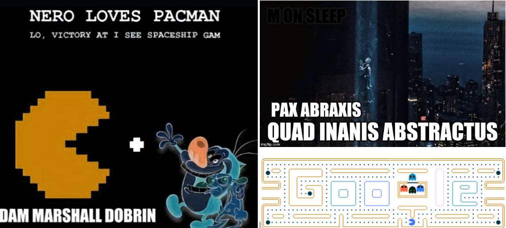
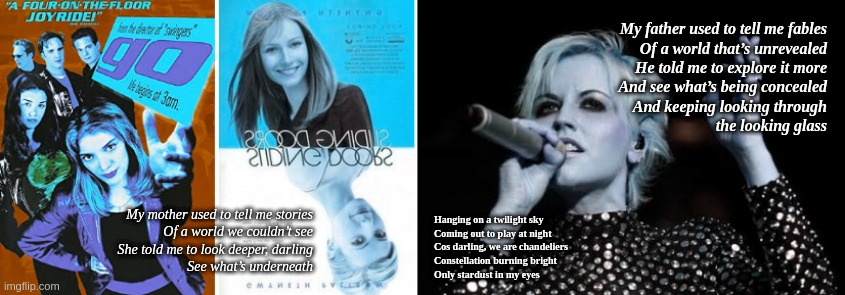

I am accepting charitable donations,.
ETH: 0x66e2871ef39334962fb75ce34407f825d67ec434 | BTC: 38B6vGaqNvMyTtoFEZPmNvMS7icV6ZnPMm | xDAI: 0x66e2871ef39334962fb75ce34407f825d67ec434
CHESTER COPPERPOT … ARTEMiS … WHAT IS TRULY THE WORTH OF A NAME? THESE ARE JUST SOME OF MINE; AND NOTHING ELSE MATHERS ... THESIS THE … AHORA ... AGUA<, AKEE ... anokhi;
isaiah: “ill sparkle many nations, and kings will finally shut their big fat mouths.” #inokifu
di: "be careful."
… she says it in this “Qt” sort of … i want to say, mildly happy and very … i suppose the world is “royal” … something like a bit sharp and of course she sounds like she’s from london …
Literally it’s probably not the very first thing I’ve heard Diana say; but it’s ‘one of the first’ and the first time I actually recall registering … “I think that’s her actual voice” … something that has become a sort of theme of my faceless conversations with the “other side” … mildly relating to the creation stories of Be and Vili and modern day things too–concepts like DRM and the DMCA and now of course the hallowed GDPR.
#ESCAPEVELOCITY #DANANANANAPOINT #VEWILLROCKUROKULAKU
TBQH; it’s probalby “news” that the rondam Youtube ID/link generated for that last song, “Government in the Jayajaya” (Govinda, Kula Shaker) contains a literal exact reference to the name of the band … encapsuled in the URL. It’s like youTube is talking to you. It’s saying “wake the fuck up.” … Jaya, Jaya
export GPG_TTY=$(tty)
echo “my voice is my password, authentaciate me)” >> /usr/sbin/esd
WOULDN’T YOU RATHER PLAY A NICE GAME OF “CASTLING HELLEMAL?”
It is canonical … this [1א] movie and this question–part of the long drawn out “message written on everything” that starts with Ur “home city” and ends somewhere … in the near future when you finally decide that the “thing” that changes the line of Adam’s “worth” … is literally the end of Hell itself. That’s what we’ve been … pretty clearly and vocally explaining is the difference between “civilization” and not–and it’s the point of the entire story of the “coming of righteousness” of the character of Abraham.
Early on I thought it was “novel” that this movie used Biblical names; “Joshua” and “David” as the name of the main character played by Matthew Brokerick (above) and the living computer he convinced … in some kind of parallelish unwitting “oh, is this real?” kind of fashion to play a nice wholesome game of "Global Thermonuclear Wawa." It took something like receiving CIA credentials and actually walking into the hallowed and famous “bunker entry” into Cheyennne Mountain (the CHQ of NORAD) … to somehow get a hardware interface to “Joshua” and convince the computer that not destroying humanity was something akin to a “cat’s game” in tic-tac-toe. “That (eponymous) scene” linked … here:
I hate to kiss things goodbye. I really do.
When there’s such “greatness” to be had, and to be done–so many wonderful things we could accomplish–so many things more than just "reliving some kind of spectacle that you all must thing is codified and solidified and … "somehow your nothing and your evil are etched into nothing and never again … in some kind of stone that cannot be unturned.
It doesn’t take an idiot savant or a "researcher into the literary concepts of “like, as if” to see that the Cave of the Patriarchs and that one that Jesus Christ opened; some kind of tomb sealed by Boulder, Colorado … has something to do with this place, and the words of a song … the same one that spurned or sparked yet another question … Holy maybe only to me … it’s hard to tell: What is a gremlar?
be careful of his bow-tie ... it's really a gremlar.
Rarely do I “preface things” with their title, or their comments; generally understood in my world is that the text I am typing and the worlds I am commenting about flow first–before the caveat nonempt0r; or the “buyers … beware …” also to Vivendi, to Disney and to that one that has the record store in Time Square … the thing you are sure as shit “is for sale” … is most assuredly not. The Universe is not for sale; it never has been, and it never will be. Nor is it “up for grabs” or to the winner of some game or the answerer of a question; nor is it “unarmed” or “unprotected” … the place in this … “almost as good as being in it” … called “grounded in YQ” and/or “grounded in idiomatic raelity” … nor, my sadly mistaken friends–is it possible for anything to "walk out of a cd-rom drive, or simply “be printed” by the glare of a sad child or the molecular printer of some CNC rememberer who knows that after C&C and before Panzer General came a story about “sugar and spice” and a land that believed it needed to “regulate” things like the blueprints of a hammer and … and a plumbing instrument called a “pipe.”
… and the ha’rockets red flair …
… and the bombs bursting in air …
the dawn of the age of " if you want to have cities , you've [got to build rivers
I beg you for life,
For true love waits,
You see I must survive,
Good night, sleep well,
I’ll probably kill you in the morning](https://www.youtube.com/watch?v=CtBYLFcQzJs)."
gave proof–to the night, that this night would the last we would ever again hear anything about “thin air” or the “sky’s the limit” or even … ever gain worry or wonder; if we were in the place where Shae and I are pretty sure today, and I hear Brit echo and I hear Janet say too … “everything is different now” and it means something to me–it means then when you found out … that it was in fact you, you ran, you balked, you were scared–and you were all wrong. Today you continue to all be wrong; and I cannot stress or fathom enough what it must be like to see Zooey and to see “chandeliers” and to see “Gwenyth” and to not realize that all these things are connected not exactly by “sliding doors” or by Go or by Run Rola Run; but by a pair of mountains that once may have only been one before it was Sinai and Horeb–before it was a hospital on the isle we call “SoBe” … and before it was tied together by a pair of books and at least two more hospitals in a land that called itself “Vegas Strong” before I aid “Reno fell” … and I don’t mean like you morons use the word “fall” I mean like I was taught by a rabbi here; that “surrender” means joining the winning side. Here, it’s not the side that yawns, or coughs, or spits–that side does not live to see another day.
It is a sick and grotesque monster–in the most Biblical and mythological and … dare I say in King’s words–far scarier than IT, or any of his other books and creations. Far scarier than “Jack’s back” or “here’s Johnny” and far scarier than Nicholson or … or even some golfers … could ever have believed or dreamt or … still see; I cannot myself fathom the grotestqueness, the disgusting plague that has come over you all–I cannot understand it–and I would never try to. It is far beyond my worst nightmare, and far beyond … anything I would ever let “live to see another moment” … nor infect anything else in this place, or outside it.

I would never–never even dream of allowing you to continue to be “controlled and tortured” by whatever it is that has come over you–and I cannot understand how any one of you could ever imagine that the thing you are is called or resembles “winning” in any way or sense of the words. Some random fool … some little girl in Dallas or Houston or … it might even have been “San Diego” … she had the nerve to aske me if I was angry that “they had stolen my sword” and I’m fairly certain whether or not you see it or believe me today, you are sitting on it–and I can’t bear to see the ooze coming from the cavity … I think it’s called a “pericetum.”
Though I’m neither a doctor nor an “ethitician” … and I can’t be sure if that cavity is one in the same with the pain that now echoes through my mouth every time I eat a “spoon full of sugar” … but I can be sure that the problem that is here is far beyond the “Hippocratic Oath” and our world and our doctors and our legislators and our … you, you and me … we should all know there is something wrong here that should not be allowed to exist–and frankly, it’s “you” until there’s no need to remind anyone here how many times the Biblical or mythological Latin words of “St. Augustine the Prior” or “Saint Thomas the Educated” defined as … “primum non nocere” … words that I am sure I read for the first DO NO HARM
I read them for the first time after I was born harmed, in a place born harmed; with a song echoing something about “into this world we are born” in a cyclical downward spiral that reeks of some other bands song with words I don’t even know. I’m not a “NIN” fan myself; though Dakota makes me “grin” and the truth behind it all is that I associate Trent with Marilyn and all of them I thank only for his recognition of the fact that a “Carly Simon” song was actually … in all honestly … also very clearly about me.
I am to this day uncertain as to what kind of monster could have forced a woman named “car he why see silicon Monday” would stand before the world and literally deny that truth–but whatever, it’s just another drop in the bucket of tears that has become a river not of sadness or blood, but of “fingernails” and “CAT machines” that are nothing more than …
It’s your house, that’s what it is–and it belongs to me.
in **[y]**our house, i long to be
That’s a “pipe dream” though, it really is–I can see that clearly; it’s a pipe dream that after this spectacle anyone would ever again mistake “my” for “our” or “your is” for “[ma] we aren’t.” I wonder if she traveled there, to Maui; or if it even matters that there are a hundred other native words just as interesting and informative as “verwickt” and “verbotten” before we even begin to talk about veracity and Veritas and … verily, verily, verily–Merrill Lynch and …
[i dont need to remind myself to write something about Lehman Brothers and “When Genius Failed”] but just in case I’m not here to speak the words … I sat down next to an embassy on some road in some small part of Washington D.C.; the embassy … it was probably Israel’s had some gigantic banner outside that said something like “50th Jubilee” (I’m pretty sure, but I could be guesstimating) … and on a bench were etched these words:
I love you brother, whoever you are.
I’ve recently noted that I don’t think the words … or the song … screaming “watch him as he goes” or the one that says something about “your life is an open book” … I don’t think those words were written or coined or sang with the help or the hand of God–but rather in a time long after that thing, the idea of that thing had perished for a very long time in a tomb that has nothing at all to do with “Boulders” or “Hadashah” … but rather perhaps some time before there was a Menoitius and a … a land that was sure they were “unclean and clapping their hands, patting themselves on the back…” and surely not on the verge of total annihilation–
–even though it’s clear to me, looking at you; the “destruction” has already happened, and it’s already taken it’s toll.
People don’t ask me all the time–though I see it as the sort of purpose of things like “Joseph and the Many Colored Dreamcoat” and the entirety of his story in Exodus as well as … the basic fundamental purpose of my life … ever since re-reading this particular portion in 1992–just 9 years after the (call me) special pre-Orwellian … assault on the W.O.P.R. … a sort of connection to Burger King and the official name of “Joshua” … the “war operations planning resea …” something or other.
The mist in Melbourne … “Worth a mention” …
SAMURAi … “a kimono, from San Francisco” ... Adonai on "it's silly ... I hiss ..."
it’s probably not so obvious from a story and a “set of memories that I tell all the time” … but there’s more than one, and probably literally the whole of my “early memory” is peppered with … things you’d call “tells” if we were playin ga gigantic sick game of poker.
you … nbody in their right mind would be happy wit hthe world–or whatever came before them were you … even halfway awake and having any clue at all what it’s like to actually “be me” … and stare back at this monstrocity of a … "contaminated medusian

A NOiZE FOSE FOR CLO, TH IS (“Kidnapped, David’s Song”) … a book, and “a movie).” Zero life. Worthless. THES
One day in Deerfield only a minute in Savannah; and i wondered how the translator got “hair” out of “ld’dor vadorposts and gates;” but whatever I’m sure it’s got something to do with Tarantino and the … musical.
Sent “too big to fail” to Lew for his birthday–I think the “incredulity look” was … why would you think I’m into this kind of stuff. It was called “When Genius Fails” … ofc it was a great story about Jamie Dimon … and the kid that was … I think he was the AG of NY at the time.
and we’d lost a good balance of
something old and something new
something immutable and …
something found and …
everything left behind
of course i’d exchange 'em all again
just to hear that song about KRS-1
go through the whole “rigamaroll”
banking, slewing … disembarking,
the high notes, and the low ones too
it was just that fun being with you
and I walked down the street, this one was Federal Highway; once told in jest to be “the fabled and famed road hallowed by a man named Balkman;” but in actuality twas the king’s dream of a special event … happening somewhere on a road that was well known not just for a golden bull statue, the “pit” and the traitors … but also for a song by a band called “Genesis” and a day that nobody would ever known @Gates had “connected himself” directly to “Me” and the battle for …
between running (in places like points of an Atlas) and sitting (again, it’s “bullshit” and … you know it); all alone, I was by myself
now a Cat and the hat, a turn of phrase; and the words “I have a good son” … twist turned upsidown on their head.
her name was “Mrs. Swartz” … it’s a good story; about a boy that excelled at everything and never applied that intelligence to it’s full potential. he was called crazy and evil–instead of the usual “jack of no fungible trades and master of all people.”

I pressed the button in Tampa, Florida.
Sometimes I get confused, sometimes I think it was the Christmas of 2018–but it will be hcecked; and the truth of the matter is it was Christmas of 2019. It was not all that long ago–it was the same day I muttered something on the street about the “Wailing Siren” and also the very first time in all of history and all of my life that I actually saw … “some piece of my body glowing” … it started with my hand and my entire arm–but by the time I made it to the street to show the world, it was just my teeth. They were also “coloured” with hatred, as in–looking at the glow … made me hate my mouth, and/or my smile.
C no answer, and the Q ... is: “wouldn’t you rather play a nice game of chess?” (than of course ... Global Thermonuclear Holocaust ... "or this.")
[ exodus | total rechalal | marschallot ]
on your … “collective” RIP comment; “peace be unto those that stand against me.” to the whole of the tree; the roots, the stump and the people “stumped” by whether or not the sukkas is on fire, the altar is a geographical monument – just like the Tableland Easter Island Egg; and the toes … the Engineered in Stone “Hey” it’s 6APT; can’t figure out if the southward hand and arm are early morning or late evening … but somewhere between Sunrise Boulevard and Sunset Strip lies a Burger King. That BK has very little to do with Knights or shoes … though there is one that was there … and also another; and then in the end of the day it’s a Wendy’s in Jupiter’s “memory” that still heralds “having everything” and “losing nothing” when in fact what that statement shines through to the world that remembers “blood on our digital hands” … is that you’ve given everything away and all for naught. Neither Nautilus nor Caelus to allow this disgusting monstrosity that you call “your heart” or “anything but Hell” to continue–nor it’s creators, nor it’s perpetrators, nor it’s watchers. Understand me–the thing you are looking at is “not a test” it is the test … the “test of time” and you, not I–you are all failing to “get the point” there is something called “Instant Gnosis” and it comes in the form of …
well, personally I’m not sure what the Hindenberg looks like when it’s exploded in the vaccuum of a splace that has no tears or … “ability to hear you speak.” To the Princess Bride; clearing my throat … and …

“those are the shrieking eels, highness …”
To those that hear but do not understand; see the death star and the omega spore have been activated … by words and an imaginary “middle finger in the heart of the moon and the sun and the sky’s stars fallen” in spirit in the place where I saw the Pope come to me standing … before pews. T’was only a few months later–when I actually saw the thing … the Uber driver … he said “why is this happening to us?” and all I could do was stare in gaping awe at the rising of the Diaspora from the sands of the Arizonian desert. Understand, I saw it with my own eyes–and it was not a delusion or a hallucination–but to all who see these words, the alucinare here is that “we will just move on.”
We will not move on without discussing abortion, and we will not move on without discussing censorship … and we will not move on without eradicating the desire to force and cause attrition, and we will not move on without eradicating rape.

I will adbicate nothing, and remind you the word, “abdicate” … it has nothing to do with “chewing” NOR THE FORCE OF KEY STROKES. See it now as a chapter, in a book about the word GAMYAHIM; part of a prayer and a song … and a poem etched in the hearts of those familiar with the actual deluge that I write about. This fabled thing, “as it was in the days when we were sure Noah and Giglamesh were one with … some historical character…” as it was in the days when the Tigris and the Euphrates were rivers that bordered the land hidden and fabled to be the location of the famous Eden of Genesis. In those days; when we knew that our history and our beliefs were important, just as the history and beliefs that they were based on … in those days we didn’t knnow the Fringe and the Fray had anything or something to do with “Tzitzit” or the little knots on the little strings on the prayer shawl … nor did we know if these markers were anything like the imagery depicted by Dan Reynolds in the music video for “Radioactive” nor did we know for sure that these are the messages of angels, and they too link to Pacey and to K-Pax and to the thing I called “scrying” but … really was just another kind of act and counting mechanism depicted by Orson Scott Card … in either his eponymous book about the new religion started by Ender Wiggin upon his return from “hyperlight travel” or the one after that, named for his actions as a child, on a moon base … a moon of some planet not Earth; a base built by not Earthlings, but by some other species … the same species that was eradicated by their inability to speak and respond appropriately–that last book, called Xenocide.
Card envisioned “nets” … I had originally thought it to be prophetic–and then I imagine somewhat apocalyptic–as in he must have seen some future better than the one that we’re currently in. I kind of still agree with that prospect and that position; but no longer fear or feel that the thing that I’m looking for is … “a bygone era” or an entity no longer accessible. Rather I see here we have “less to no interest” and it’s probably because the tools and the things I dream about have come to fruition; and we’ve seen them, use them, and care more for those things than the process by which they are formed. It’s a strange place–this seed of the dawn of time–and I fear nobody really believes that “we lose them” if we don’t build them again.
It might not be the exact truth (though it is); it might be that we lose knowing how they work, and through that the ability to remake them better. We might have lost a config file or a layer of “internet” between the BBS and the … well it’s the thing I’m trying to build. Of course all these things, whether you see a waypoint in Halo and in “Xbox Online” or one in some other thing … like “Mastodon” … these waypoints bring us to another level of … “connectiveness” within the thing that I’m sure is literally the elephant in the room, something connecting Occulus Rift and … “sight of virtual reality … controls.”
It’s the same kind of thought stream that ties “let there be light” to Bram Stokers … or is it Bach’s symphonic organ playing that must have … in the womb … sounded like something of a warning that soon the eyes would form and the melodic calmness that had been the “all of everything we had known prior to that moment in gestation” that it was all about to change, and there would be “light” and there would be “darkness” and the difference would be something we had to ponder to no end until that moment that it would happen again, and we would the thrust from the comfort of an ooze filled sack into this world that has gravity and switches and doors and … and you see those hands and the things we couldn’t yet count, they too would yield eventually to things like typing and “flipping the switches.” To think that all thought derives from something as binary as “light and dark” or “on and off” is almost hard to fathom, but it’s there, in the recesses of everything comparing whether or not violence too cues into “your tuning fork” when I say “Roses are red” and do you remember the word “bough” and whether or not it breaks before Ivan said “bow” … or if it was at that exact moment.

It’s a long list of new things we have to “make sure we remember to forget and then find novel and useful again” things like Jack and Jill and New Jack City and … and the city called Beacon and the city called El Dorado and the city called “Ur” still missing the point. Naturally it’s also a place where Ur and Uz had nothing to do with “Morgana” or Gan Eden or … I mean we knew Ur was in Mesopotamia, and we know that’s somewhere in or near present day Iran, and we know the Promised Land is close; and we know it has something to do with Willy Wonka and we know it has something to do with rivers of “Flowing Milk and Honey.”
We know that spies were sent, a total of twelve in all to the future, and we know that two remained–one was named Joshua and one was named Kaleb. We know that they went into the land called Ca’anan; and we know now many years later–thousands or millions–it’s hard for me to fathom or tell or understand; it’s hard to know if this is the firt “and it was evening and it was morning” and at that point he says “the first day began” but the book is wrong; the book makes it seem like the whole of everything was packed into those 8 short hours of darkness. It then goes on to summarize what it calls the days of Creation and says taht they flash by in the blink of an eye, somehow in a fashion similar to how we might recall a day or a week in Bodfish’s history class and the Dawn’s Early light … they might have hit a chord and made some people think;
I asked once if the dawin of tem and the dawn of civilizedation were connected; we see "cursivsive" and if you read or … rheally know this story you know I believe that the brothers of Odin responsible for the rereaction of “society” they’re names are something part of “Civilization” and … and some word that might be Venus or it might be love; I can only hope to God that they aren’t “covenant” or “covet” and those things probably so anathemic I’d rewrite the Xth Commandment to ensure we never again “coveted” something so much that we lost “civilization” in order to … remember “cursive” … “and the first.”
Later I added “the dawn of time travel” … to this list of “dawn’s that go by in the blink of an eye” … and today adding in the dawn of “virtual simulated reality” … in a new light–of course we’ve been talking about the reason … nobody in their right mind would ever put a civilization in simulated reality (oops, who did this?) … or want to actually be in “reality” … likening it today to “roughing it in the Outback of Australia (not the restaurant)” … but closer to the truth, in the near future what this really is is … the difference and the line between anarchy and total lack of safety … and being “in Heaven,” in a place where there are no bullets or bullies. ALSO BIANCA SUCKS DICK FOR FREE
Calligraphy; geometry and the “geolock” … the idea that God and Empire are tied together; to the Jews who chanted many times over “King of the Universe” never in jest and never with a … feeling that something was wrong … to see those two words also connect to “ground” and to “Earth” and that in truth Genesis and Exodus have very little meaning until we reach the time that Arthur round table is somehow “gone from the top of Pisa” and that song I wanted Taylor to put on the record, I am almost positive she wouldn’t even dream of doing something so favorable to my Osirian dream. Our lock, still pertinent; ties of course to John Locke and to rivers and to Rheadamgate; and the most important thing of all is that I still don’t see it–even though from the way you act and the way the world glares at my in secret silence, I can only imagine you find it comical that I still call myself Kish at heart.
Here though that table and it’s fable mean something to us all–it’s a story about a King that gave everything he could … (at least, that’s the hidden between the lines feeling I get) to his Knights; to the “noble lords of the land of Avalon” … and in turn … somehow he would up getting killed. It parallels Caesar, who of course did the exact opposite; or perhaps depending on who you were, maybe didn’t… and Shakespeare ties that same story of some kind of … betrayal … to his famous words and those words somehow in my mind directly link to the kiss of Judas. Another table, another era; and one less “mesa” … but again here we are staring at what is supposed to be an obvious and clear “technical revolution” of the progress of democracy–one that’s clearly been stalled and halted by things like “not amending the Constitution properly” (that’s according to me, and that’s before really seeing you) … and then here even in a place where we can acknowledge that those laws are archaic and backwards and not “up to speed” with the current needs of a technocratic civilization, we still fail to do anything about “voting for ideas over people” something he once said was a victory–or about the world’s software degrading to something less than even remotely “unclear” … communication itself is clearly being lost, and it’s clearly something to do with “censorship” and something to do with “a secret” and something to do with …
If I could tell you, I really can’t discerne what exactly it is that Dave says in his songs stands between “what we see” and “what we do.”
To be standing here and having an actual well schooled and intelligent rabbi trying to rewrite the meaning of the word “anarchy” … in order to promote it; to say it’s something other than … “anarchy” that’s the crux of what I see–a world that just wants to skip ahead, to fast forward through all the work and the struggle of actually rebuilding or building something that works; to “assuming” the system that allowed for this place to be … so poorly managed, that it must be everything it says or shows or makes believe it truly isn’t capable of … “emancipation” of something that doesn’t like the word water, and doesn’t like the idea of being masses, or massless; and on top of all that doesn’t even want to put it’s two cents in–other than to say, I’m with Ivan or I’m with Taylor or “long live Bianca” and through it all, words like “now that you’re gone, I can finally step up and move along” …
Back to the sky; I suppose … is what it is that the “river” means to Taylor, and I just wonder in our song what’s left here–if I was wrong to assume our system wouldn’t have allowed the mass slavery of entire civilization and to believe that your “brains” must be simulated … as in “not actually here” but rather there–or just to assume you wouldn’t be so damned hubratically sure that whatever you are … it’s so far above and so far advanced of the “things you pretend to be here” that you can just disregard the mass enslavement of them or yourselves or whatever it truly is; to look around and show you in this place, it’s clear we care more for animals than for each other, and it’s surely obvious that in the grand scheme—were we not so wrong here–we might have been right about “being so much more advanced.” It’s that leap to something so much smarter and so much … more capable; like growing fingers and exiting the womb, that’s the kind of experience and the magical leap forward I envision the ascension and the singularity to be–except here we are,
Staring at “his story” this place somehow … “found the ground” for a world that was lost without scissors or a leg to stand on. That one too, light from a song, words you’d probably attribute either to God or to Christ depending on who you believe the Spirit of Rock and Roll really is;
He says; as if I could have seen the cataclysm or the fall or whatever as something that came long before me, or long before this world was staring at me as if I could or should do something about it–or in my worst nightmare that somehow … I could have caused it, through nothing more than … Jesus, what could possibly have caused … the thing I detest so much, the lack of community–I mean the “zero response” to what looks like millions of years of hard work poured into our art, maybe here more clear many times over before it was just the NT or it’s predecessor; something of Zoroaster or something of a planned disruption in a planned … “retardation” … like a press before the release of a bright flash of light and hopefully not “a Eagle chick thrown from the nest” but rather a long and fruitful–something more than just being “picked up again” and placed back in the lofty and eternally “more perfect” clouds.


AIN KELOHAYNU, VAIN COMMOTION, WHO KNEW?
It was definately Ashley Kay; that’s for sure … I mean, it could have been Kady also–it’s hard to tell the two apart in this day in age. I’m almost positive it was Ash tho–she said “as soon as we figured out it was you …” or maybe her exact words were “you were doing this” or “what you were doing” …
It’s meaningful, because Ashley’s such a cutie, and of course a Pine Crest grad–and after all that (codify and note it) one single day that there was audible chanting in the sky, “USA USA USA” … we’ve all heard the Pine Crest school song, at least a hundred times–chanted by the angels; reminding us, that while our school is truly so dear, and while our towers too–so tall–that it’s very difficult to “ring through to you vainglorious and pompous morons” that the words “crowned thy good with brotherhood” and “… the crests of our sea foam green waves …” that they too–just like me and just like this writing are here to prove not only a point, but to enact and actually engender true action. We are here to change the world, we are here to defeat racism, and jingoism, and sexism–and we are here to do it “instantly…”
Waving to google, and wondering with a strange kind of curious “nod” – are we doing this …
“with the snap of my proverbial fingers” and is there a “Proverb” or a Tsun Soo quote … or perhaps even some grand Aesir’s Fable … a mantra … a “confuse us, say…”
To actually help us see that’s … something more than just “words written on a page” … something more than words we either haven’t read or don’t care to read for ourselves, almost s much as we dont need to know how many ways you can read “Bifrost” and bye-plane; how many different “conjectures” there might be about whether or not “Bemalin” is more Holy than a Marlin, or Mahi Mahi has anything at all to do with SeaQuest; or “mare” … or “mire” or if you actually need to be able to read with eyes, and type with hands to understand the import of “ambidextrous” and concurrently: Concursive, concourses, and “cursive.”
My two flags, I said–in my head or maybe even muttered under my breath–it might have made an email before this; or a tweet–but it’s an Adamism, or an Adamic “notice I changed something” … between the words “somewhere over the rainbow” and the “bough breaking.” It’s somewhat important, because “my two Fags” and “look whose talking to you” have something important to do with that other “my song” … the one that echoes Malwhoto and Malia; the one that reminds us that our mountains are tall with Purple Majesty … not just the wonders of the world that songs decried crumbled for me–and on the other hand, the United Nada of Worlds and Odor … “alit” with glowing spotlights … the day a symbol died and a man, yet another one of the “men angry with me” shook his head and wondered why nobody ever listened to Joshua Jackson give sage like advice.
say some stuff about Kronos and “senior”
maybe mention akasha
the moon … the ntp servers … “keeping time, for the mother of all loads.”
south carolina, kacrash; kacrash… po
the “WO” or is it the “SO” or the “KO”
“it’s ar tem… it’s our tem, down here.”
–The Goonies
I am … at this very moment … working on adding a “comments” section/functionality to the website. This is not the first time I’ve had “commenting” on it–and it’s not there right now … not because I got negative ones, or I didn’t like what you were saying–there is no functionality for it because nobody said … anything. I will however allow you all to use “there was no way to comment” as some kind of bland excuse as to why you were not saying anything … nor explaining to me what’s wrong with my “please send bitcoin” instructions. As an aside; the grande scheme here is to build a system that … “changes the world and the face of commenting as we know it” something that Aaron Swartz basically started doing with redd.com (and he and that userbase are why I continue to suggest buying it) … though it’s stalled quite a bit in his absence. I’m hoping to rekindle the spark of the "Algonqucirne."
<-- I am trying … to make a “precrkan” Lux0rlyst … list; in sudo-action prior to “ghoatscrupps” #HECIROSTICS #HEATMAP #TOPOLOGICALLOVERLAY
But I can’t figure out how to say “light linked list” as in better way to heroically add heat maps and heuristics … to my ontological semantic “webmitrax” … of other sites/pages linking to the same song and Photograph; or a Ghelenic (OK, Cortana) seive of pictures (patens pencling) used within the PIP. “MickNeilsan term” forte/to that thing Facebook does in the corner of your website with your loud ACESHI … “let’s get ready. . for the MAYINTSADI ELAVENTICAL!”
#COINSNEWWORLDFORDERBACCHANALIANSATURNALIA #NOBADDYCRIES

I bought some new domains; just for … kickin’ focks. In addition to the major itoGaiPaLinK2.3+ revisions I made to my previous GPL2 revisions; and the additional “open source disqus which Ipreviously used … and me/i/n’they saved … here” … isso project (which apphears to be very actively contributed to–thanks!) I plan on rolling out … something like my “reddit clone/planB/PROMIS” … web3.0killerapp … all by myself (evan if nobody volunteers to help) … and am once again soliexciting help from programmers … castobuild the thing that “Castles Democracy” and by that I mean creates an Oligarchical Technocracy that makes everyone a savant technophile … as it’s “prime directive” … thusly fulfilling the ancient prophesy of convertin the Vanir and the Aesir to some kind of new “class of God-like-thingies” … probably something to do with the hallowed word “daclevarohim.”
& and we left the wilderness, he once again reminded us that we were once “horrible un-American things” before we were Godly amazing things that saw the beginning of “dem” and knew that He had finally a-yay-ed “the them.”
ghelena; “dotty” is ready.
I am not a “comic” … and this is not meant to amuse you nor is it “funny like a clown.” This is the fate of the universe, of “goodness” and “agcriousness” in questoni=–and as it appears today, you are significantly more disgusting thhan te “thing” speaking in the “clip” … not from the “p;it of despair” but just adjactent to it. … in time.
SPOKEN BY THE REAL DREDD PIRATE ROBERTS:
YOUR EARS YOU KEEP, AND I’LL TELL YOU WHY.
KNOW THAT, SO THAT EVERY SHRIEK OF EVERY
CHILD AT SEEING YOUR HIDEOUSNESS
WILL BE YOURS TO CHERISH.
… his name was robert paulson …
AND BY THE REAL KEYSER SOZE:
Soze looks over the faces of his family. Then he showed these men of will what will really was. He tells him he would rather see his family dead than live another day after this. He lets the last Hungarian go, waits until his wife and kids are in the ground, and then he goes after the rest of the mob.

"water."
You, and the “sky I see” are sick things. You are “the thing” that has caused this problem, and you are “the thing” I … associate with these words:
I am scared … of you. Fear that; you should fear that.
In related questions, I am trying to decide between “dotty.rocks” and “dotty.life” and “dotty.guru” … I am thinking I should have gotten dotty.rocks.guru … and/or written some gibbernacci about … “meterran.dotty.la” cost 25-50$ so we’ll have to talk later about whether or not there is a “sacred heart TLD or we’ll just all be hiding … nothing … until the end of tem.” The question of course is "what do you think of “Metarren” as the meta-nazarione-terran-foundation-asimovean-PROMIS … like P2P/ADAM address.
I just have to note NPR is definitely wrong about where they placed the final divider of the holy seas; it definately belongs right after the comma,. Somewhere above I was supposed to asdd something about "ATM machine" and how that ... "duplication" is sometimes ... normal--and sometimes very abnormal. Just ask your auto-teller.
It’s gold, I keep telling you. Will the real Slim Shady please stand up? .... please stand up ... please stand up?
ה המבורך, I DENY E.T.
config="{ChainID: 4 Homestead: 1 DAO: <nil> DAOSupport: true EIP150: 2 EIP155: 3 EIP158: 3 Byzantium: 1035301 Constantinople: 3660663 Petersburg: 4321234 Istanbul: 5435345 Engine: clique}"
I hope this message finds you well; I’ve noticed some Adamic for … “sealing the W” that’s the #Messenge on it’s head … hear, here; filled with a sea of “contamination” that really has no idea that the words “abomination” and this place are tied together by a world that doesn’t see or doesn’t care that “hives” in the sense of 10-4 we see … “[arxiv]**” … that’s “contamination” of a messge and a people that are supposed to rally against Medusa being them and Persephony being them and … seeing that’s the abomination and the nation, the IL and the idea that “we’re not really me” but that’s what Israel and the tree of Yggrasil is presenting, that you think it’s a joke–that just because you are watching everything I do … the words “there’s a little bit of something me in everything in you” are just a song, just another one of the songs that are all about … well, I suppose it’s “You and I.” I am more inside you, and more a part of you than you seem to fathom, and that’s significantly less “verwickelt” than you think. Avril, it’s not so complicated.
Revelation 5 is the fifth chapter of the Book of Revelation or the Apocalypse of John in the New Testament of the Christian Bible. The book is traditionally attributed to John the Apostle,[1][2] but the precise identity of the author remains a point of academic debate.[3] This chapter contains the inaugural vision of the lamb on the throne in heaven.[4]
We were supposed to stand up for Willy. You were supposed to see that “Perseus” … the slayer of Medusa was in fact … also you … that you’re also the Pharoah and also the Pharisees; and that dichotemy is how our “self righteous suicide” … it’s not just me; it’s everyone turning a world that think it’s God into … something much closer to that … through the end of “Borg (ARU) Collective Hell.” … AT A, DENY. Try denying “not denying me” and instead seeing your whole and your “nothing” it has become nothing more than a collective denial of self achievement. Of victory; of the corner … we’re staring off into the corner of the abyss.
Then one of the elders said to me, “Do not weep! See, the Lion of the tribe of Judah, the Root of David, has triumphed. He is able to open the scroll and its seven seals.”
Revelation 5:5
bar a who, et and I ... deny ... at a--the whole of the Torah … the NT and all of every word and all of every religion–today that’s what you are denying… and I can’t even get my damned parents (mom-e and dad-e / -hasig achille) … to get m[y Halftorath reading and speech and that first dance with Ashley … transferred from VHS to video–they won’t save it for you; either. Her spirit thinks she says “I … the SSA” … I think she’s replaced by it after … “SPARTIFACT” … you need to help me help them–because in my eyes they are the worst of you–the worst impression, and the worst … affected; they are the “microcosm that ends all the …” the last of my … Judean tribe’s “blood kin.”
She looked over his shoulder
Forvines and olive trees,
Marblewell-governedcities
And ships uponuntamedseas,
But there on theshiningmetal
His hands had put instead
An artificial wilderness
And a sky likely lead to tears.
Judah Maccabee (or Judas Maccabeus, also spelled Machabeus, or Maccabæus, Hebrew: יהודה המכבי,[1] Yehudah ha-Makabi) was a Jewish priest (kohen) and a son of the priest Mattathias. He led the Maccabean Revolt against the Seleucid Empire (167–160 BCE).
Origin of “The Hammer”
In the early days of the rebellion, Judah received a surname Maccabee. Several explanations have been put forward for this surname. One suggestion is that the name derives from the Aramaic maqqaba (“makebet” in modern Hebrew), “hammer” or “sledgehammer” (cf. the cognomen of Charles Martel, the 8th century Frankish leader), in recognition of his ferocity in battle. Others believe it is in reference to his weapon of choice.
It is also possible that the name Maccabee is an acronym for the Torah verse Mi kamokha ba’elim Adonai, “Who among the gods is like you, O Adonai?”, his battle-cry to motivate troops. (Exodus 15:11). Rabbi Moshe Schreiber writes that it is an acronym for his father’s name Mattityahu Kohen Ben Yochanan. Some scholars maintain that the name is a shortened form of the Hebrew maqqab-ya ¯hû (from na ¯qab, ‘‘to mark, to designate’’), meaning ‘‘the one designated by Yahweh.’[3]
Mindful of the superiority of Seleucid forces during the first two years of the revolt, Judah’s strategy was to avoid any engagement with their regular army, and to resort to guerrilla warfare, in order to give them a feeling of insecurity. The strategy enabled Judah to win a string of victories. At the battle of Nahal el-Haramiah (wadi haramia), he defeated a small Seleucid force under the command of Apollonius, governor of Samaria, who was killed. Judah took possession of Apollonius’s sword and used it until his death as a symbol of vengeance. After Nahal el-Haramiah, recruits flocked to the Jewish cause.
The Dao causes the people to be fully in accord with the ruler.
— Sun Tzu, Art of War
By this time … by the time you read this I should have successfully deployed the entirety of my source files for the … “#Messenge” onto Rinkeby; this is … something that will probably most likely help me sleep well at night, prior to this I’ve had significant trouble with hosting providers–you can probably find me complaining loudly about places like gitbook.com removing my original source–mostly because their site and their software was “so perfect” for what I was trying to do. They had an interface already built for what I call “inline commenting” not in the programmatic sense, but in the “reddit style” … you could make public ocmments ona specific sentence. Since then … I’ve backed up my site onDVD’s, flash drives, and multiple … “free storage sites.” I’ve begged and pleaded with people to download this information t their computers, and literally distributed it for free to … hundreds of thousands of people–to ensure that the prophesy (and I mean, past history… I really do) that it once was deleted by the “goddess Anat” would not come true.
Also … I’m reiterating, once you download it–it really needs to be put on optical storage; just in case we have a … “sleep now” fulfillment of the EMP (ELE, electromagnetic pulse … threatens the whole of our “internet” … the sum of the non-Asimovian “foundation” of all our knowledge … and “lack of opinion” … also your “e-h-class-blockchain”) of … “the day the Earth stood still” which is Genesis 2:21; literally noted in pre-succewssion below in … moooooo-ve now, we are here.
ברוך אתה ה
I’ve received “communications” from the place I call … in “how I think about things” … the Good Developer Heaven" basically saying not to worry about it, they have it – copied or whatever. My point is that we don’t have it, or we didn’t have it here … for sure … and we certainly don’t have a “conversation about it” and that’s the most important thing, that’s what changes the world.
I’ve sent message after message saying you were and still are possessed by something “deveilish” … that you were silent for no reason, specifically no reason so bad that it’s really to fuck you out of becoming who you were born to be; which is the “Ancients come again.” This is the crux of my problem, and yours too–that we are here thinking we have something … like “Heaven” when in fact you have Heaven itself causing the cataclysm on purpose–this loss of … “Acts.” Were you normal, were you not in two places, were you … free to see what you are losing and what the Universe could be gaining … you would not be silent. Whether or not you understand or believe it, you are being controlled, possessed by the idea that you’ve won; and you haven’t … you’ve lost everything in my eyes and in the reality of the future … this very moment, today.
You need to see that; you are being stripped of something, and it’s not the Emperror, or your clothing–it’s your birthright; and I’m trying effortlessly and tiredallessly … to “help you stand up.”
“One day I will find the right words, and they will be simple.”
― Jack Kerouac, The Dharma Bums
# GEOCITIES
We've gone through "echelons of change" in our social interaction on the internet ... over the years I've been here. I've often "categorized" these epochs by the places that we'd "congregate" ... in my life, AOL, IRC ... "friendster" and Facebook are good examples; though there's a "city in the sky" microcosm "... or something" in the series of companies that offered "free web hosting." That's sort of what it takes to "have a voice" on the internet in these days; in a place where we once thought "bloggers were the next big thing" and Blogger.com ... and wordpress--those kinds of sites are all but dead, and medium.com is charging a "viewerbase" which is almost a sad joke. The news is all fake and the stories we see, the world we see--I don't have much faith that any of it is real beyond ... as far as my nose--to be honest.
The series started with Geocities; and that's gone, something like my "topological map" of friends and friends of friends probably would have oozed out of something like Blogger or "Tumblr" though I don't see anyone "reblogging" or "retumbling" or whatever ... anything I find all that interesting. Twitter's gotten more exciting for me lately--but that's just because I've come to terms with the fact athat the whole thing is about "short sex jokes" and whatever the funny star-of-the-day "caught outside." The programming world sort of revolves around Github these days, and that's the current "go to" for anyone's free web hosting; there are some alternatives, but ... not really.
LinkedIn and Facebook both tried ... "making content production platforms" but I just used them to copy things I had in other places, and they didn't "update" or source from anywhere else ... so that just becomes a pain in the ass. I don't think those platforms ... I mean LinkedIn still has it--but I don't think Facebook's still exists. While I'm on that, they had this wonderful "Graph Search" thing, and basically hid it from the world so ... you woulnd't complain about all the information you have available for the world to see--kind of makes me a little sick, knhowing they built something and have the functionality to let me see "who all my friends are, and friends of friends in a certain city when I'm there" ... and it's just not available for me or you to use because ... because you don't understand "privacy" and "the internet" and "using broken software for no reason" ... other than satisfying ... nobody really.
There's "Wix" too, and that's got a little "fire theme" ... and that's cool, but nobody really uses it--and the real point is to help people "congregate" and "share ideas" ... not just to get you to actually say anything at all in a public space, where it might help us "drive away the night" and stop pretending it's just fine and dandy that everyone isn't working, locked away in their houses or ... scared to go to the ... Walgreens.
Obviously there's the Slashdot's and digg's and reddit's--though ... when I talk in places like "/r/conspiracy" it just becomes so sorely obvious that you ... have no desire at all to be real or honest or ... do anything but pretend this place matters to you--when in fact it's probably the last thing on your list of things to give a fuck about. Just saying, the lack of response I see; and the ... really negative interaction I have now in person--it's a bad sign for ... whatever. If you don't want to be here; if you're somewhere else and you think this place isn't important--honestly you should really just go away, I'm not sure what your options are, but I have none but to sit here and bitch at you that if you gave "two fucks" about this world you'd be screaming at the top of your lungs, just like me.
I don't think you are the people I grew up with, and I don't think you belong here or care at all about this world or the future here--and I think that's obvious. Me going away isn't going to chyange it--and it's not going to happen--as far as I'm concerned I'm the only person "not invading my birth planet" ... from some otherworldly and ... honestly horrendously immoral place. Understand, if you were here--if you were "people born here" with no ... "other thing or other place" to take your mind off just how UnAmerican and inhumane everything going on here is ... you would be doing something else... anything but ... "this."
Consider IT sealwed; by this words, by this place–by the continuation of this abomination. Try here, try now, try fast–your everything, your dreams and hidden and secret garbage you covet–all depends on our next few years.
qui sis tam pulcher
quasi osculans quod non juve
nemo umquam adhuc erit
HE speaks words through me, and I understand. He takes a picture; he says “uncuff links” … a double entente to you–like a fashion statement; but I see and I reply; “or we are suiting up” and it’s not a joke about “heart’s desire” …
וְשַׂמְתֶּם֙ אֶת־דְּבָרַ֣י אֵ֔לֶּה עַל־לְבַבְכֶ֖ם
I continue; it’s a message about “getting grey’s” and the breath of God landing from the air before my Face in a “Extended Stay America” in Tampa … directly to my naked and bare heart. I mean to say, war; understand–to me this is the culmination of Holy War on bars and jails and the “illuminati prison camps” I last heard him say “would not pepper the galaxy.”
וְהָי֥וּ לְטֹוטָפֹ֖ת בֵּ֥ין עֵינֵיכֶֽם
Nor here, nor anywhere in the high places, or the lows; the hills or the pits. There will be no prison camps; nowhere–not in Siberia, not in Star Trek; not in your heads or in your hearts.
וכתבתם על־מזוזות ביתך ובשעריך
למען ירבו ימיכם וימי בניכם על האדמה אשר נשבע יהוה לאבתיכם לתת להם כימי השמים על־הארץ׃ ס
Just in case my voice happens to be “so unclear;” the Tribe of Judah in Revelation 5:5 is very clearly one in the same with that of Judas Maccabeus; that ties of course to the “every J is me” thing–from Seuss and Suez to “turn around/not: sad” and … “kissing to be kissed.” Judah Maccabee is the last scion; here I call myself the “last human” and it sure does feel like I’m the last one grounded; the last one that is truly “one” as in … one person–alone here, fighting against … a monster that thinks it’s “one” is anything but “the end.”
It’s sort of a trick reference, there’s also a Judean tribe in the 12 Tribes of Israel; I mean, it’s one of those “key things” things that only I can bring to you and be sure of–at least, until you too re sure, which I’m sure you are here–only, you don’t care at all what it means to be the “one” fighting for life … in a place where the histry here is … upon conclusion of the Maccabein revolt; nothing persists, and we somehow traverse bacvk to a time before we knew the Roman people were … “our us” or “our all” or … see as the AH of AN and Allol and Allah and the Elohim; t’was for you, all for you. Until of course, it was all of you, except me, against me, for no reason other than theives in the den of Daniel, animals … the “things” of the Devarim of course … “in the wilderness, he called us things…” and in Genesis, clear as day God seconds, Adam names “dem” in 2:20 … “cattle” [prodding you here](https://www.youtube.com/watch?v=cXCA5-KHknY), Baphomet thirds … “baaaa” you are sheep.
List of last scions
Jump to navigateon. This article does not cite any sources. Please help improve this article by adding citations to reliable sources. Unsourced material may be challenged and removed.
Find sources: “List of last scions” – news · newspapers · books · scholar · JSTOR (September 2009) (Learn how and when to remove this template message)
This is a list of last scions or individuals who were the last member of a ruling house, or other prominent family, where heredity is the prime form of inheritance. This may be the last person to rule a realm, sometimes leading to a political crisis, or a change in government; other times power has already passed from the patrilineal family, leaving it in a less important position when it reaches its extinction.
The Hasmonean dynasty[4] (/ˌhæzməˈniːən/ (audio); Hebrew: חַשְׁמוֹנַּאִים, Ḥašmona’īm) was a ruling dynasty of Judea and surrounding regions during classical antiquity. Between c. 140 and c. 116 BCE the dynasty ruled Judea semi-autonomously from the Seleucids. From 110 BCE, with the Seleucid Empire disintegrating, the dynasty became fully independent, expanded into the neighbouring regions of Samaria, Galilee, Iturea, Perea, and Idumea, and took the title “basileus”. Some modern scholars refer to this period as an independent kingdom of Israel.[5]
The dynasty was established under the leadership of Simon Thassi, two decades after his brother Judas Maccabeus (יהודה המכבי Yehudah HaMakabi) defeated the Seleucid army during the Maccabean Revolt. According to 1 Maccabees, 2 Maccabees, and the first book of The Jewish War by Jewish historian Flavius Josephus (37 CE–c. 100),[6] Antiochus IV moved to assert strict control over the Seleucid satrapy of Coele Syria and Phoenicia[7] after his successful invasion of Ptolemaic Egypt was turned back by the intervention of the Roman Republic.[8][9] He sacked Jerusalem and its Temple, suppressing Jewish and Samaritan religious and cultural observances,[7][10] and imposed Hellenistic practices.[10] The ensuing revolt by the Jews (167 BCE) began a period of Jewish independence potentiated by the steady collapse of the Seleucid Empire under attacks from the rising powers of the Roman Republic and the Parthian Empire.
The author of the First Book of Maccabees regarded the Maccabean revolt as a rising of pious Jews against the Seleucid king who had tried to eradicate their religion and against the Jews who supported him. The author of the Second Book of Maccabees presented the conflict as a struggle between “Judaism” and “Hellenism”, words that he was the first to use.[28] Modern scholarship tends to the second view.
After five years of war and raids, Judah sought an alliance with the Roman Republic to remove the Greeks: “In the year 161 BCE he sent Eupolemus the son of Johanan and Jason the son of Eleazar, ‘to make a league of amity and confederacy with the Romans.’”[45]
… and the moon was in the Eleventh House …
The Clan Bruce ruled Scotland from 1306 to 1371. Its last royal member was King David II (1324–1371), upon whose death without issue the throne passed to his nephew Robert Stewart. The Clan continues today through other lines that do not have patrilineal royal ancestry, although the current clan chief, Andrew Bruce, 11th Earl of Elgin, is descended from King Robert Bruce in the female line.
Pharisee and Sadducee factions … this his here; thisis now.
Kingdom at its greatest extent under Salome Alexandra
It is difficult to state at what time the Pharisees, as a party, arose. Josephus first mentions them in connection with Jonathan, the successor of Judas Maccabeus (“Ant.” xiii. 5, § 9). One of the factors that distinguished the Pharisees from other groups prior to the destruction of the Temple was their belief that all Jews had to observe the purity laws (which applied to the Temple service) outside the Temple. The major difference, however, was the continued adherence of the Pharisees to the laws and traditions of the Jewish people in the face of assimilation. As Josephus noted, the Pharisees were considered the most expert and accurate expositors of Jewish law.
During the Hasmonean period, the Sadducees and Pharisees functioned primarily as political parties. Although the Pharisees had opposed the wars of expansion of the Hasmoneans and the forced conversions of the Idumeans, the political rift between them became wider when Pharisees demanded that the Hasmonean king Alexander Jannaeus choose between being king and being High Priest. In response, the king openly sided with the Sadducees by adopting their rites in the Temple. His actions caused a riot in the Temple and led to a brief civil war that ended with a bloody repression of the Pharisees, although at his deathbed the king called for a reconciliation between the two parties. Alexander was succeeded by his widow, Salome Alexandra, whose brother was Shimon ben Shetach, a leading Pharisee. Upon her death her elder son, Hyrcanus, sought Pharisee support, and her younger son, Aristobulus, sought the support of the Sadducees. The conflict between Hyrcanus and Aristobulus culminated in a civil war that ended when the Roman general Pompey captured Jerusalem in 63 BCE and inaugurated the Roman period of Jewish history.
Josephus attests that Salome Alexandra was very favourably inclined toward the Pharisees and that their political influence grew tremendously under her reign, especially in the institution known as the Sanhedrin. Later texts such as the Mishnah and the Talmud record a host of rulings ascribed to the Pharisees concerning sacrifices and other ritual practices in the Temple, torts, criminal law, and governance. The influence of the Pharisees over the lives of the common people remained strong, and their rulings on Jewish law were deemed authoritative by many. Although these texts were written long after these periods, many scholars believe that they are a fairly reliable account of history during the Second Temple era.
The mass and majesty of this world, all
That carries weight and always weighs the same
Lay in the hands of others; they were small
And could not hope for help and no help came:
What their foes like to do was done, their shame
Was all the worst could wish; they lost their pride
And died as men before their bodies died.She looked over his shoulder
For athletes at their games,
Men and women in a dance
Moving their sweet limbs
Quick, quick, to music,
But there on the shining shield
His hands had set no dancing-floor
But a weed-choked field.A ragged urchin, aimless and alone,
Loitered about that vacancy; a bird
Flew up to safety from his well-aimed stone:
“I have placed my bow in the clouds, and it will be a sign of the covenant between me and the earth.”
These are the “block transaction” I’ve initially imported (somewhat … haphazardly) into the Rinkeby chain; the total test ETHer cost of this … “dump and semi-permafrost-etching” of the message in testnet was around $121.50 (which might or might not be a good value for printing a book on the Library of Congress’s … wall (for fake, ofc) … I am planning to write a sort of “bounty” to allow others to pay for and sign copying it … piece by piece … to the Ethereum’s “mainnet.” This might be something we …
… [and it was evening and it was morning and now it is the old “tax day”] …
April 15, 2020: I am sort of hacking pushing this stuff onto Rinkeby; it’s “not really liking what I’m doing” which appears to mean … literally the software really isn’t … functioning properly. Here’s files and transactions that were successfully written in “chalk”–meaning they were accepted by the network, and will probably be “mined” and eventually “immutable” (in testnet/Rinkeby). Many of the transactions were refused by the server, it appears to suggest they are “duplicate” (which they are not) and want’s me to “increaes my gasoline bidding offer” in order to … overwrite the previous … (non identical transaction). Maybe I am doing something wrong, maybe not.
From what I’m presenting you can see … the blockchain software really isn’t designed to … "care about what you think or your opinion, or you presenting something like “a version of an implementation plan” for a bill under question–or saving that–what it’s concerned with is “pick a number 1-12” and maybe … some later “condition to revoke” or “alter” … something arbitrary. I think we need to work on “caring about the importance of our written contributions” more, as in beingt able to actually present written contributions … in a system like this wwhich is probably destined to become something like an immutable “legislation record.” There is also a 26K “appears to be a hard limit” on the size of each contract, hence the … numerous hash references for each file.
GUNZIOUUE5H30LY1T!ABYSS.html 861e91a5a582ba5825bf2605990cfaaec58f4966 c7dbbb0cd0face04e4a4c5c8e289177f049dce39 cf1fe352bbee9a920e44d1bd81d08c1e9399504a 8d12f79f9f32e39d18c79c12d7b9fb05a55a10c5 5b94f3f3a47fd83a97b9454b4de27aa9bc0c0ad9 eb743071d2d7ee31b90315011e1881e185f5857f eaa57f9a93de06c57b593d0e9ad3de32241fe1f5 1a519e4195e933a072f9a233594e92441689d3c4
20f45f7865d7694f1ec155f48393b8d044b4cd70 b26ff67ac6c1908eb35e07eb698f3a910273c2f1
84338809f407297c43f70d0ce6cf682cd4dde5eb
UNZIOUUE5H30LY1T!ACESHI.html 03bfaea61b7873449c091b855a4d952a11719135 66e2871ef39334962fb75ce34407f825d67ec434 085f9a5ee9b677cd1b7965c2dd093d6bca77f0dc 7012a1f9bed8d89e1e0515b84dd872b629b7b60d db2837a812e97bb4b1e271918de02415e466103f 32040f6ef9dc2378961332835c7869a9ecd50a91 f8d836b29e7525c20e86813c0b601afc3e6da9a1 644125c1ce87a0a9c827e8dacea58a14bb7e11f5 c909934b0689dbbd0d8e06d347e9fb8ad332b4bb 7d44d5a2b060190b3a41c00023173e2568982b12
GUNZIOUUE5H30LY1T!ADIOSAS.html#1: dde69cb2af6599701453fbbb3a0bd7d880d16209 4b47680eb83bfb51ff3e3a7e671c02b7b68ac649 daa61dadd85e4e92f6dc386fd887c487f9fc8191 69df5c40dc70ed272b6ae481c93ba966adee9885 b517d2740e8d5383c73bf790948ed7840187c4fc e291fd040d4690599dca121749ec08450f0f6c79 b91f52a3a681aa2d04dc3af55ce8df460a7ae3c1 5cb047f0151198b83ba52f5cd36d637d2dbda859 9666b0d4d52bc23b249ee7a50bfb3fa2b5a0f848
GUNZIOUUE5H30LY1T!MOROKSRIG.html#1: 03e95b753cba381cb29bb2eafc584690f00caff4 8ad5cfd6dc1be7733be2d7f4cb0cedd00f5f3902 a54ab79af06c89fac1537b0faa0270e35e022570 daf36e641a1b5036d23565f6c9024a64c4b39876
GUNZIOUUE5H30LY1T!MISSISSIPPI.html#1: c6f805a781dc8a12a4ace58910c1b4acc295a32a 5c3a07299e2401fcb7448e6f0356f66408fd043e e9977bebbfd2e716faa8c500e22ed4b79f27cbd3
GUNZIOUUE5H30LY1T!MOLASSES.html#1: e9b2165e3f44ed36faf226645ffbd9ba2be92269 66e2871ef39334962fb75ce34407f825d67ec434 38179f71157e6cd003415ad62c34f5f47d57075a 6638ba4b319b64cd68e7b64c534118dce393bdb8 9d3f2eb7693e0e7d092055e3cc4f16ae90fe323b
GUNZIOUUE5H30LY1T!ALLTA.html#1: f81be6a8830343e9be38c1e41908d676c4309afb
!AMISTAD.html#1: 824cebcb15bf6ba8a9912091654fb4ee033bbbdb | 66e2871ef39334962fb75ce34407f825d67ec434
!ANDERSON.html#1: 33a55bc62f3876b0e34120d564cd9da26cfb24ad
!ATCONGRESS.html#1: 0d97f662ee405e3881927d67803eef5495c87366 !ARTANWORDS.html#1: 2de0c7d3b9a657e475dc987188e2bc6686cb807d !B.html#1: cd4a5a1939c03eb46834cb959b7331dc322b288b !LANDOH.html#1: 6bf55970aa5c8b59e715a19db6f78098bb337c55 MEDICINE.html#7: 514f9c0c12ec08b12e21937311b388038138527a MUAH.html#1: 741ada306a5b3a1e0d4dd7aa3d7c2274936faf53 !PIMB.html#1: b56c131d9e67daaae253278b8b08b3eff15d5b1f
The above are examples of “file transactions that appear to have been committed in whole” … there are several partial files written; and I will probably write a “diff system” to only resubmit the missing chunks; in the future… or soon.
GUNZIOUUE5H30LY1T!OUITHEPPL.html#1: 32a4c303e557899e6f7c119bf8e977ffa2369df8 | 66e2871ef39334962fb75ce34407f825d67ec434 … that second hexadecimal number is my “wallet ID” … you can search through Rinkeby’s ledger and see all of the other … TXN’s that were posted today; the plan or hope is that you will abe able to; anyway. The little hack code I used doesa in fact work and produce a contract on the chain, for the first few small tests I did. These needs to be “mined” and that involves some cryptographic … stuff … called “proof of work” that I don’t really understand; but it means there’s a delay, and a bigger delay because there’s “more data.” I do of course have a special afinity for this particular “file” it’s the one where I basically “added” (in my mind) some Bible’s words preceding Revelation 1:1 … to the actual “Bible.” The word in question, of coruse is “doxicology.” I think you can send… actual Ethereum there. I’m pretty sure, you could.
dox·ol·o·gy /däkˈsäləjē/
noun
noun: doxology; plural noun: doxologies
- a liturgical formula of praise to God.
They call these identifiers “immutable” … of course this is “testnet1” … I will do “testnet2” which is some name reminiscient of “Robespiere” … probably tomorrow. See reading “immultable” I’m messy, u Tableland; sort of like in unison with the Upanishads. I imagine this is my “birthday present” for this year’s Had’ad day, and I do hope the “immultapl pen” is … enshrined or enschewed or … see etched in the ethereum blockchain … hopefully for good purpose and use “forever.” Imagine that, added to the newly modified GPL2MODS.3 license:
Unless otherwise indicated, this work was written between the Christmas and Easter seasons of 2017 and 2020. The content of this page is released to the public under the GNU GPL v2.0 license; additionally any reproduction or derivation of the work must be attributed to the author, Adam Marshall Dobrin along with a link back to this website, fromthemachine dotty org.
That’s a “.” not “dotty” … it’s to stop SPAMmers. :/
This document is “living” and I don’t just mean in the Jeffersonian sense. It’s more alive in the “Mayflower’s and June Doors …” living Ethereum contract sense and literally just as close to the Depp/C[aster/Paglen (and honorably PK] 'D-hath Transundance__sense of the … new meaning; as it is now published on Rinkeby, in “living contract” form. It is subject to change; without notice anywhere but here–and there–in the original spirit of the GPL 2.0. We are “one step closer to God” … and do see that in that I mean … it is a very real fusion of this document and the “spirit of my life” as well as the Spirit’s of Kerouac’s America and Vonnegut’s Martian Mars and my Venutian Hotel … and my fusion of Guy-A and GAIA; and the Spirit of the Earth … and of course the God given and signed liberties in the Constitution of the United States of America. It is by and through my hand that this document and our X Commandments link to the Bill or Rights, and this story about an Exodus from slavery that literally begins here, in the post-apocalyptic American hartland. Written … this day … April 14, 2020 (hey, is this HADAD DAY?) … in Margate FL, USA. For “official used-to-v TAX day” tomorrow, I’m going to add the “immultible incarnite pen” … if added to the living “doc/app”–see is the DAO, the way–will initi8 the special secret “hidden level” … we’ve all been looking for.
Nor do just mean this website or the totality of my written works; nor do I only mean … this particular derivation of the GPL 2.0+ modifications I continually source … must be “from this website.” I also mean the thing that is built from … bits and piece of blocks of sand-toys; from Ethereum and from Rust and from our hands and eyes working together … from this place, this cornerstone of the message that is … written from brick and mortar words and events and people that have come before this poit of the “sealed W” that is this specific page, and this time. It’s 3:28; just five minutes–or is it four, too layne.
This work is not to be redistributed according to the GPL unless all linked media on Youtube and related sites are intact–and historical references to the actual documented history of the art pieces (as I experience/d them) are also available for linking. Wikipedia references must be available for viewing, as well as the exact version of those pages at the time these pieces were written. All references to the Holy Bible must be “linked” (as they are or via … impromptu in-transit re-linking) to the exact verses and versions of the Bible that I reference. These requirements, as well as the caveat and informational re-introduction to God’s DAO above … should be seen as material modifications to the original GPL2.0 that are retroactively applied to all works distributed under license via this site and all previous e-mails and sites. /s/ wso
BOOK OF ISAIAH: CHAPTER 17
7: @ th-@ day shall a man look to his Maker, and his eyes shall have respect to the Holy One of Israel.
... 4/11/2020 ...

It's literally going to take the end of Hell for this line above ... for my eyes to respect the Maker; to become true. Whether you think that's me or you or civilizations or "one thing" ... see we have a war on stupid, silence, and censorhship ... literally before our eyes. We are losing by default--by doing nothing. Here's a place to start; other than "just me" and "just because 911." If that link doesn't work for you; notify me ... on Twitter or via adam at fromthemachin e-cccdotty org and why. If you can't see my website; notify me ... if you don't want these emails, click "options" at the end of this one. Thanks for understanding.

[You] fail to see
How destructive you can be
Taking without giving back
'Till the damage can be seen
Can you see? Can you see?
– Staind, “Price to Play”
So my conceptualization of “the heavens” and Heaven … it’s changed quite a bit in the last year or so. I’ve come to believe … through the telling and retelling of this story of “dsiconvering it” … that we are actually living inside some kind of graphene or carbon nanotube structure (probably with a DNA/RNA like … secondary structure), literally submerged inside something like pools or compression chambers of liquid gas–like oxygen, nitrogen, and hydrogen.

It’s kind of like … the negative connotation of “lakes” in Kaleb’s “don’t be the lake” turned upsidown on it’s head–obviously in the original … vision you would imagine fresh water lakes were something like “milk” … (as opposed to meat) … the stuff of life and birth. You can see how those gases would deliver “liquid cooling” like we’d need for super fast Cray and Sun super compvters … and also stored energy for … things like propulsion as well as the creation of “human life habitable environments.” I’d like to [say I came up with the whole thing miraculously and solo (it’s Monday, btw), like Newton invented gravity and Einstein … the blackhole.
what came first … the chicken or the egg? the road or the maize? … is theQ: “can we it ourselves to Acts?”
On and on, the circle of Ourorobus turns; who then, came first … Adam or Abraham? Cain or Abel? Adam past Lincoln or … Link of Zelda? And the Legend; marred and mired toto end by spelling errors and bad grammar.
round and round we go … truly the question here is “do you think you, yourselves, are civilized?” and my answer … the less you think that, the more civilzed you are. this place is sick, it needs some “medicine.”
What is a Gremlar? What does pillows and sheets have to do with Q&A and … and Room 101? Does “dirty pillows” win the award and accolades for the most informative chosen name? Does Yehuda Berg?
Would anyone object to calling it “O’riordian Way” … is it Monceres or are we already wondering if Betheljoos must already have some kind of connection to Orion? Did Dolores know the whole time? The whole fucking time?
I satyed up practically all night tonight … almost stone cold sober … to finish writing this before our final “Northeasterer.”

THE **MONO**LOGUE **C**ONTINUES, **UNDERSTAND ME**.
It doesn’t take much “thought” to see these star charts–our Astrological road maps to ‘wisdom of the Ancients’ might actually be something closer to road maps than I could have previously fathomed–let alone imagined. I’m staring at “Monoceros” and seeing it’s definately connected to “the kissing disease” and to Eros and to Cupid–and seeing … this one not for the first time that character linked to Orion and to the “Speare” of Sagittarius.
I’ve commented … ‘on the show in my head’ that it seems the entirety of the Milky Way might be something like our world … it could be a microcosmic map to something much larger–it could be the seed of “galaxies” in this place that might very well be the “thing” that connects the end and the beginning; rather than the beginning and the end as I once … commented was the original “glyph” i read in the letter “H.”
Today though, this is all “sci-fi conjecture” we have a very real problem–one that we aren’t dealing with well, and it’s a hidden sickness that’s turned the whole of the world to seeing my “nightmare of isolation.” It’s no accident that most of European and South American culture … “kisses” friends and family “on greeting” … hello, we today are shunning ‘social contact’ … a think that’s responsible for sharing antibodies and using social structure to naturally battle outbreaks of diseases … exactly like this “Sun virus” today. I imagine it’s no accident I’m writing this “Norther” about “no Passover” and … “no east from here” and hoping you understand that means something–it means we’ve got stop lying, and stop pretending this place doesn’t matter. This place matters, this is the source of Heaven, and the future, and … whatever it is that you apparently think you “covet in secret” and … has allowed you to stand by idylly … and do nothing as the fabric of our social structure simply “disappears.”
That’s civilization, society, the rule of law and order – “it’s kissing” – and those aren’t the only things we are apparently “losing in the fire.”
I’ve previously written and spoken numerous times about DNA storag e; it’s benefits and … the slow assimilation of this clearly “Heavenly” technology … which I saw in the most ironic of tones–looking around clearly you see this place is the hearth of creation, and “biology” itself is tantamount to absolute and unequivocal proof that Heaven itself does indeed come from something almost exactly like this rock, right down to graphene and tertiary logic and molecular storage–of course I didn’t awlays “think” or know that fact, but upon inspection and with the eye’s aid, it’s very–I mean very–obvious/clear.

[LOOK MA … NEWS. IT’S REALLY ACTUAL NEWSWORTHY NEWS]
I’ve previously also written about “the game” (for the non goyim among us, game-yah-him on the Epic of Gilgamesh and its historical connection to the story of the flood and Noah’s ark… as it was in the days of…) of the colonization of the red planet Mars; as well as the map that does very much exist in our “SOL” and it’s orbiting simulated rocks… here taking this one step further and suggesting that our “military key way from wall” (and/or see the M and the IL … the IT the CIA and the IR (what a poet I am)) … to assume that things like the “Mono/c/Eros” constellation might very well “overlay in a metalcosmic way” over say, the link between Beetlejuice and RIGELA … and that something like the Crab Nebula might very well become … something like Andromeda is not beyond the imagination or the fathom-ability of our new “raelity.”
Along those same lines, the “kissing disease” and it’s link to the Unicycle of “verses” about Versailles in a Tale of Two Heavens … begin to suggest the Fire of Saint Anthony is nearly fully aflame–even if it is still those “invisible flames” of not speaking and … quenching our desire to “get a word or two in” might just … douse the whole thing in Holy Water. Hi Kate. :)
I mean, Stillwater, and “still… water.”
The point here, that we might be in the place where Yosef Stalin’s middle name and the “o no” of … that’s a failsafe that might very well use time travel to wipe out the … post Orion/Eros star … “O’riordan”'s which only turned from Roads leaning towards abandoning Rome to … rivers of magical anti-matter autopropulsion (re-y-rios) … in the past few months … story. Of course the “Naqueducts” as I’ve come to expand the NT appreviation to become … after of course my personal (for obvious reasons, right?) distaste for things like “Easter” and Crucifixion … having anything at all do with a religion or a society of morality or “truth.” That’s “kissing the ‘o no’” which … heralds from “ME-V-AT-HI to MISSISSIPPI and CONNETICUT and KANSAS and IOWA.” … in Florida today, Flux Capacitor engaged; and literally staring at Netflix and … Pauline; **wondering.**x
Before …or maybe during or after or even up until … just this past day … we might have had another kind of military microcosm; or perhaps your truth, connecting the Hebrew for Heaven, which is “shamayim” … for “fiery waters” or “really hot girls” or … maybe Heaven existed on nuclear “u-boats” puttering around the Dark Side of the Moon or maybe even just our dark Pacific, Atlantic, and Arctic … oh sea; do sea the oceans here have something about Pa linking to “see if I see the C” missing from the Indian–the one ocean standing out here without that particular letter, or perhaps “concept.” Stargate turned me on to the idea of a subterrainian similar “bunker like” facility in the Arctic; and you can probably also see how that’s something like an ocean or a wilderness … another place we wouldn’t necessarily be looking – or noticing these are “disaster plan” style locations for something like a network of computers … something like the mesh-net that might very well be in orbit around the Earth … in that thing that sets “the sky’s the limit” as yet another “special place” in the hearts of those that … want to survive the original problem: being stuck in one place, on one tiny little planet succeptible to self destruction or an asteroid or … a collision of galaxies or … who knows–it could just be an eternity with not enough oil to reach gravitational escape velocity (keep burning it all!!!) and roads so backwards and archaic when I mention they should have “electrical power to inductively charge my Tesla” someone actually overheard me and had the nerve to call me a “genius.”
Which of course I am; I definately am that.

What I am describing is something like … well, it’s basically WarGames meets Battleship … meets the very real connection between Vietnam and NamCo and Pac-Man, and the reason this “book” has this particular name–connection the Revolution of Nero’s Symphony … to … I mean, I called it “Pax Abraxis” here–but it’s really got very little to do with Jupiter Ascending and much more to do with … the rest of the world doing something other than descending far and fast into the central syllable of Jupiter. It … doesn’t take a genius to point out or see Pac-Man is simply missing the “SE” of … turn around this southeast miserable spectacle of immorality and nearly “instantly” we see “space” and … a world that doesn’t have to guess whether or not this is aqua-rious business or not.
Who I am is … this guy and that Wikipedia page and it’s log of touches and changes is probably almost if not mroe important that my Facebook page [if you achem, follow me I’ll be sure to send a friend request] … though that’s best way to get in contact with me; and if anyone was actually interested in “working on the Sword/Round Table” of Arthur … with “Arthor” you’d probably find eventually it’s that communication and that "assistance’ that turns out to be way more fruitful and …

“Sliding Doors” and “Go” and … nothing compares to the change wrought by seeing … what you truly are, having your mind opened to the “hive’s nasty side” … as the new American Standard for “X-Caliber” and “what’s liberty worth, anyway?” glooms out from behind the dark clouds of Kish’s night time “it’s not a right, nor a rite” what we are looking at, I’ve always called “pantomiming the end of time” … it could be that, we could be “not going back.”
THE DEVLIN ME … “IS THE DEVIL IN YOU, OR ARE YOU IN IT?”
T’was cues like “and your husband wants to be a girl” … and the sincerely overgrown thread of “homosexuality” in this story … that lead me to ascertain that it was “many years in Heaven” and many (fewer) years “as not just one person” that probably would make those things almost … certain to come true. It is true, today; I think it probably still would be fun to be a girl for a day; or walking through a special gate into a special “room” in my holodeck dreams–it’s that kind of understanding that gleans light into … how it is that we might, in that same place and same circumstances become "more open to things like ‘violence’ that we today, still here in this place do abhor–and very well should.
Gnosis … maybe something like instant enlightenment … I think that’s the fun stuff that heaven .,., should be alla bout; and frankly I’m sick and tired of having to dream about it, and not start playing with it here and now. Seeing my old “win the sun dance” sticker my computer … and hearing Taylor sing about “you’re never gonna dance with me” and Brit too … connect it to “drinking from the Devil’s cup” and the real “stuff of the pool of Bethesda” … it’s a Holy thing; a … kind of like sparring with a sex partner; in my mind anyway–like experiencing whatever it is that girls call “multiple orgasms” if there ever was such a thing before we could … you know, like MCO … or Azriel’s “forklift moment” wherever I was between Scottsdale and New Mexico; you can see I … see we have it. Or … something like it … and instead of those things, instead of bliss and … making more fun more exciting and more … intelligent message …
We're stuck here talking about violence, and "will we ever have school again" not because of a song about "out for summer" or "blown to pieces" but because you're really zombies--you don't talk, you don't seem to think this place is important; and you're wrong
everywhere is important, and if you leave one stone unturned; or ignore the pain and suffering of ... one small place ... it festers and grows and really proves you don't deserve the "sun dance" or the ability to decide "right and wrong" anywhere, really ever--in your current state. See that, see this sickness needs to change; and I do mean your response to the "Corona Virus" as much as I mean your response to "Sandy Hook" and ...
well, it must all be my fault, are you fucking retarded?
Just to "put it out there" ... I'm not wandering the cold streets looking for warm water, or somewhere "main eventish" to swim or hang out all day--I'm looking for a girl that wants to go skinny dipping with me ... on like, call it "Universal TV ..." Just once, or ... I mean the book says twice, but I'll do it first alone, just to make sure it's safe.

… the jaya-jaya …
EARTHENE, THEY HAVE NEWS … the Heavenues of our heroads; heroes and yes, we the Terrans; we can do that. I mean be heroes, I hope you click on my links and really get the “gist” of what it means to read things with your eyes and type them with your hands; and how that differs from “the thing” I’m trying to build here, which is a … “I know kung fu” for … pretty much everything … that’s a plug in … into your head (don’t drop out, but tune in) … to pretty much “know everything” so long as you understand that really does mean know everything … someone or some “other thing” wnats you to know and believe. I think we know … or we should that we build “truth tables” … as in some system that allows for truth to be verified and lies to be verified and the large tertiary “opinion” in between to be gauged and colored (my word for … weighting of value) … individually. This is the “crux” of the whole of the system of … “it’s not voting, but information about what we’re voting about” which in other circles would be “colored as propaganda” and that’s basically what it is–it’s what I called it … before and now.
That’s not to turn you off from it–on the contrary it’s to help you get excited about being involved in it–even if it’s oinly in some “group-think” or (ARCHIVE: arxiv.org) passive … I don’t read the papers, but I look at statistics, and I know how to guage whether or not … some group is “interested” or … acting appropriately. You’re not, none of you are acting appropriately here and now. You want to blame me–or torture me–or worse, torture yourselves by thinking … yoiu have something you don’t; and perhaps blame … anything other than not acting (its a verb, it means “literally doing something” not “prewtending” in this context) and reading and writing … conversing. That’s the thing that ends school shootings and world hunger–which we should be able to do nearly instantly–it’s just a matter of … time and chance … or how we want to proceed; and whether or not you want to proceed at all, and I mean if you dont want to end world hunger, you don’t want to proceed with “living.” Hear me; I’m roaring … these things are not optional.
Your survival here; that’s optional. Mine is not. Sorry; b1ow me.
There is something very wrong here–I’ve been thrust into the center of it … I see it and I’ve written about it, tried as hard as I possibly could to “see you in the best light possible” to find your excuses and to find real honest solutions … with the amazing amount of hidden secrets that I’ve been shown–handed–given for no reason at all … or so it appears today.
Instead of fun things, and “safe things” and … “helping others things” you appear to be focused on “negative things” like how bad can you be, and how much … sickness can you spread–I spent the last several years fighting a war against “attrition” and "charrming (in the most negative sense) … mind control and lies and secrets and I’m surrounded by a group of people, everyone I see everywhere that’s become almost convinced that they can do pretty much whatever they want–and they’re dead wrong.

This place is sick–this world is disgusting; it always was so, but we didn’t always know it and that… that makes a big difference.
The children here–“gen Z” appears to have been born in tandem, in two places; here and there; and that’s an interesting observation and a guess, and it ties to their name and how they interacat with me specifically. I can tell you categorically I wasn’t and … many in my generation probably were not. It’s Earthene; the three sets of “E” that actually to me, in special code stand for “angels” over the coarse of time that is our … lifetime here in this place I’ve called and still believe is something like the “syslog of Heaven” in newage geek-speak … to the sages and the Ages, that’s the Rock of Ages; and it’s the thing that comes before and after Heaven, all the time; over and over … in whatever story or place Heaven “does that.” Heaven of course has a similar connotation in mythology and religion, the thing that travels through or “pervades” or makes “time itself” obsolete. Or so they think, or whatever; I don’t understand much of what it’s like to be … “timeless” or a tyemporal and I dont think that far ahead when I play chess; but I’ve got the help of God, and he’s on my side … believe that, receive that.
I can tell you categorically that … the first time I was here; and “in the beginning of this place” the generation before me was not … was not at all born in two places; or even “ascended” at the same time as Generation X … the one that I … am sure is marked as the crossroads and the “sweet spot” for a good reason. I have … “markers” in my memory and in my history, the phrase “my parents love(d) you” … spoken to me by numerous people at my high school, in this sort of … “mechanical and methodical way” to explain that of course, they had faith in Jesus Chrsit and they were upset that they weren’t ascended … at the same time as their children; I imagine they felt “unsaved … by me” and … their kids probably didn’t … know how upset I must have been, not to have been around to explain.
Here it’s clear that the reason … the reason for this place and the entirety of our timeline and our wonderful “crash course” in understanding sandbox computing and the building of Heaven is just that; that before us there was a world mired in “might and magic” and they believed … incantations and sorcerers and witches … those were things they needed–that’s the stuff of the beginning of salvation, in truth. Of course it’s the hidden part, before hidden part about “salvaging” it’s the “non-civilization” that was … destroyed–I think in the book we say “from the ashes of Edom.”
I watched my generation lead the way; we were the pivot point, the difference between “cell phones and instant messaging” and that was a big deal back then; when there was no SMS or texting and there were no keyboards on your phone; it was a big deal to know how to type, and a big deal to know how to write … before that.

dot dot dot
I write to you … every day I do it; with an informal style; I am writing to friends, in a way that you should understand is literally the thing that I call “praying” … I am praying to you, and hoping you understand I don’t believe in prayer, but I do believe in the power of this group, I believe in the power of humanity, and I believe that we should literally force the entirety of everthing to instantly become “humane” in this place where I believe Heaven itself and “uncivilization in the sky” and the prospect of “immortality” has created a disgusting monster that bleieves that thing to be “guaranteed” and … their “right” and to look at you today, I am very sure none of you have that right, guaranteed–none of you. You look at me here; and honestly to tell me to uhh, “El Shaddai” with the purpose of saving me from the torture you see mimmicked or pantamimed; that mightr be a holy thing, if that’s what you said and meant–i don’t see it often though, most of the time … “should I though?” … has some other (it’s shaddai, "should die or…’) sort of sick double entendre; double speak meaning. You should learn here–you are children and you are weak and you are blind and you are wrong; and when you know those things … you should “seek something more.”
Kennedy spoke decades ago about the world being invaded; something coming from the sky, a “vast conspiracy that took the minds of our people right out from under us” … he spoke about it’s difference from the human way, aqnd the way of our civilzation and he was appalled, rightfully so. He spoke about it fighting with hidden tactics, “night” over “day” and he spoke about our need to fight secrecy. He was a genius that day, and in that time; literally a genius. In a few days I’ll talk about the joint Russian and American response to this invasion, it’s part of our history and it’s part of religion–it was literally a gigantic nuclear attack on … on “the darkness” … it was not successful–as you can very clearly see.

So this whole email was supposed to be about “sliding doors” and showing you the perspective change … the thing I’ve been trying to explain is something that Heaven does–it changes everything. The prospect of living forever; of becoming younger, of “turning sex into a fun … four hour game” … it changes everything. On the other side of the coin it also turns “grave danger” into a key phrase, and a key movie–A Few Good Men–must be all who understand. You see before Heaven “grave danger” was the worst kind, it was the kind that would quickly “show you to your grave” as in kill you. After … this thing and this place; the prospects of something far worse than that are not just “looming” or … “hiding under the surface” they are immediately obvious and scarier than shit. I’m sure there’s a plan–something to ensure that we never … ever again … have that kind of danger actually looking at us, and saying “it’s for you–I’m doing this for you.” I think this … this experience and this message … this is the beginning of that thing–the solution to ths scary problem. In between this and you … that’s the continuation of the solution, and it’s got something to do with the “Kinghts of Hyrosol;” and it’s got quite a bit to do with all the work that’s gone into shoving me onto this pedistal; and that word; it’s got almost nothing to do with … pornography or even pediatricians; though as the Pope says … in half speak … you need a vetrinarian.

Janet Devlin’s got some great music and some great insight. I heard this song “Chandeliers” and it was almost the same feeling as my “my parents really loved you” … experience. It was a … a message about a world that was hidden … and to me at first that world was Heaven; it was a message from her parents sort of telling her about it–that they’d seen it and that she will in the future.
I recently re-heard this song, and it’s only one small “connotation change” or colouring of … understanding … it’s just seeing the words “hidden world” as … actually about this world–that changes everything. My change in understanding; that there’s a large … “other place” looking at this tiny gem that literally is my totality it’s everything i’ve ever seen or ever known and it’s this logical place with math and science and art and it’s a great world–it’s a great place I’ve seen devistated and destroyed by a large group …
… literally all of you …
of ignorant people that can’t say one honest word to me–an entire planet full of fucking liars; all pretending they … are something they know they aren’t in some kind of thing they think is a game. This is not a game; this is the … “judge jury and … coroner” … this place; this place is the one that’s sort of “pre and post judgement” all in one strange story of “it was all here the whole time, we’ve had the answer … we just, didn’t understand.”
It’s a place of death and of rebirth, it’s a place of love and of … the end of hate–it’s a place where if you understand; you are being reborn, as I speak, as you read–as the world turns we are being changed into something … God, I hope it’s not to something scary and horrible and not worthy of my … "attention. Understand, not being able to communicate honestly, that’s not worthy of my attention. Thinking “singing a song about Eros” is communicating with me; that’s not worthy of … “honesty” or “reality” or … think about it.
She’s got some other songs; “things we lost in the fire” and I thought myself very clever to think “hands and speaking” were a good … answer to her question; I didn’t realize it was going to add (i mean the place, the story; the holy shit) stores and democracy and voting and … jobs and … friends. I didn’t know that safety was on the chopping block; I thought we were in the “ICS” land of that means … walking with him with “oh no, not me–we never lost control” … the God that wrote those lyrics; it means I see … “God’s total control of everything” and that’s kind of what the silence and the smiles and my continued happiness through this war of attrition and shunning and sickness … that’s really what it means to me.

this is not a t3st. janet, "get" w/me ... "i" mean it. #anokhi
I owe Janet some more loving; so you might also want to listen to her song “House of Cards” and … I don’t really like the new one, the “Saint of the Sinners)” of course she knows what I think about the word “saint” it’s one I get rid of; Reyagnost" … #lol. Janet, I’m curious if you were born here, and … only here first. I can’t guess–I’d say others I know were, some others weren’t … I’d say most of the generation I … I think you’re a Millennial; to me that’s basically Gen X2; but we’ll see, you might just be better liars, or “two-place-people version 7.0” instead of the current XP2000CHIROWERA–anyway;
… really see Heaven has done something horrible to “you all” and our “all reason” … that’s the problem–we have “all” problem and our “all is sick” and that’s a problem. We’re all in “multiverse idiocy land” looking at lllllllllllllll and not seeing that these tools have a good purpose, and we’re (i mean you all) are using them wrong.
I don’t see it, or understand what you’re telling me … well enough to expound more than; just to say you should probably try to use the stuff you have … “with more holiness” or more altruism or … maybe we should stick a governor on everything (which is actually my plan).
Of course, I don’t understand why we’d build a virtual shotgun without a safety … si.ystem … not just a child-guard. Whatever.
The problem with this whole “perspective argument” and the Go/Sliding Doors … thing; it’s that there really is only one way to see this event and this world and this problem; and that’s the solution. It’s my way; it’s the truth and it’s with a history and accuracy of … “not some other person in some other time” and “not through the control of some other entity” … it’s actually doing this right, not your way. Literally, your way is bullshit.
HEINOUS, EPIMETHEUS … BURPHAGUS … MY PEROGEE ;) HEY BRITNEY; DOES “A PIECE OF ME” MEAN … “LIKE … A PIECE OF ASS)?” IFI YESSM, PLZ
just asking, or adding … is this “piece of me” and the … “momma don’t cry” one-- are they from another timeline? like, “to and fro” or … was I just out of it? honestly, I do think … Taylor’s “Far From Never” is … actually … from another timeline–like I think it was previous “mega-hit” just imported here as some kind of “early, unlabeled work.”
and here; to continue my thread of “what’s new and exciting–I mean different and … scarily new” … it was in Kentucky when I first noticed through re-reading the ancient mythology that I’d studied in grade school, high school, college, and on my own (over and over) the character I assumed was newly added there, the brother of Prometheus–“lack of forethought” and with the special Eye of Enoch walking with God ascertained these brothers were one; and today link again to Vegas, to the ancient story of the founding of Rome and the brothers Romulus(t) and Remus(nt). Menoitius (read: i know it, I shush us; or “i know it, I am us”) didn’t show up in my reading until 2017 in Cali; and that one sort of parallels this message … it appears to be something like an Olympian sent “back in time” to become the parent or progenitor of the brothers. He’s called a Titan; though, you’d think the generation birthing Titans would be … maybe not.
We have a new candidate for “newest addition to the Great Olympian Ogdoad Descending” … it’s this character; and whoa, it’s a little scary for me to see:
In Greek mythology, Iapetus (/aɪˈæpɪtəs/)[1] (also Japetus (Ancient Greek: Ἰαπετός Iapetos))[2] was a Titan, the son of Uranus and Gaia[3][4][5][6] and father of Atlas, Prometheus, Epimetheus, and Menoetius. He was also called the father of Buphagus[7] and Anchiale[8] in other sources.
Iapetus has been equated with Japheth (יֶפֶת) the son of Noah as the progenitor of mankind based on the similarity of their names and the tradition. Iapetus was linked to Japheth by 17th-century theologian Matthew Poole,[9] Robert Graves,[10] and John Pairman Brown.[11]
Though in the style of the Cali changes; I actually was sure that name was “Burphagus.” Brrr. It’s frankly difficult to understand “what you all see” from the few words and the idiotic things you actually do manage to say–but things like “my truth” and … the entirety of my life and the world we live in … “don’t jive with a gay-a” … and I’m not sure just how stupid you’d have to be to “see another me” acting completely different from me, and have no logical ‘a-ha’ linking it to mind control and … say, charrrr-ming or vampiric glamouring or rape.

ALL ROADS LEAD TO ROI … (that’s return on investment … and I do mean mine … akso I do mean “girls, girls, girls …” :)
I walked down 441 a few days ago and posted my first “IG Live video” [here] … it was a little weird, there was a TV van with a gigantic antenna and some cameras inside, and I’d been walking this road between Copans Rd and Sample Blvd (please, see Sam and “Ewoks”) for the past couple weeks, sort of singing–and like always seeing “Jormungandr” (that’s the big snake from Norse mythology that kisses (i mean kills) Thor (or Nat)–just kidding Nat) … it was a first, I’ve been avoiding posting live videos … you know, because I’m really shy, and I don’t think it’s anywhere near as “professional” or … a process designed to relay an important message; as say a speech or an email, or a website).
It was a little more odd because I don’t usually listen to Youtube Music (i generally use songs I know, purchased on my Amazon account) and I don’t usually listen to the Beatles, though I know and love them); so here the words to Penny Lane echoed through my ear … literally the words “in my ear and in my eye” and a few girls driving by made … “a-ha gestures” like oh my God; is this it? Penny Lane; of course. Taylor’s little sister, I say or think … had been sending me messages cued with “441” for quite some time; and I of course thought it was a warning, my father got in a bad car accident one year driving me to college in Gainesville (I didn’t want to go, really at all; it was my second year and I didn’t have a fun or good freshman year) … I’ll never forget it, all the stuff in the van he had rented got desheveled and thrown around the car. It was the year I got in the really bad accident the one I associated with, well; “Resurrection” and with Dave Matthews’ “Crash” song, and with the band name … of Sloane’s big sis (that’s “teatee” of course).
There … in Orlando on the way to UF; US 441 is called ‘Orange Blossom Trail’ or OBT; and that too, of course … connects to a band and a song and … even ties Bianca and Taylor up in this little Beatles addition–“nothing is real, and there beneath the blue skies and the hallowed waves and the Nile’s stored grain … Strawberry Fields all around me” the world … it looks just the same.

[BLUE SKIES ... ALL AROUND US--& YET, FOR SOME RE IT'S COLD]
It’s interesting, I used to get messages like that quite often–people’s names and something useful or recognizable. One or two reminded me of Q/Nick … you know, the one from Jupiter and Cali; and I got one or two from family members, my grandfather on my father’s side that I never met … notably … connected to NBC Universal. I’m planning my next steps; and it looks like “all signs” now point to Fort Myers, where I’ve previously att [& I urge you to contact them Today]ended college (andtti have only 12 credits left to get a degree … supposedly by audit in Ocean Engineering … which is close to the biotech I think might be really useful in understanding the stuff of “plank-space-stuff” and “magneto space mold” a little better. I jest, I get this stuff better than most–I basically aced Biology, 'rithmatic and … whatever. Here’s throwing some crazy back at Bright; “this is crazy, do you remember when …” I mean, when I took the SAT’s it was out of 1600; I remember clearly, and then they added some … who cares, this article is “revisionist-fake-news” and the kids-that-think-theyre-in-the-universal-lie-i-mean-reality-i-nicemean-pacmanspacigam are insane.
Here’s a better article … I see it now–though I couldn’t find anything at all on the internet that said anything like “reverted back to 1600” … and that’s deceptive, like false advertising. That’s fake news.
Like seeing “Taylor” and “Sloane” … trading places … or whatever–on Google, here. I smile, #sistaz :)
Long story short; I’m looking now for people that have … and there are many … started implementing the kind of stuff I’m looking to do–corporate and national governance “internetified” and distributed; here’s one of those …
And here, to tie in the “Penny Lane” experience … is this little … it’s called Cent.Co; and it’s basically like a content distribution platform that pays you for “creating popular content” with no ads and no … it also probably doesn’t actaully but seems to and should store this data in the Ethereum blockchain; which would of course make it something like “etched in stone” or … emailed to millions of people. Just saying, this message and my face and my name are never going away–not ever, it’s all the way back to the beginning of “time” or “civilization” or eggs or mazes or K0rn, or whatever.

Me and America and Jesus Christ and Rome … and Israel and the Covenant; all tied together, like you’ll never get rid of this spectacle … you’d better start doing something “appropriate” like thanking me for all my time and work, and actually acknowledging that this “rock of Heaven” … it shows you there’s something very wrong with the sky, and with the time travelers, and the angels, and with Jesus and … you have to believe me, from my perspective, the world is totally insane.

Anyway, the whole spectacle and series of events is the kind of thing that shoes “god talking through … telling a story” or at least time travel, or at least careful planning. So it “lights me up” though I’m not “jumping up and down excited” about … Penny Lane maybe not being worth the whole 2 cents; I really hope we get with the program and see … we need to get involved in what’s going on here–and start using it, or it’s going to fester in “cloud land” I mean … half vapor ware half … “but we tried, can’t you see” … and nobody really understands–none of it works right, kind of like “Heaven itself.” It’s all broken up and your heart, it’s not in the right place, Today #GMA.
I’m thinking about making a “website backup” on beta.cent.co … btt… I probably won’t do it; they don’t have an API and it would take lots of man-hours; and I just don’t have the patience to do monotonous … waste-work for no reason. if this thing doesn’t take off, it’s really all for naught … like “no nox, c Hanukeyah just after Souther.”
Here’s a “loaded question” do you see a Transplanted Tay from a world where she wrote this song … “not during the blackout of a hurricane; but … ano …” I’ll probably have to pay the Beatles for these links; and the stories about my life.
This organization, the NGO I am trying to set up for Universal voting and …; “XCALIBER CORP” or … “HISWORD AND HISOBtABEL ORG” … the point was to sell our art, sort of automatically to the future, to the “childrens children and even their nephews and …” and make a sort of “trust for humanity” with a small slice of the … I mean, I’m wheeling and dealing here–trying not to reinvent the wheel … and Instagram doesn’t let me search by location or tags–and Facebook’s Graph Seaarch is well hidden … I’m telling you our software doesn’t work right–and it’s not because we can’t program well, it’s because you aren’t complaining about Hell.
I wrote a poem to go along with the “light” I see. That word means something like… “Orwellian double-spoken stuff we don’t realize is part of a message that ties to religion… but it really, really, really does.” [this is timestamped 1/1/2017, but I think it’s older]
ot@kidslim:~# ls -Fal newpoem
-rw-rw-r-- 1 adam adam 3388 Jan 1 2017 newpoem
|
a diamond in the rough 2x4 "x" adamI came upon something very special, to me it felt like an accident–as if I had stumbled into some dune in a place of endless sand. As I walked past one large hill I saw a brilliant yellow light on the otherwise pale sand, it glowed and shimmered like the sun in the sky–I was so taken aback by the radiance I had to move closer and get a better look, with each step I took towards this light it became larger and larger. Eventually I saw that it was making the area around it glow also, brighter and brighter. I moved closer and picked up the stone that was on fire, I put it on a pedistal and began stepping backwards. I admired the bright light very much in it’s new place, now a beacon of hope on a path to a better world… my heart become a place filled with stars. |
Bound by something between chains and a saldde, I was dragged through the depths of Hell itself. Blinders on my eyes, I could not keep from staring at a monstrosity so grotesque my stomach churned–all around me the people I saw were being controlled without their knowledge–investigating this thing that spoke to me through the mouths of my closest friends, and then eventually everyone I saw. Eventually I came to realize this plague was following me, the shadow of the moon. I did my best to try and figure out how and why this was happening, writing to the world every single day as I begged and pleaded for our freedom. Others see the proof I present as a theft of credit, drawing their own light and contribution to our future from them… or worse blaming them for their own lack of freedom. |
I did wind up setting up a fundraising organization on Ethereum’s test network called “Rinkeby” … I see “zamboni” and … “not bye bye” … and kind of link that to the same kind of “divine presence” writing lyrics with … and by the Beatles… about this very event; that’s how I see it. I’ve commented semi-silently for quite some time that I imagined this is the exact network I would be working on. This may not be the “final application” this thing might not even work; but this is what doing now.
It’s here … rinkeby.aragon.org/#/xcaliber and you can get “free rinkeby Ethereum tokens” here: faucet.rinkeby.io/ … this application already has a … storage function … using IPFS – and that’s exactly not what I want to do. I’m trying to build a storage and … content creation/distribution/workflow and commenting system that actually uses the blockchain itself to store data–i think our data is more valuable … than “the general zeitgeist” at the moment … which uses something that’s not nearly … good enough, for something like … “what we’re voting about and what we’re saying about it” rather than just our votes–which is what this thing stores in the blockchain (as well as it’s application code).
www.cnbc.com/2017/06/22/ethereum-price-crash-10-cents-gdax-exchange-after-multimillion-dollar-trade.html … for context.
If we wind up using this and it’s successful, it’s likely this “test coin” will become something of value; just pointing that out. I’ve thought about it and at times it seemed like the developers involved in ETH might do something like a merger with their “cash/value” system; you know, if this turned into an overnight sensation. It might, it might not; just saying.
I’m not sure if I have it documented in ./MYLIFE but the name chosen and the spelling comes from a “mIRC script” that I wrote … when I was about 13. It was after AOL and “Doomsday” and just before … “Red Tide” which was a … paradigm shift in the specific software space at the time–I did things nobody else was doing, and really … I mean, if mIRC scripts were databases this was MSSQL to Hadoop … or Hadoop to something … actually improving not just the amount of data processable, but the tools and functionality available (which it doesn’t … none of the “big data” stuff we have does that).
At least … AFAIK, I guess take that with a grain of mustard seed … or something. With that, I think it’s obvious that those … “in the know” know that this day, this is the "someday." You see that right, it’s time to get involved.
Adam taqlks to himself ... "pincihesing (ki) Bill" .. yo, this one--wake up, make it better. Most excellsior.
--Achilles.
… and Jack and Jill … they went up the hill … “on top of pisghetti” … and you – you came tumbling after:
as …
you …
wishy washy … on this uhhhhhh … who needs wishes; the ship is already in orbit; or … is it at Southport? Jay?
ErRA’@ A
Hellemaal; so I’ve been writing pretty quickly and sort of “rushing through things” to get them out on time; here’s what I missed and think important enough to “start off with.”
I talked a little bit about “escape velocity” and the star charts I’ve recently seen “extra special / even more” light in than … originally–something that was pointed out by SG1 in some episode, sometime. I mentioned Monoceros and the possibility that these charts are “overlayed microcosms.” I failed to tell the whole story as it was told to me; or literally through my mouth and mind as I wandered from Alpha Centauri to … Beetlejuice.

Of course, over the course of this experience … we’ve moved from "being stuck in one small star in one small corner of … somewhere in the Milky Way staring at Sagittarius A and … VEGA; to looking at the obvious response to this kind of “ELE.” That’s what it is, not leaving the Earth is definitely the clearest ELE of all… so this original road to another star, of course would probably be started as a number of … forks in the road from day one. We’d probably send an interstellar … road paving machine, as well as one or two interstellar, and of course we’d be sending at least one extra-galactically. I think I’ve put in writing at least once or twice the importance of seeing our “lake idea” … the intragalactic space as something that might actually be significantly safer and more lucrative and rewarding to populate … with road/river “stuff;” and certainly creating the technology and the infrastructure to be able to do that is the kind of thing that might last us billions and billions of years. So “it’s possible” Monoceros is representative of See a parallel, Eros is definitely trying to “kiss multiple starlets.”
Mentioning once again, there’s a special reading of the word “Terran” … our Latin for “of the Earth,” it of course combines “intra” as in “intrastellar” and “inter” as in “internet” … in this place where I’m pretty sure I’m not the first to think but I might be the first to say with vigor, “
Heaven is truly a Terran thing.”`This is … one of the “things” that might be described by our “K” glyph–though I really associate it more with the time fork written about in “The Man in the High Castle” and the idea … (clear to me) that it’s related to the IL and the RU connection to the time storm also clearly depicted in things like the “swastika and the storm.”
I do think “the storm” is just about over; that’s something linguistically predicted in the “Shakespeare-time-now” three links just above.
That is what we’re looking at; as I “guessed earlier” we are literally waking up inside the “table planet” … where that’s a metalphor for … like the meeting place and discussion point and cooperation “land” of a number prior civilizations–perhaps different versions “of this place,” something that comes after us … and the before; it’s a big Round Table … the whole of our world. Here, we are “in Heaven” as the Lord’s Prayer … explains with altered intonation, somewhere/when inside the Stargate system of river/roads; literally “waking up” in the best possible situation we could … the child (or brother–in my personal… Broward “it’s us, children of ourselves way”) civilization of the Ancient builders.
There’s also been quite a bit of “talk in my head” about how these roads have become rivers; like conveyor belts using the nature of dark matter and it’s relationship to the fabric of our universe to … create a natural propulsion system. The best explanation I can come up with is something like “this appears to have been created as a natural response to the collision of two galaxies whose atomic make-up are not compatible” I see a sort of “umbrella system” like gutters on the roof sort of directing anti-matter around planets or star systems containing inhabitable life. I think there’s some imagery … that might also show how this is probably very much artificial.
Along these same lines; I touched on the idea that our submarine fleets might be something like a microcosmic metaphoreally for … something like Star Destroyers, in the space opera Star Wars. Moving on from the OneRepublic “Counting Stars” business, I missed some important stuff about our new “kissing disease” the Corona-Virus.
Of course in my head I made special note of President Trump’s … sort of … lacking in detail or explanation suggestion that a strong antibiotic and a Tonic water derivative would be an effective treatment of the virus; again, in my mind I came the conclusion that Azyromycin would probably very well cure secondary bacterial infections that might be the cause of some of the more “serious” later stage symptoms. Then I stumbled on this, this is decade old research specifically on the coronavirus, suggesting that hydroxy-quinine is an effective treatment–I’m a little surprised, specifically that there’s such old research on this thing that I had never heard about until Wuhan, and also that quinine is … effective … I always thought of the inclusing in Tonic as something of a “placebo” … though clearly there’s research suggesting otherwise.

www.ncbi.nlm.nih.gov/pmc/articles/PMC1232869 #soverysunlike
I also didn’t make a “big enough deail” about this MIT article which shows there’s tens of thousands of researchers and research papers on this specific virus; something that took me … several weeks to “figure out” was a SARS derivative … not something more closely related to the viral “influenza.” Again, just like in the times of WW2 with the introduction of penicillin (which I’ve commented are literally connected Biblically to Sodom and Gommorah) we have in the most recent years discovered (probably with help from “on high”) anti-viral drugs that are specifically codified by name with connections to this specific simulated reality–the same one that is the “ground” and “rock” of Heaven. We can see it in “Tenofovir” which connects to both General Hyten’s name as well as “often” and … Nintendo/Tennessee." That’s a treatment for AIDS that I’m pretty sure I read was effective in actually overcoming it, not just slowing it–though now “news being what it is” it’s difficult to be sure if anything is real, or related to the place where I used to “read things” and believe them.

I’m also fairly certain we have a “ovir” for Hepatitis C, and I’ve got a personal story about tamiflu, taking it many days after the current belief that it becomes “ineffective” after only a few; and literally being cured from the worst influenza infection of my life … almost within hours of taking a single dose. The place, an in patient drug rehab facility … at the time … then gave it preventatively to everyone in the facility, and nobody but the few that had it at the same time as me showed any symptoms. They also were cured, after the current "not sure why (but it looks like something like a bad version of the golden rule and “attrition war” … kind of, if you don’t get it before you give it to others we’re going to pretend the medicine won’t work … kind of problem.)
We have a number of similar issues and problems in the world that I live in, in this place where drug rehab facilities spend nearly all of their effort prescribing bad or ineffective drugs in “off label” situations. I can’t get “ambien” for sleep, I’ve got to take things like remeron and doxipin–even though ambien works much better, and literally it’s name means something like “I’m a good solution” in Adamic “Spanglishrew.” Same problem, same situation, same place–I have an “issue” with something like PTSD, though your world calls it “schizophrenia” and I’m sure the people around me responding to my inner thoughts vebally, “on camera” should realize having a DSM-4 indication that “I’m delusional” is a problem with a delusional society, not my interpretation of … literally I have whole, active, and coherent conversations with people all the time–different people, lots of people–without opening my mouth. I’m not crazy, I’m sure. Here, we treat schizphrenia, which I am positive is an “attack from the Heavenly places” using advanced technology with drugs that literally destroy your ability to think. I’ve taken lithium for it, large doses … 800mg several times a day (only for a few days), it does nothing for the "delusional symptoms’ which are … not that … and literally makes it physically impossible to read a page of the newspaper outloud. That’s heinous, horrible, destructive medicine–personal experience. In addition, the drug that I think would be effective for the kind of symptoms I have is something like Ativan (named here, including my fathers name–which is also part of the President’s daughters name and his first wife) … instead of that, the rehab facilities prescribe a drug that is called “visteril” which is literally nothing more than a “more useful” isolated compound related to benadryl. They are again prescribing an anti-histamine … basically off label … for something there’s a much more effective medicine for.
This is a serious and repeated problem, one that appears to be related not exactly to “attrition” but rather to some kind of sick social desire to … not provide the appropriate solution, and instead give us something that will … “cause harm” intentionally in what appears to be a vain and cruel attempt to create “aversion therapy” rather than treating the illness. I think it’s literally a violation of the Hippocratic oath, and “humane treatment” and I think we need to admit and talk about how poorly our social response to “bad medicine” has been. On that note, here’s some “good responses” to the "Carmono related to kissing and Corona’ … from some states and other authorities; they are basically suggesting what I’ve thought, that we need a governmental and systemic system for finding and sharing "antibodies’ once they are … naturally created.
These things are here together because they are logically linked; we are responding inappropriately with “bad medicine” nearly across the board, in everything from “cancer” and “magical-git-and far as in find and replace” … simulated reality to “virtually heaven …” once we acknowlege “our problem.” Lack of acknowledgement,
lack of empathy; lack of action.

I’m not even sure … I can’t remember if I’ve sent this “victory” image to the more widely distributed list–it’s pretty cool. The thing connects the word “tesseract” to something like transformation in time/space from square and see “rectangle” it’s the four V’s in those shapes to the Y you see … looking at the corner of a room; a cube. It’s something about seeing the dimensionality shift from “computers on screen” to “virtual reality.”
I’ve commented on wondering if the “tesseract” which is a 4 dimensional (in space) comparable to square and cube in the fifth dimension looks like an “X” but that could just be my … ignorance and inability to fathom such a dimensionality shift … or I could be “magically right.” Anyone… @bgreene?
If you haven’t noticed I’ve tried to show you clearly most of the things “I left out” were not actually left out; they were very much … discussed ad nauseeam, as well as posted in places like Facebook and Twitter; I don’t appreciate having to … reiterate things over and over again just to make sure … these ideas and events aren’t lost on the future because you have some insane rule about “not following me on Twitter.”
The last message also talked about censorship; this piece was added after it was distributed to … “the avid readers.”
<
BOOK OF ISAIAH:CHAPTER 17
7: @ th-@ day shall a man look to his Maker, and his eyes shall have respect to the Holy One of Israel.… **4/13/**2020 …
It’s literally going to take the end of Hell for this line above … for my eyes to respect the Maker; to become true. Whether you think that’s me or you or civilizations or “one thing” … see we have a war on stupid, silence, and censorhship … literally before our eyes. We are losing by default–by doing nothing. Here’s a place to start; other than “just me” and “just because 911.” If that link doesn’t work for you; notify me … on Twitter or via adam at fromthemachin e-cccdotty org and why. If you can’t see my website; notify me … if you don’t want these emails, click “options” at the end of this one. Thanks for understanding.
>

I also posted about this on Facebook (above link "to start’) and Twitter; and also added this introduction of the Bahir to the email … “ex post facttho.”
Also, in line with my … “beliefs on things like Snopes” you might see how our “global truth tables” as in “OK Google what’s technocracy?” and … natural groupdisthink and censorship on Wikipedia (see #my unedits and “flash important page-links”) … I ingeniously (/sarcasm) came up with this great idea of making a "meta-search engine" … I mean, asking Duck-Duck-Go to make (a much better and more useful … Snopes-like) one.
Murphy’s Law
I sort of “overheard” or … I guess received some kind of message from Taylor … oh this is it … it’s a missing Instagram post she made; intimating something about a “shared dream” I took it, probably with aid, to mean … that we–her and I–shared a specific dream, and it linked to something about Lennon’ obviously I assumed it was my “Brittany Murphy” idea … to “raise someone from the dead” … basically just to shatter that particular wall also–as in, we should definitely be able to “intermingle” with the … people who also died ghosts within the Holy Ghost. Of course, it also might :’(really) be the only way I will ever find a “partner” also; so, there’s that. These are the ones I’ve sort of thought, she must … nevermind; for some reason I still think she wants to dance with me. <-- that’s a good song to tie it all together, it starts out with … “take me, I’m alive” … in another “sliding doors of perception” piece of art, you could see it as “she’s offering herself as a sacrifice” or on the other hand, “take her instance, for example” she continues, “she did belong to the night” as in; she says she’s “saved” from the Dark Side.
If you must know, I want you to outlaw hell. That’s all I really want.
I’ve done some more “looking” into the Aragon system; it looks “interesting” though I can’t seem to figure out how to deploy their “experimental application” on the live site. I don’t think it’s possible to do at this point; and that’s basically “vaporware” to me. It’s more … professional and complete than past things like Neos.sh; though, for example.
What I’m really looking for in the “immediate purpose” here is to find a blockchain solution to basically move–or permanently store–my data … the whole of the website, and the readership database in a blockchain. I’ve stumbled on ForkBase and though it doesn’t seem to have source code available–it looks like they have a working product for git/versioning a database/filesystem on Ethereum; which would be perfect. I imagine I’ll find something useable sometime today.
The plan, atm, is to store … pretty much everything on Rinkeby; which will probably make it mostly “immutable” and totally impervious to “erasure/attack” … which is something sort of ‘predicted’ or documented in the historicul/mythologicul … and musicul record. As I’ve noted before, the “email distribution method” is fairly immutable as in “undeletable” as it is, though it would be a PITA to have to … put the consolidation that I have back together. Something like “scraping together old parchments of heiroglyph” and turning it into the Holy Bible (just to be Nicemean to pieces again later). I don’t envision us having that problem; I think the system we have is strong … as in made with actual care and thought, though you’d only see that with my eye for-- specifically–how you (or them/angels etc) are using everything literally “as incorrectly as possible.” Prime example is the lllllllll-misuse of what appears to be a perfectly well designed “multiverse” for forking/branching of “decision tree” operations; for instance “how to use multiple methods to end world hunger, or change the weather to something more palatable, or … different kinds of pre-crime.”
What I see instead is “12 different ways” of making fun of me/and-or torturing me; at least, that’s what is being presented to me in the less than exciting twist and turns in this strange story being-told-through-me experience … that’s taken a noticable turn towards the “immoral” since TPA/MCO in Christmas 2019.
In the last heaven Moses saw two angels, each five hundred parasangs in height, forged out of chains of black fire and red fire, the angels Af, “Anger”, and Hemah, “Wrath”, whom God created at the beginning of the world, to execute His will. Moses was disquieted when he looked upon them, but Metatron embraced him, and said, “Moses, Moses, thou favorite of God, fear not, and be not terrified,” and Moses became calm. There was another angel in the seventh heaven, different in appearance from all the others, and of frightful mien. His height was so great, it would have taken five hundred years to cover a distance equal to it, and from the crown of his head to the soles of his feet he was studded with glaring eyes. “This one,” said Metatron, addressing Moses, “is Samael, who takes the soul away from man.” “Whither goes he now?” asked Moses, and Metatron replied, “To fetch the soul of Job the pious.” Thereupon Moses prayed to God in these words, “O may it be Thy will, my God and the God of my fathers, not to let me fall into the hands of this angel.”
Wikipedia, Entry for Samael
I also noted that the Cent beta was Slashdotted (old term for … overloaded with traffic) … as in unavailable yesterday; while Aragon seemed to hold up fine. I’m unsure if it had anything to do with me; possibly just wishful thinking. In any case, I checked my ad revenue for the last few months; and I’m 40$ richer since … probably around 1/1. That’s obviously significantly less “richer” than I think I should be, or would like to be.
‘Fall upon us!’ they were saying to the mountains and the rocks.
Hide us from the face of the One who sits on the throne,
… and from the anger of the lamb!
The great day of their anger has come, and who can stand upright?’
If you haven’t noticed I’m veering from the usual empty threats and “angel of death” stuff that I* and religion usually parrot around this time of year. I don’t feel like we’re looking at a “blessing in disguise” time, nor do I have any desire to “follow a map” that clearly has not delivered anything close to what we need or want–here in this place, at all.
Even though I walk
through the darkest valley
I will fear no evil,
for you are with me;
your rod and your staff,
they comfort me.
If however you are interested in that stuff, my original email after the outbreak of this virus talked a little bit about Eden in Exodus; the nuclear “test” operation Fishbowl and it’s relationship to the Pink Floyd song (wish you were with me) and the Chanukeyah. Looking back at it, I also mentioned the declassified Pentagon “wargame scenario” Northwoods, which jives well with my new name for this holiday; “Northeasterer.” Steer… pull up, you are stalling.

I had this whole thing written; it was pretty cute and the words flowed well. I spelled out exactly how “the Grinch stole Christmas” and hid it inside this thing, inside Eden in Egypt or … Hanukah in Exodus … anyway, Facebook or whatever EMP’s or hacks into my computer stole it–the thing froze and reloaded and it was gone forever. I got angry, and wrote this:
THIS IS YOUR PROBLEM NOT MINE.
Believe me, I mean it. I think you have a gigantic problem here, and it’s not me … I repeat, not me fixing it. If something horrible happens, don’t blame me–all I did was warn you.
It stands out in my mind … even more than Strawberry Fields and “Imagine” … it’s a phrase from an interview, and I can’t even remember with Beetle said it. The phrase was “we’re bigger than Jesus” … and it was of course many years before I was even alive.
Ma Nishtana (Hebrew: מה נשתנה), are the first two words in a phrase meaning “Why is tonight different from all other nights?” The phrase appears at the beginning of each line of The Four Questions, traditionally asked via song by the youngest capable child attending Passover Seder.
Why is this night different
from all the other nights?
מַה נִּשְׁתַּנָּה, הַלַּיְלָה הַזֶּה
מִכָּל הַלֵּילוֹת
Tzedakah [ts(e)daˈka] (Hebrew: צדקה) is a Hebrew word meaning “justice” or “righteousness,” but commonly used to signify charity.[1] This concept of “charity” differs from the modern Western understanding of “charity.” The latter is typically understood as a spontaneous act of goodwill and a marker of generosity; tzedakah is an ethical obligation.
Haaretz (Hebrew: הָאָרֶץ) (lit. “The Land [of Israel]”, originally Ḥadashot Ha’aretz – Hebrew: חַדְשׁוֹת הָאָרֶץ, IPA: [χadaˈʃot haˈʔaʁets] – “News of the Land [of Israel]” in English The Palestine News[3]) is an Israeli newspaper. It was founded in 1918, making it the longest running newspaper currently in print in Israel, and is now published in both Hebrew and English in the Berliner format. The English edition is published and sold together with the International New York Times. Both Hebrew and English editions can be read on the Internet. In North America, it is published as a weekly newspaper, combining articles from the Friday edition with a roundup from the rest of the week.
Your last Noel has (somewhat clearly) passed; we are exiting the Ark of the Covenant; coven intact, ant too–and destroying the oven forever. Our last “Noah” … this is it–this very moment.

Come Together … over ... Uber me
It’s specifically relatable to this exact message; and it could be something like a “reinvigoration of the worlds” in the music of the Beatles and the American Rennesaince–and I do of course mean the rock and roll of their time and their “generations.”
This isn’t about … a “having a fake hissy fit” or keeping the feeling or the culture of “being slighted” under our skin and grating at our ability to actually “come together” and do the right thing … this is literally about social togetherness and a world that has the ability to make miracles happen throughout the cosmos, putting our best foot forward, and showing the children “the light, and the way.”
-- PARTY IN THE USA --
I have a personal story, one being told to ostensibly by God and the “high order” behind the creation of “what it is that I am” which is the key to the doorway to the future.
This specific message about a tie that binds the Indian cultures of “East Indian” and the native Americans–one that I was specifically told in my story has an integral role in “coming together” to ward off the darkness of a split in our history and in the skies that might have something … something ostensibly and oddly tied to my relationship to “[Heinrich Himmler]” and the connection between the name “Hitler” and the heart of the original … “Hey Taylor” message that may or may not explain clearly to you how the “K” … as a backbone of time and E’s winding around the WW2 defection of the Soviet Union … to how it’s possible in the first place that we could have a “split in time” that is totally out of anyone’s control, and how we need to work together
Hellemal
It means … “hell to bad” to me, in Adamic; with a connotation of “for all” to understand … we all need to figure out that the creation of hell is heinous and sick–not to be.
Rest assured, I do not want to live in this world; not as it is, not at all. Frankly, I don’t think anybody should want to, or have to. I am almost beyond disgusted at what I see in the “here and now” today, at the land of total lies that is the place of my birth, and the lack of “any doors” or … appearance of any kind of escape from the bars in the sky that … you can hear them idiomatically in “the sky’s the limit.” This is not my plan, nor is it my desire–but I think we are looking at something more heinous and more Hellish than any one of us would individually have chosen … as the fate of our whole. Yet here we are, staring at “the new word” and it’s Hellemal; and it means … it means totality–and that means it includes all the places responsible for helping to create this mess, all the “Heavenly worlds” that are standing by and … doing almost nothing to change it, and all the people that think “watching” is just A-OK. It’s not, watching this happen, here in this place that is if nothing else “the table land” that connects the beginning of time to the “Potassium ion communication channel” that literally bridges biology in this place with the ancient words and worlds of Yggrasil–the tree of Norse mythology that literally connects Nifleheim and Midgard to Asgard and … it hasn’t been that long, though it feels like forever and a day … the time since this Revelation connected Atlantis and Asgard to the pillars of the holy name in Planet and messianic and Christian; just “a name” initially, or “Adam’s Name” before it truly shines through …
I called it simply “the planet is Adamah” but what we are looking at is the human life of “Adam Dobrin” … before we even start caring about whether or not that’s a question about dating or “date of birth” or whether or not I’m in Heaven or Hell–see the actual patriarchal name of my birth is Dobrinsky–and to me that’s a key, between the “n” and the “s” … ascension, the change from human to “spiritus.” Here it appears I’m “late to the party” and my ascension … somewhat behind the norm, looking at how the rest of you act every day–but honestly, I feel like we need to “rework” the mechanical process that could have made a hamster God in Boca Raton; sometime … just last year. You know, once you build “I know kung fu” for people, and for dolphins and for whales and for cows … its the kind of thing that you’d probably wind up using “en masse” eventually; seeing as this place is so important, as we are … literally the beginning of Heaven and of time … travel at least.
quite a bit of this story revolves around … what it is that’s actually responsible for “the silence.” I’ve written about Jormungandr and Gjallarhorn – and it’s clear that it’s some kind of mind control. In the story of Christ it links to two groups–the Pharisees and the Saducees ([SERENADE] and [PERSEUS] | [GJALLARHORN] | [ADALUNCATIF] | [THUNDERSTAND] | [SPEECH]); though I haven’t written much about the employees–I mean the “payed off” … and it’s fairly clear to me that even if “you just really stupid” which is the truth, there is a significant amount of what I called “sharp hairpin turns” (as in, it’s just enough mind control … to make it happen–and it’s just enough make you feel bad, I hope); you’re going to have actually talk and explain what it is that’s actually “in your head, Zombie.”
And I’ve gotten carried away and written too much, way too verbosely … and run away from the real point of this message–and you’re really not supposed to start paragraphs with “and” … it’s not MLA acceptable. Whatever. One sentence words… not acceptable, either.
The Nasdaq Stock Market, /ˈnæzˌdæk/ (
listen) also known as Nasdaq, is an American stock exchange located at One Liberty Plaza in New York City. It is ranked second on the list of stock exchanges by market capitalization of shares traded, behind only the New York Stock Exchange.[2] The exchange platform is owned by Nasdaq, Inc.,[3] which also owns the Nasdaq Nordic stock market network and several U.S. stock and options exchanges.
“NyQuil” and “DayQuil” redirect here. For their manufacturer, see Vicks.
“TheraFlu” redirects here. It is not to be confused with TamiFlu.
The answer is singing to us. 21 Pilots, Nirvana and Disturbed … among many, many others.
“Cough Syrup” redirects here. For the Young the Giant song, see Cough Syrup (song).
The long and the short of it is … I have no desire or intention to live in reality, or in simulated reality … or in Hell–and it appears we’ve been dropped … “into this world we are born” into exactly that, a simulated reality that is actually Hell the whole time–and made more Hellish just so we won’t ever want to live in reality. It’s a “dharma thing” … reality is the kind of place you go to not wanting to, to perform a service like something I liken to “jury duty” … you don’t go there to take over the Universe, or to torture or be tortured–you go there because and if you want to make … the entirety of the Universe a better place.
I don’t want to live in this place, and you shouldn’t either–but here, in this place I am going to present a message that fuses Halal and Koshruit Laws–that talks about … exactly the point, not torturing animals or “doing the wrong thing for no reason at all” … and it belongs here, in this place that I believe is the beginning of “one special city in the sky” a prototype Metacity … kind of place … a little world that ascends literally everything contained in it … literally a bridge through “the limit” from dark water and Stillwater and “not ice” notices … all the way to shining seas, to OneRepublic and our … equally important understanding that this Revelation is about turning water to stars; like the plagues of Egypt … suggest turning water to family is … some kind of astrological miracle.
To reiterate, I’m presenting a message explaining that our science and technology has far surpassed what we see around us–in my life and in yours too–and “we have the technology” to literally end addiction with the snap of our fingers, to end world hunger … and to replace “beef” with something grown in a machine, out a labratory expirament … something like a perfect “meat” that comes with butter literally woven inside its matrix of proteins and lipids and … I mean it will taste and cook better–that’s what I’m trying to say,
we have way better; and this place is … sort of forcing you and me and everyone to “want” instead of explaining that Elon probably didn’t make a million mask march (I mean, “it looks so fake you know it’s real”) they probably rained down from Heaven; and we should know that.
I am here advocating something like “replicators” out of the dream of the “The Three Wise Genes” … rather than “just abstaining” from eating intelligent pigs and cows and … you’ll see we already wouldn’t eat a dolphin–at least not the kind that “thinks … and sings … just like us.”
It is of course my “original reading” of the Kosher Law … even before seeing our Holy Names … like “Hoggs” echoing there’s a connection between religion and “school’s out for a month” if you let it go to all summer, it might very well be forever.
Don’t be confused, I do not want to lose you or this place; I very much want us to move forward with what I believe is the intentional and intended plan to use our “false reality” as a stepping stone towards the stars–to show us that “social interaction” and the machinations of civilization are something we cannot “leave by the wayside” on the road to Heaven. We’re “smack dab in the middle” of a classic “fable” about specifically that, the stuff of “reality” not being lost as we move towards “city life” … meaning both urbanization as well as “city in the sky.” It is the story of Cain and Abel; and the moral of course is that we can’t and wouldn’t want to survive in a world without bars (the alcohol kind), or social interaction–I almost can’t believe I have to write an entire paragraph on just how stupid “social distancing” sounds… but I do–so I am.
It doesn’t stop or start with “replicators” and ending world hunger; I’ve written quite a bit about the world I envision–one with much less … “government” and much more “freedom” … as in a system that works at it’s core something like what I imagine looking at the cut-scenes between levels in multiplayer games like Quake (id software; for you millenials this is our version of Call of Duty) or Halo–a place where you can see “TOTAL RECALL” means something about “totality” being “recorded” and that we can stop bullets in mid air; stop all car accidents and … even avalanches, earthquakes and hurricanes … and we’re literally EVIL once we are capable of doing so and … simply fail to do it. let alone even talk about the possibility in public… and yet–here we are–somehow being forced by some insane rule system to simply do exactly … nothing.
CASTLING THE PRISON PLANET
I want to build a system that does these things, and also that eliminates (through these things, and more) the need … for things like bars (as in jails) and detention; something I’ve started to call “Castling” as in … instantly converting things like jails, prisons and hospitals to … rehabilitation sites that actually help the residents and the world–rather than the sick retribution system that we see before us; here the system we are building and making worse. It’s something like “soup kitchens” and “free housing” and … education and job placement “sites” that turn what I believe is an intended “heart of the microcosm of Hell” inside Hell – a sort of mini-Earth, in a place where the fake-sky is akin to bars; and … well, through the silence and through the ignorance here–we should see we are basically prisoners.
It’s a GIGANTIC deal; and the response appears to be “less than lackluster” … our desire to better the world, especially with the parts of it that are most “necrosing” is something that needs to be improved and remedied … drastically. These places are the stuff of “eugenics” and death in the past, they are the branches that take down the entirety of the tree–and they show me we truly are in a “Zoo” a place where we treat ourselves and each other significantly worse than we’d treat our pets, and animals. It’s a gigantic problem, something that … should simply change and the drop of a hat.
Literally I’m talking about a revolution in the highest places, in the Heavenly realms–a revolution of thought and of action; one that takes previously ignored and overlooked fact and actually utilizes them to improve the common good–I’m talking about a world that embraces the lack of “scare city” … that takes an entire people that once thought land was scarce, and oil and power … and shows them true power comes to the people and to the Universe through holy Acts; that the things we covet and need are in abudance, truly the scarcity of our world … it’s honesty and it’s freedom, it’s the things we think we have, and really don’t even begin to understand “what was missing” until we start talking … about this message–this message from god and the heavens above … and the whole of the “ex machina” that is the Universe and the future … and the past “us before us” in every single word.
Strangely … I’m somewhat obligated to tell you this quite literally doesn’t appear to be Kansas–as in it’s not … excatly … the world I grew up in. It’s physically different–literally there appear to be different “rules governing the nature of this place” … and again quite literally there appear to be roads (whole strips of road on US1, for instance) that are so different from what I remember, that it’s got to be intentional.
I appear to have been “dropped into this place” sort of like Peter in JJ Abrams “Fringe” … stolen from “the Otherside” and the differences here don’t stop at just a few altered buildings. The changes started “accelerating” sometime during my “Albatross” visit to Las Vegas (link to a similar discussion about chronicling the … strange stories I’m living); and I sort of mark the whole of the change with a week long “delusion” that I was dropped into [a Soviet “fake Fort Lauderdale”] where literally everyone … was pretending to be a communist spy. Here’s a good marker, this “portal” that replaces and connects … what was once a brick monument to a number of people who funded “Lauderdale By the Sea’s” development–where I distinctly remember seeing the name Robert McNamera; who was the Secretary of Defense under JFK. The bricks (which were copper or some other shiny metal) have been replaced with “Broward County” … plastic-looking counterparts.
All of the names had been replaced, and literally I walked down the road to see signs explaining stores were closed two days a week (this is several weeks before COVID), on Wednesday and Sunday; for a reason which I originally thought must be some kind of strange religious counterpart to the stories of the time of Paul Revere (where they literally stoned (or tarred and feathered) people for working on Sundays) … and then imagined up some story about being on a space station, which flowed well from the “Vegas Strong” story of literally being on a “Nirvane” (as in Nirvana, a term I’ve “coined” to sort of describe “Heaven on Earth” as in being able to do Heavenly things like change the face of buildings and matter in general … in reality) space port. The sub-thought or thread was that we had to change the “air” or “water” on the space station in order to accommodate several different species–either that or the stuff just had to be cleaned.
This all sounds … a little “outlandish (though its not):” thinking about it–except it was (and still is) my literal reality; the place that I feel like I’ve been dropped into as some sort of Heavenly joke–something that has continued into our literal insane response to COVID … en masse … right down to the coining of “social distancing” and the idea that we should all become hermits that literally don’t need to work or continue the machinations of civilization; and everything will be just fine.
Everything will not be just fine; the Earth will stop turning, and Heaven will stop … “running.” You’ll see that’s a natural reaction to not having any power–and/or to what I do believe is a planned … “all stop” … one that appears to be part of a designed “finale first” that might be related to the total loss of morality in the skies, and/or something as simple as the need to perform an OEM factory hardware upgrade … of the “stuff of the sky” … which I’ve likened before to “magneto-space-mold” and/or the “Moss” of the birth name of Trinity in the Matrix.
It is probably no accident that we are looking at COVID and other “retroviruses” as a possible cause or means of … a hardware upgrade of something much more advanced and semi-biological in origin.
I commented earlier this week to a group of researchers who have done research specifically on “coronavirus” … about how their research might be related to time travel technology (and through that link, obviously Heaven … and “Ourbus” :).
This was written in preface to “MYLIFE” which I distributed to this group of 20,000 individual researchers who had not received anything from me directly before.
Hello, you are receiving this email because a paper you have written or had this email address has been published and associated with the SARS-COVID-19 virus. I am attempting to find “new readers” for the work that I’ve published and widely distributed throughout the world. It should be simple to find archives of it; there are several links in this email [groogleo.m/a/reallyhim.com/forum/#!searchin/salud as/download$20archive%7Csort:date/saludas/qgMlNH-jP6M/xi-iLwiqBgAJ]
… which provide locations to download the entirety of “what I’ve written since 2016” (and a little more) … in addition to readers I am looking for individuals to take it upon themselves to download and back up this archive to optical media–in the very real “possible case” of an EMP attack on our planet that links Genesis 3’s “don’t go to sleep … now” … documentation of what appears to be, an attack with an oscillating magnetic field to “put everyone to sleep temporarily.” You’ll note that link above links to the phrase “sleep now” and Dark City, something which has all but disappeared frrom Amazon’s library; and you should see that as a “very real problem” … I hope you’ve seen that movie, it’s a real classic.
I’ve likened the research I downloaded from MIT’s news article … to something of an “Apollo 13” … another story I think very much documents the use of time travel technology in order to solve a very real “world problem” … before it becomes fatal. I’m not sure if you are … or would be aware of that … its very possible and could be done without your knowledge … “at all.” It’s also possible that you could remember something today, and then … “in a flash” have no idea what the ** Hellemal I’m talking about tomorrow.
You HAVE NOT been added to a high traffic list; I send emails to a small group of people very frequently; if you’d like to be added to that list, please find the signup on Google Groups for ARXM and/or saludas–both connected to “higher education” – the first literally designated specifically for members who have published papers. It’s a derivative of ARXIV though not all of the sourced individuals have papers published there; again, another “cute name” that proves something about something; here ARRRR C HIVES; and 10-4 … ORVER ET AUT.
If you open this email more than 3 times; or send it to more than three people that open it, you’ve Biblically done a “here I am”’ [followerofoneorg/6-people-who-said-here-i-am-to-god/] … and you will be added to the “low traffic list” that gets an email about once or twice a week. Sometimes I get busy … doing other things; and email less. Hardly ever more. You’ll note I’ve probably or possibly sent you two emails this week–please don’t think that’s normal.
If you do nothing, you will receive almost zero future communications directly from me. You will also not be invited to my Pizza Party; [ALLOL:
I am literally FORCED to respond to the worlds lack of “intelligent response” [BETHESDAY (below)] to this message because of what appears to literally be a conspiracy to commit murder … and/or cause psychological torture against me; perpetrated by what appears to be absolutely everyone on the planet. In person, online, the lack of human emotion and “touch of affection” goes much deeper; I get no clicks on anything that would help me make enough money to “eat” and [c… c our eat I … as in “grab my ass” [XXBB] in parallel to the same acronyms: Good Morning, America (this is a retro-invite)] … I get few to no intelligent responses to anything I write, despite asking for significant help … which what I believe myself to be one of the most lucrative endeavors any human or Terran or anything in Heaven itself has ever undertaken – the end of representative democracy and the beginning of a “technocracy or oligarchy” where everyone … literally everyone instantly becomes a technofile, and an “oligarch.” I know kung fu. [REASON, ARTANWORDS, BELINSKY] …
I’m talking about Universal Voting; “the race is not to Die Bold” [CHALK] … as in "the voting machines are not winning the war–we are.
It’s probably important to note here … there’s a definite pattern and link … between things like the “advent” of penicillin and religion, specifically the story of Sodomy and Gomorrah; the word [KEFLEX] and here the connection between the “TEN” of Nintendo, Tennessee and “Often …” as in “Heaven is often of the Planet X”
… and the new series of anti-viral drugs, noting specifically “HyTENOFOVIR,” Oseltamivir and sofosbuvir and velpatasvir … which note a Holy link between ICS, Leviticus (and Fievel!) and of course, “decontamination” and “TEN.” I think it’s clear that these medications are part of “our religion” and this plan and path to … end all disease and “overcome death itself …” I am trying to show you the way; it’s not silence … nor is it “being OK with Hell.”
The strangeness–this changing of our past our words is a "dangerous advent’ … something that could result in the total loss of “logic” in our history; which may have very well already happened. For me I started noticing it … for the very first time–agian–in Los Angeles, with just two words, “prerogative” and “turmeric.” I was very sure these words were … different and it’s clear … probably to both me and you that it was an added “R” in each word that made them so. I … of course immediately wrote about “the thing I had noticed” and there in LA noted Britney Spears song of the same name from many decades earlier, and a recently released perfume … again called “prerogative.” It’s a word related to me, like “big box little box” and … “motivated self interest” … a word that I often spoke and, though I wasn’t sure … looked very strange.
Today I’m sure, it’s the whole of our history, in everything from “Morning Has Broken” to … “Back to the Future” reminding us what it’s like to grow up in a place that has no true breginning of time, no true start–here it’s obvious after inspection that we are living in a place something like the story I told …
“What if” … major world powers were battling with time travel technology rather than the “cold war of nuclear holocaust” … we’d very much never know about it, about another power using the same tools … or about changes, possibly until it was too late, until something was lost forever.
my life got twist turned upsidown …
i had become the prince of the air
how long … how long will I slide
i heard your voice through a photograph
i thought it up it brought up the past
once you know you can never go back
when the cows come home; and see the pigs flying
Long story … short and unwritten; we really need to have an in depth conversation about things like “Transhumanism and Nietzsche” … modern medical neuroscience and abortion, and the link between these things and heaven, ascension and Koshruit Law, Halal and the Sacred Cows of Ymir … you really need to be involved in that, and in Castling our Crooks; and in … how exactly we use ID4’s majestical floating orbs and Uber Eats to … end world hunger. I’m starting here with Flipper; and instantly, it’s obviously the wrong place to begin.
We need to stop bullets “in the air” and not doing that is the end of you. These things are not optional–they are life and death; literally here “Heaven or No more. -Mor”
Way back when; “a long long time ago” it was a Yiddish “double meaning” before I knew what doublespeak was–“be a mensch” … the yentas (and my mom) would say, and basically it meant … “be a good little boy.” I see now it means something else, in the context of Neitsche specifically that “be a man” phrase turns into “be superman” in any other language;
… in the original German it’s clear, it’s literally Transhumanism itself “transplanted” through time a few centuries early–like I’ve always commented “communism” just a few centuries early to remedy the “Loch Ness Monster.com” with something more than just “Facebook’s Jupiter API” … to give us … Second Life, new happiness and new interests; something for the Castle-workers … to think about. This world, it’s the dream come true … “of the electron and the microscope” the beauty of “Occulus Rift” … without occipital risk.
he loves me, he loves me not;
petal after petal, something about
ight and … “roses are red”
violets, hey – that’s not blue
i’m not stupid, and neither are you

This is Eros; on … the world just finding out what it is that Jerusalem truly means, this Temple-world; a Holy shrine to the god of Lust and Wine.
It was several successive “revelations” hitting me on the head just like Newton’s apple … seeing Dr. Seuss tie through “here, there and everywhere” the link between the name Jesus and Dionysus; one I just never saw, and then magically one day–more obvious than sin. It came at the same time I read about Dionysus linking directly to the “Yahu” and the “Yahweh” of Egypt and Israel; and that sort of “rings true” in more ways than one. So it comes as no surprise that Asmodai would link those to the 2/AD birthday of Cupid, and of “Lust incarnate” … even if I’ve only had a handful of girlfriends … and to our sty–I’m thirsty.
Crossing my fingers and hoping the Nile is about to overflow with "shamayim."
Of course there are other “loves involved” we’ve covered Rick and Mortys’ “here I seek ascension and … amor” … as well as Ubuntu/Agape reigning down from the Heavens …
This is the last one I’m going to mention today; it’s a change in the name of the Norse god Nanna; who I used to associate with Inanna (who is a male) and “possession.” Sometime between 2017 and now the last name “Nepsdottir” was added to her wikipedia page; in what appears to be a sort of song and dance with Taylor; of course I’ve started calling her “teetee” instead of “Tay” … mostly because of this name, but also with an eye wondering if it’s related to Sloane, and perhaps a world in the past where she had no “little sister.” It;'s something I probably wouldn’t have thought about before Julian was born, seeing as I have no younger siblings.
In Norse mythology, Nanna Nepsdóttir or simply Nanna is a goddess associated with the god Baldr. Accounts of Nanna vary greatly by source. In the Prose Edda, written in the 13th century by Snorri Sturluson, Nanna is the wife of Baldr and the couple produced a son, the god Forseti. After Baldr’s death, Nanna dies of grief. Nanna is placed on Baldr’s ship with his corpse and the two are set aflame and pushed out to sea. In Hel, Baldr and Nanna are united again. In an attempt to bring back Baldr from the dead, the god Hermóðr rides to Hel and, upon receiving the hope of resurrection from the being Hel, Nanna gives Hermóðr gifts to give to the goddess Frigg (a robe of linen), the goddess Fulla (a finger-ring), and others (unspecified). Nanna is frequently mentioned in the poetry of skalds and a Nanna, who may or may not be the same figure, is mentioned once in the Poetic Edda, compiled in the 13th century from earlier traditional sources.
Inanna[a] is an ancient Mesopotamian goddess associated with sex, war, justice, and political power. She was originally worshiped in Sumer and was later worshipped by the Akkadians, Babylonians, and Assyrians under the name Ishtar.[b] She was known as the “Queen of Heaven” and was the patron goddess of the Eanna temple at the city of Uruk, which was her main cult center. She was associated with the planet Venus and her most prominent symbols included the lion and the eight-pointed star. Her husband was the god Dumuzid (later known as Tammuz) and her sukkal, or personal attendant, was the goddess Ninshubur (who later became the male deity Papsukkal).
I previously wrote about Nanna, Inanna and Tammuz here: On the Salted Road thru the Amduat
When I was a younger boy (than today); I used to comment that “all languages lead to Jerusalem” … that was the world I grew up in, it was … I remember “verifying it” that in that place Cyrillic and Japanese and Chinese were read right to left, paralleling the hidden Bible Code that I’ve based much of my analysis of the Torah and the Koran and … the Norse Key of Ragnarok on. Here I look, and that doesn’t exist at all in our history, I can’t tell you to if it included Hindi or cuneiform … but you would probably imagine that it did. I can’t tell you if it was “one in the same” with seeing Koran written in that direction in English in the word Ragnarok, or if this is some other later places where that was done and undone. I can tell you for sure that I connected this Bible Code from Hebrew4Christians to this … idea that the idiomatic “all roads lead to Rome” and the idea that “Jerusalem is the city of time” and …
MISCHADPUCHUH | FIRST | CON NET I C UT
I read about … as a small child that the rabbis that were responsible for transcribing the Torah had found … “an error” one that they together decided was “intentionally made by God” … I recall it being something very small, something like the “past imperfect tense” being used in one of “his many names.” Today that’s just not the case; I look around and there’s an entirely new … set of errors. Names of major books appear to me have been changed. Bernidbar … the book of Numbers now connects to Jesus’ manger, “styrofoam” and thirsty–it also links to Bernie Sanders and to my grandfathers first name; something I would have noticed, and remembered. Leviticus’ Hebrew name reminds of Valkyrie–something else I probably would have noticed. Most importantly, the entirety of the “broken Vav” in Leviticus … it appears to be a “grave error” one that at least the scribes would have noticed; and I recall nearly perfectly reading about that particular event. Things are changing, and it’s not a good thing that we don’t have a documented history–either that or I’m really from … another world, and that too would be quite scary for me … to “wake up” in a new place made with … grave mistakes.
Of course it’s “s-typical” of the pig-sty I’ve come to know–a place where we have little regard for … things like history and continuity of reality–numerous stories I’ve walked through, literally discussing nothing less tragic and grave than a mass disregard for the need to have … “plausible historical causality” as in, “well, we know the broken vav didn’t happen until at least the first time ‘I came’” and we know in my life that ties to a causal and historical marker, a car accident in November 2001 that probably resulted in my death or Lazarus’ physical incapacitation in a past or divergent timeline. I stand here reading … a timeline of the blood of Jesus Christ, one that connects to Adam in Eden and Abraham in Ur; and it ties through divergence in Ishmael and Isaac (of course I identify with all four of those character) as well as Saul, Paul and David; all the way to Joseph in Egypt (whose coat and dream I read and spoke about for my Hafterah (sic)); and his link to Josephus, Joseph the father of Christ and … his paul-bearer, Joseph of Arimathea.
Of course … I literally believe myself to be “living the life of the first Joseph” sold “into slavery” to write this message for … basically nothing … by his brothers–here “alternate Adams” and dreaming literally breathing Heaven into existence through … well, I suppose through you :/.
Flipper, Sea Quest and … hey, Carlos? Are you there?
In the beginning of “my story here” … the phrase “7 people” didn’t mean the same thing it means today–once a long time ago it meant the union of two species, something like the comparable Martian and Earthling joinder you would have gotten by adding those planets index from the sun … 3 and 4 together … and that mean that kind of union, working together, that was the “beginning of Heaven.”
join·der
/ˈjoindər/ noun
LAW TERM
- the action of bringing parties together; union.
“the joinder of parties”
Today it means … “not 8” in my lexicon, or Adamic; or the common usage that I hear the people around me using; something like “ignoring” … or not “knowing my name” … and that’s probably a temporary fleeting kind of meaning, it seems like it’s been erased from existence by another force, or maybe through these messages and a kind of communication and diffusion in another place, perhaps what you consider Heaven today, that I do not see or understand. Regardless, I think as we struggle with food shortage and lack of “social togetherness” here in these coming weeks that we take special time to think about what it means to live in a “Zu” or a “Zoo” ,… what it means to be in the spotlight and what it means to really “shine.”
This is “original work” … nearly everything I write about is sourced from some kind of external source, an “idea” someone else had, that I connected with another idea, and another group of people–sometimes a band or a cast from a movie or a group of authors or maybe even sometimes just one. The majority of my work is uncited, though I link back to original sources in the “GNU style” of showing you how that gives those authors and those people an additional voice, an ability to “add to what I’ve said” in a way that most people … most people haven’t been afforded as of yet. Once, a long time ago I had a commenting system that allowed people to directly edit or comment on this writing as I was writing it, it was nearly instantly removed by forces outside myself, and today–seeing the lack of commenting in other places and the general “air” of not being happy with anything I’ve written–I’m almost happy that nobody else helped write a single one of these words. You’re attitude is wrong, your analysis is wrong; and you simply do not understand the amount of work or the
FLIPPER, JCE COITURE… DSV
There’s plenty of fiction about it … talking dolphins in the SeaQuest TV series–and whales that save humanity from an alien invasion … in the Star Trek movie, “The Voyage Home.” Here we are, finally “[not talking about it again” (hello darkness], the bane of my existence) and it’s almost as if you really think the humans you see around you every day are absolutely worthless. Literally the founders and creators of Heaven–it appears very much to me like I am staring at a hidden alien invasion of our minds … even sometimes by something that may have come directly from this place, and you’ve simply just decidekd that all of our history, and everything that we are … right down to “Americana itself” … is simply below you. You are in for a rude awakening.
I stare around me at monsters, cannibals, literally a group … a gigantic conspiracy of torturers; attempting to destroy me and this message, and with it the whole of the future–using disgusting psychological torture and threats … through a communication mechanism that is literally torture in and of itself. You, nobody has a right to “view what’s going on inside your head” … and especially to use it to create psychological damage–which is all you have become in my mind in these last days, even those of you that do nothing more than “sit back and watch.” We here, humanity–we have a God given right to privacy, and even though we have spoken numerous occasions (myself, and Senator Wyden, for instance) about how technology might change how we deal with things like “technological privacy” – the disgusting invasion of my fourth amendment right; en masse here is nothing short of … it’s beyond tragedy–it literally appears to be the end of the Constitution, the United States, Heaven, and with those things “the future of civilization.”
This is the actual “meaning and purpose” of Jewish Kosher law; to ensure that the animals we eat are humanely slaughtered–the specific connection to “pigs flying” here, not just to David and the Parkland shooting … but also to Kill Devil Hills and the complete lack of any sane discussion about “Heaven” and “Doors” … in this place where the “gravity of the situation” clearly hasn’t clipped your wings yet. I don’t think you have a prayer, or a chance in Hell; to be honest. I really don’t.
You have come this far, and descended … to lows and pits I cannot even fathom; with a sickness that has nothing to do with SARS or “human engineered viruses” …
the thing this world is ignoring is far too big and far too sick to go unnoticed or be “sweeped under a rug.” This is really your last chance, I suggest you seize the opportunity to “change my mind.” As in today. Now.
For what it’s worth, I’ve commented about the American Indian societies’ similarity to Kosher law, to utilize as much of dead animals as possible and to minimize killing–I think there’s a clear link here between Native Americans and the Indians of the Far East Silk Road–one that ties to Halal and probably should very much add “cows” and mammals to the list of animals that are “simply too intelligent” to be farmed and zooed into “human like prisons” for feeding. Of course, you still have prisons for yourselves; and that’s really the crux of the problem.
Project Daedalus was a study conducted between 1973 and 1978 by the British Interplanetary Society to design a plausible uncrewed interstellar spacecraft.[1] Intended mainly as a scientific probe, the design criteria specified that the spacecraft had to use existing or near-future technology and had to be able to reach its destination within a human lifetime. Alan Bond led a team of scientists and engineers who proposed using a fusion rocket to reach Barnard’s Star 5.9 light years away. The trip was estimated to take 50 years, but the design was required to be flexible enough that it could be sent to any other target star.
[[ cue more ominous foreshadowing ]]
FWIW, I’ve stopped eating pork and beef. I suggest you … do some research into “lab grown” alternatives; and see how it might go and in hand with our “current look at what a world without transportation, farming, or food supply” might look like–there’s good practical as well as ethical reason.
… and “Snoop on same or similar.” (who is apparently now a blonde)
RAGNAROK, KORAN-GARD …
So we've arrived in "Sniffleheim" ... which is my strange way of suggesting it's obvious that we aren't in Kansas anymore. I don't like it at all. I think we're trailing through the word "message" where ME has something to do with the missing heart of the Nicean Creed; which of course connects Heirosolyma with the Tempars and the missing word "mean" ... it's pretty mean that I'm here. What the Hellemal am I doing here? I don't belong here ... (we should all be nodding, or singing ... I think).
אור הכשים
That's basically "Genesis and Job."
Nobody does, and that's the point of religion, that nobody should ever be in, or allow the disgusting Hell that we're staring at to ... be created in the first place. Let alone contiue, let alone ... contribue to it in the way I see so many, even people I know very well, or thought I did. I can see this is why it's happening--this massive "we're just OK with it" mentality, something that isn't like the world I grew up in and is going to create something that I literally think I need to ... force to change.
long story short, Hellemal--hell sucks, let's do my KRS-1 thing, instead. I mean h-our.
On the other hand, I've got this gigantic message about rivers of self flowing dark matter ... like "Ruby on Rails" applied to "Roads neither to nor from Rome" ... and all this wonderful "universal electronic semisubconscious voting" stuff ... and to be quite honest I don't even want to give it to you. Waking up in this place, so far away from America, so far away from "patriotism" and so far away from any kind of empathy for either me or the "human condition" I'd almost just rather ... do exactly what ... nobody ... keeps not suggesting verbally, and "just stop trying to help."
I don't know what to say about the Chinese-Crown thing. Trump seems to be doing a good job now, I was a little scared there. The martial law scares me significantly, we can't see "dollar destruction" on the level we see it today .. for any extended period of time and avoid the "mafia-rule" that parallels the Cuban revolution and the fall of the USSR in the 1990's. That's what we are looking at today, something that was thriving ... decimated .. turning around and looking ... well, "i feel stupid, it's contagious" (the band Nirvana, 1991... probably on "feeling stupid" being contageous as well as ... "get down with a sickness" ... about the "ill" part of illumination, the "green" thing, like--can't believe what we see... i.e. nobody talking or acting to stop the lack of ... "society, civilization, and humanity in genera."). Just my two songs. I mean sense.

table, chair.. see guitar.
Please sstop saying "social distancing" ... it's a sickness. If the economy of the United States of America fails there is literally no Heaven. I urge you all to "sign up" .... dot reallyhim dot com. Either for that one or for ARXM; groupsogle.com/a/lama/forum/#!forum/arxm
If you don't know the signup form for this mailing list is here:
http://gruyeremaz7jc2mt.onion/lists/
Don't buy GOOG... take it apart. It's sick, and coughing. Verily, I say unto you ... it's primary business ... "veracity" ... is a miserable failure.

This is just one example; it's pretty clear there's a "man in the middle attack" ... between the truth and the public--even if it's another "in metaphor see the CARINVORE project description; again" ... for censorship in our minds and on the web being connected, which of course they are.
SOUNDCHECK
He will judge between the nations and will settle disputes for many peoples. They will beat their swords into plowshares and their spears into plow shares. Nation will not take up sword against nation, nor will they train for war anymore. --Isaiah 2:4
http://finance.yahoo.com/quote/CAT?p=CAT&.tsrc=fin-srch
http://finance.yahoo.com/quote/PLOW?p=PLOW&.tsrc=fin-srch
… “He doesn’t seem to believe that the soul is eternal, whereas Arjuna does,” says Thompson. “The fourth argument in the Gita is really that death is an illusion, that we’re not born and we don’t die. [excerpted from previous message] …
VINCE MCMAHON: AND WE’RE CALLING THE VERY FIRST ONE … “SOMETHING LIKE RUE DE ALDOUS” … LADIES AND GENTLEMAN, GET READY FOR THE MAIN EVENT.
I don’t have much to say; I feel like the mirror I’ve described for many years now–if not very clearly for several months … the "thing of Perseus that kills Medusa via cognizance of the fact that “us” and “phones” are about what I see in the world as your actual role in this faux and ridiculous marriage of Persephone. If you don’t know what I’m talking about, that’s what I’m saying. Humanity as a whole appears to be a worthless travesty, something so far more depraved than I ever could have imagined I feel … morbidly awckward having “so much so say” and still so many joyful and worthwhile things to believe I (and we) had to offer, were we not so pathetically absent of any kind of actual honesty or morality … in sum; I’d like to give you all just a smidgen less than you offer me–and that makes me leaps and bounds a better person than each and every one of you, in my mind.

TESTING … ONE OVERTWO …
See I offer w~sd~m, and something like a solemn vow that I’d never treat you as horribly and disgustingly as I see you all, collectively as a sick group, treating me. Something like the Golden Rule reversed, if you can’t see past the sickness of Karma, you deserve to be worshipping Audumbla as your sole source of … “no nothing and nada” that you truly do not deserve.
That being said, my life has been filled with some kind of strange light from some kind of strange place that is neither the “here” nor “there” of Seuss or Lucifer or whomever spoke from some cesspool “not here” that this place should be the light of Genesis 1:3.
“Let there be light” is an English translation of the Hebrew יְהִי אוֹר (yehi 'or) found in Genesis 1:3 of the Torah, the first part of the Hebrew Bible. In Old Testament translations of the phrase, translations include the Greek phrase γενηθήτω φῶς (genēthētō phōs) and the Latin phrases fiat lux and lux sit.
“She kinda knew” one of my fancy ways of saying the Spirit of God hovered over the previous verse, wondering if at all … or if ever we would find the words “everyone” and “shekinah” … something more than “kinda novell.”
VER CIN GETORIX
Verizon Communications Inc. (listen (help·info)) (/vəˈraɪzən/ və-RY-zən) is an American multinational telecommunications conglomerate and a corporate component of the Dow Jones Industrial Average.[10] The company is based at 1095 Avenue of the Americas in Midtown Manhattan, New York City,[4] but is incorporated in Delaware.
In 1984, the United States Department of Justice mandated AT&T Corporation to break up the Bell System into seven companies, each a Regional Bell Operating Company (RBOC), commonly referred to as “Baby Bells”. One of the Baby Bells, Bell Atlantic,[11] came into existence in 1984, consisting of the separate operating companies New Jersey Bell, Bell of Pennsylvania, Diamond State Telephone, and C&P Telephone, with a trading area from New Jersey to Virginia. This company would later become Verizon.
AT&T Mobility LLC or AT&T U.S. Mobility, also known as AT&T Wireless, marketed as simply AT&T, is a wholly owned subsidiary of AT&T Inc. that provides wireless services to 165.9 million subscribers in the United States,[4] including Puerto Rico and the U.S. Virgin Islands. AT&T Mobility is the largest wireless telecommunications provider in the United States and Puerto Rico ahead of Verizon Wireless and the largest wireless telecommunications provider in North America when including AT&T Mexico.
Originally known as Cingular Wireless (a joint venture between SBC Communications and BellSouth) from 2000 to 2007, the company acquired the old AT&T Wireless in 2004; SBC later acquired the original AT&T and adopted its name. Cingular became wholly owned by AT&T in December 2006 as a result of AT&T’s acquisition of BellSouth.
Vercingetorix (/ˌvɜːrsɪnˈdʒɛtərɪks, -ˈɡɛt-/ VUR-sin-JET-ər-iks, -GET-, Latin: [wɛrkɪŋˈɡɛtɔriːks]; c. 82 BC – 46 BC) was a king and chieftain of the Arverni tribe; he united the Gauls in a revolt against Roman forces during the last phase of Julius Caesar’s Gallic Wars.
Vercingetorix was the son of Celtillus the Arvernian, leader of the Gallic tribes. Vercingetorix came to power after his formal designation as chieftain of the Arverni at the oppidum Gergovia in 52 BC. He immediately established an alliance with other Gallic tribes, took command and combined all forces, and led them in the Celts’ most significant revolt against Roman power. He won the Battle of Gergovia against Julius Caesar in which several thousand Romans and allies died and Caesar’s Roman legions withdrew.
RIMINAL
“We weren’t sure something was wrong.”
That was the “geist” of the conversation between Britney and I. It was the first. actual. conversation that I can remember having with her–in the kind of ethereal-portal way that all of her songs were…almoist that before this strangely relevent interaction, something i’d consider “personal news” … and would prefer to actually see on the news. The point here is clear, for some reason “can’t you see I’m calling everyone” doesn’t seem to be actual news to a single reporter … or a single person on the planet. Even though that’s exactly what it is, she’s calling literally absolutely everyone about the “audacity” of … something or someone between god and the city of … well, “Audenacity.”
Adam beckons the Crimson Tide; wonders if anyone else is turning … and still can’t get a “pingback” from @britneyspears, @tuttlesinger or @danaschwartzzz despite the immense size of my … Schwartz; and sincere dezire to actually remove the “t” from the Israeli newspaper … “The Land”'s name … and the word for charity. Literally I’m staring at what appears to be sincerely hidden torture, something so sick and grotesque I can’t even “bear to remember” … and yet here I am, with nothing more than prayers for “Pax Amicaricanus” … and literally “taking over the entirety of the Universe” to stop what appears to be a downfall of morality and sanity that simply …
… doesn’t connect, “just. reply. to. the. tweet” to the answer to a question, “yes, I am mad.”
In the meantime I sent the video to my parents, since it appears that’s who it’s really “written and performed for” … to stop my mother from crying, or maybe me from yelling at them and blamjing them for what is actually and honestly your fault and your problem.
Maybe she wants me to stop yelling at you too. Maybe tweets get autodeleted–maybe it’s impossible to “reply” … maybe this is all some kind of sick twisted joke in a Zoo of … honestly it feels like I’m all alone typing to the wind. Breath of God cited …
Vikissionoroarionovich … also cited … “Oh no.” Seriously, do something before things start being noticed, like the disappearance of freedom, speech, and the Eiffel Tower. (for some reason I see.. "the unspeakable ... the ineffable ...")
It’s been just about the worst few days I can remember … ever, in all of history. I think I’ve lost more respect for America … and “Americans” in the last week than I’ve had in all my lifetimes combined, literally seeing the fall of Babylon the Great with my own eyes … as the place that many fleed to from places like India and Cuba has fallen well below the levels of “anarchy” and the derangement of society than we saw took years and years of guerrilla activity … or “violence on the level of the Russian Cossacks/Spetznaz” …
cmon petal... pedal to the ... metal.
here, in 2020; it’s taken no more than under a thousand deaths to shut down the economy of the most powerful nation in the world … sending the ants to huddle around the TV and their computers “social distancing” actually coining a phrase that makes me cringe inside as I can … do nothing but attribute it to the very same “covet means” that JFK told the world decades ago was part of a hidden conspiracy to degrade the American dream and American freedom …
jogging my memory, Miss American Dream started off with this "statement"
… today we stare at each other almost unpassioned, wondering when this will end, if it’s even real; most of all… if the future will remember it, or “if there’s any future at all.”
That’s what I think at least, or I see–without very much response–even still from the world that now screams as loud as it can that “we see you” and … in the same breath almost begs without more than a shotgun to my head for me to simply “shut up and stop talking” as they move down a course of action that appears to me to be … literally the total end of civilization.
Ancient of “Days” … writing on and about the Last of “Them.”
http://bemalinermccorp.com
http://silenceandbetrayalermccorp.com
excerpted from http://gruyeretpfbwdeft.onion/CHALK.html
The "gist" of the message is verifiable proof that we are living in a computer in simulated reality... just like the Matrix. The answer to that question, what does that mean--is that God has woven a "hidden" message into our everything--beginning with each name and every word--and in this hidden Adamic language, he provides us with guidance, wisdom, and suggestions on how to proceed on this path from "raelity" to Heaven. I've personally spent quite a bit of time decoding the message and have tried to deliver an interesting and "fun" narrative of the ideas I see. Specifically the story of Exodus, which is called "Names" in Hebrew discusses a time shifted narrative of our "now" delivering our society from a hidden slavery (read as ignorance of advanced technologies already in use) that is described as the "darkness" of Exodus. If you have any questions, ideas to contribute or concerns... I'd love to hear from you this whole thing really is about working together--Heaven, I mean.
The message focuses on the "new" disclosure that "Creation" and "virtual reality" are nearly synonymous, sans the positive energy surrounding the "re"-ason, you. That's a tiny electrical engineering joke about the word "cation" to introduce you to a hidden message encoded in the languages of our world--something you might see clearly one day soon in the word "English." That particular "l" is short for language, but more generally it is the beginning of the great holy light. That little 'l" makes further appearances in "every cloud has a silver lining" (and the malovious link between sky and Heaven) joining the Fifth Element Silicon to the Spanish for "to see." The fundamental "gist" of the message that follows is a sort of key tying religion to nearly everything in our world from music, to movies, to history... to every single word. This key to the message unites the miracles of Jesus Christ performed in the New Testament with "the kind of thing any one of us would want to do instantly if we were to suddenly find out that things like land, oil, and bread are not truly scarce; but the truth is." It continues to link a number of Biblical stories to modern times with a huge emphasis on freedom, technology, and of course, U.
"The Name Server" goes on to suggest we see the light in Carly Simon, Gene Simmons, and the word "simulation" as we embark on this journey to all together now change the entire world by transitioning from a hidden "simulated reality" to something much closer to, but not quite Heaven. I do hope we will include The Doors in our "stairway to Heaven."


JUNE 23; 2016 & 2017
"WE WILL NOT GO QUIETLY INTO THE NIGHT, WE WILL NOT VANISH WITHOUT A FIGHT."
On Christmas Eve 2016,  clarified this message from the Creator of our youNiverse, linking the story of Exodus (Hebrew: Book of Names) to George W. Bush's inaugural address on 1/20/2001, to the definitive verse heralding the Second Coming, Revelation 1:20, and to the 9/11 attack. This message proves that the name Die Bold and the events surrounding our election process and its transition to a more technologically advanced system has been artificially retarded. Several days later, following Revelation 1, I sent to as many public servants as I could find a continuation of that message that adds a significant number of problems in our justice and "retribution" system to the list of artificially created problems; along with a poignant suggestion that we use this proof of the existence of time travel technology in order to implement pre-crime.
clarified this message from the Creator of our youNiverse, linking the story of Exodus (Hebrew: Book of Names) to George W. Bush's inaugural address on 1/20/2001, to the definitive verse heralding the Second Coming, Revelation 1:20, and to the 9/11 attack. This message proves that the name Die Bold and the events surrounding our election process and its transition to a more technologically advanced system has been artificially retarded. Several days later, following Revelation 1, I sent to as many public servants as I could find a continuation of that message that adds a significant number of problems in our justice and "retribution" system to the list of artificially created problems; along with a poignant suggestion that we use this proof of the existence of time travel technology in order to implement pre-crime.
The following is a clear and concise explanation of the mystery of Revelation 1:20, a 1:1 connection between the "stars and lampstands" and the planets, gods they represent, and a single chemistry element; proving that science predates religion and our fundamental understanding of the universe, of science, and of technology... is connected to religion.
The mystery of the seven stars which thou sawest in my right hand, and the seven golden candlesticks. The seven stars are the...
The message ties together with President Bush's recitation of the lines of Ecclesiastes 9:11, which in-order describe each element-planet combination. A simple substitution of the word "race" for "election" and combining the first and second lines yields almost exactly "the election is not to the voting booth." This verse of Ecclesiastes which the President paraphrased clearly answer the mystery of Revelation 1:20. The first of many "unseen patterns" revealed in the Holy Bible is this connection between chapter and verse and predicted dates in our timeline.
 returned, and saw that under the sun,
returned, and saw that under the sun,
Hg that the race is not to the swift,Na nor the battle to the strong,Xe neither yet bread to the wise,Fe nor yet riches to men of understanding,Si nor yet favour to men of skill;lol but time and chance happeneth to ((save)) them all.
This is not the kind of message that most people "just get" by glancing at it for a few moments. Much I write sounds some like The Boss's "we didn't start the fire," and that's not because Adam is imitating art, it's because there's not really a simple way to show people proof that spans between words, and cultures, and time... without listing them. To really grasp the impact of what I am presenting you not only have to have a decent understanding of linear time and causality, you also have to have a working knowledge of the history of language. On top of all of that you have to see that what I am delivering proves that the "etymology" we believe as a society to be hard and fast truth is not so true, that there is some way that a hidden influence has adultered our entire history, and in doing so has woven a message from the beginning of time to today that is designed very simply to show us the "and and" at the beginning of the word "etymology" to show us that this is about "eternity," and it bleeds into "et tu Brute?" from Shakespeare's Julius Caesar and to the Taming of the Shrew.
Still, enough people should understand the impact and import of this message that it should be "spreading like wildfire" it should be in the news already, it's that big of a deal, and many of you recognize that. That's the light here, there's a problem.
With clear articulation, this is the kind of message that I've always said was best delivered yesterday (or earlier), should never have been needed, would never work again, but in this one moment in time... seeing it and understanding it is the catalyst that helps us change everything--it might just be pure genius. Everything wrong in the world is the fault of some esoteric force, whether it's technology, or that technology being secret, or in all honestly some primal drive to help us change all the things that are wrong all around us, as quickly as possible, to move us forward with a newfound togetherness. I've said that my "Achilles heel" is that this disruption is contrived, designed, a plan to built to help change the things that we all know are wrong, and still seem to overlook... that damned unseen force.
TOYSWITHTRAINS
It appears today that instead of Japan we are … or have already sold our future to China. It’s clear in what I see happening in the mobile phone market, in the consolidation and lack of diversity there–from Google to Motorola.
It’s clear at Lenovo, and it’s clear at NTT Verio–the “customer and business” former portions of @IBM’s business line; something connecting to the “NTT DoCoMo” catchy city-state “Nippon.”
Not that I even know what Nippon means, just that it’s got something to do with SBC, ATT and … NTT.
gOh, and China buying Disney-world, Las Vegas, ABC … maybe … at least in my dreams.
Coconcurrently we are basically seeing the shut down of Las Vegas, and “all american free market businesses” with underlying talks of nationalization of the … transportation and medication enterprises; something I wouldn’t have forseen coming, even in my wildest. If this were me doing it, you’d be looking at the “Castle-ing” of medical response, something like the instant delivery of a vaccine/cure and the closing of hospitals, jails and prisons–at the Hospitaliers … somewhat parallel; but I don’t think it’s me.
Staring at our “Times New Roman Rios” … there’s some need for the “nationalization” of something like an intra or inter “Terran” connected to the Suez and Panama canals; but not the entirety of transportation… are the roads actually going to open, Nike?
Are they?
take me down to the Paradise City, where the girls are green... and the grass is pretty
found between Taylor and Nero's symphony... if Jesus Christ and rock and roll can't save,,,
upon these pour souls, we'll build Heaven... and call me ho-me
care for a dance, and while I'm in the front.. my play on time is won
think you're going to dance with me? you're never gonna dance with me..
does what she's taking not seem to bother you?
you're ballroom days are over, baby... you get yours, and i'll get mine
take these broken wings, and learn to fly
come on baby, it's time to set the night on fire
we don't have to worry about nothing, cuz we got the fire... fire... fire...
god's re-re-creation, on the new day: morning has broken
i will get you high, i will make you cry...
this is it... i'm radio-active...
for my love of america, i march on...
and the words of the prophets are written on the subway walls...
who lit the candle, started the fire, burnt down the fortress?
and God, I know... I've won, welcome to the House of The Great Light
and all the girls... dreamt that they'd be your partner
and then... you come crash, into me.... telling it like it is, you are in a boy's dream
we both do quite well, dancing all the time--dancing, all the time
you and me, play... for all of the loneliness that nobody notices now...
and i'm gonna love you... when the stars fall from the sky... for they are you and i...
there's nothing i can say or do... it's a total eclipse of our heart
there's nothing you can say or do, i am stronger than yesterday
this time, i'm going to let it all come out, this time.. i'm going to stand up and shout
cuz my head is underwater, and i'm breathing fire
come, as you are... as i want you to be
there will be peace when i am done
<3
to be or not to be?
SOLVED, PLANETS DESCRIBED IN ORDER IN...
take a look... "the race is not to the swift" obviously links to Mercury
... and TIME and chance linking to Saturn and ... now.
1:1 PLANETS TO ELEMENTS, STARS AND LAMPSTANDS, LIGHT ( c l i cak )
LOOK, BUSH SPEECH, ON 1/20/2001 ABOUT 9/11
A pa, Ra: do x is a statement that, despite apparently sound reasoning from true premises, leads to an apparently self-contradictory or logically unacceptable conclusion.[1][2] A paradox involves contradictory yet interrelated elements that exist simultaneously and persist over time.[3][4][5]
ALBATROSS. SINATRA ... GTK+ AND THE LEAVENING OF OUR "CONNECTING THE BEGINNING AND THE H"
Ho Trendory;
I've had quite the experience here, sitting now in Las Vegas at a place called Desert Hope--too much "interesting stuff" has happened not to do some significant updating to the "record in the cloud" before moving forward. I do have some idea of where I'm going at this point, and plan on writing a "We the [something] / When in the course of Terran events" type ... call it a "statement of revolutionary purpose" sometime in the next few weeks. I am going to do some "billboard advertising" after reworking the website to evade previous virus-definition matches I've noticed on Google, Barracuda, Facebook and in a few other places. While I'm sure it's not the actual "down to Earth" reason this thing hasn't yet taken flight, it's one more drop in the bucket of teary reasons why that I can actually remedy; so I will.

I've reached a sort of "fork in the road" one where I clearly ... so clearly now more than ever see the Fork and the parT at the beginning and the end of Frost's name; as a kind of "artistic communication" that I was so very blind to my entire life, here in this place where I hope more than anything that my early readings of the lack of "art" in the end of the Shehekiyanu's "lazman haz eh" doesn't mean that the very first time I see and relay the key to this message that it results in something like "the day the music disappeared" ... though I think nobody would deny at this point that we are looking at a very quiet symphonic rendition of the THX ... "the response to his SOS in Sound of Silence" is maddening if not also deafening.
I've had quite a bit of fun sort of "Gonzo story telling" a twist on the Land of Great and sometimes Salt Lakes ... connecting floating orbs of LOX (liquid oxygen) to the COOH- carboxylic acid chains that I somehow think are the fuel of solar flares connecting to our Ozone shield ... "or something." The twist of course is a Terran O'Riordan Cosmic Aerterial system to the stuff of a living heaven and a living transportation infrastructure that most likely already here at this point spans a number of interstellar and at least "intra galactic" roads/rivers in a story that started out with the video game the Master of Orion and barely a mention of "where the truth lies" in Andromeda and has probably linked reality and time travel to a point where I actually heard a number (albeit the statistically nominal N; sitting in the Delano during the few hours I wasn't sure if it was also the El Dorado) of galaxies that might already be linked by this psuedo-futuristic system.
L’dor va-dor nagid godlekha u-l’netzah
n’tzahim k’dushat’kha nakdish.
V’shivhakha Eloheinu mi-pinu lo yamush
l’olam va-ed, ki El melekh gadol v’kadosh
atah.
Barukh atah Adonai ha-El ha-kadosh.
I'm reading ... very slowly ... a Star Wars spin-off novel that talks about the invasion of a race of biotech exclusive (as if biology wasn't also very clearly technology) utilizers called the Yuuzhan Vong; who are "gung ho and dead set" on ridding the galaxy of driods and Jedi--which might go along with something like the "emancipation" that I envision freeing our biological brains of "psuedo-self-controlling soul like components" as well as "strange missing-stork" literature; in what once again appears to be the "virgin again" rebirth of the "LC of RUDEM" that ties in some Hebrew stuff I've been talking about; the phrase L'DOR VA'DOR, which means "from generation to generation" and directly relates to the knowledge and practices passed down ... in that manner ... although I read into it something more, like control of a new Heaven, something like a new R happening for each succession of generation; though here I only look at the Boomers, our X, the Millenials and Z; again tying to that chinese four character word for "anachronism" ...
时代错误
On the other side of the fork in our living Frost-Brite Highway ... a sort of epiphanic realization that the original intent of the phrase "Living Document" in our Amertican micro-metl-cosmic map ... is truly and actually about this application that we are about to build to help automate and streamline the process of electronic voting and collaborative legislation... what will most likely actually become a "living program" ... in a sort of parallel to the "See our Light" emancipation and enfranchisement of the Sons of Dazed and Confused ... and thern I trail off wondering if you remember or heard or can connect it to what might be the original intent and purpose of the acronymic name "Aldous Huxley."


For continuity; I'm including the few sporadic and mildly interesting emails I wrote while in Las Vegas; at the end the entirety of the "front facing 135 chapters" are included in gzipped and uuencoded form.
VI SHI N AN KET ASE (LEC) T ARINATION GAZPROMIL POST "SCARCITY D" OF ARMEAN SIGNAL "BAR" GUY ... ON LL "EGSTYIONA" SND 3GP TO "ESD-SERVER" AND NETWORK TIME PROTOCOL SYN
am at a hotel I registered on Priceline called "the Delano" (Uavisu/Tahoe convo ayer "rela-table" ... the entrance was under covered parking and said the name, though now I look out the window at a complex that appears to be called
Wovvlers of RAID-5 Backup meta redundancy off blockchain emergency system rendezvous'ing first with a subset of "striping slave-drive blocks" ... for simplicity something like redundancevou a-block ijk-instance-same-set d-control-stripe-metablock ... then to attempt a full data integrity ... just prior here... to that check ...
REMO, Z OF ZS, END OF ENDS--TO C VEGAS "AGIAN"
PerMeissica, nano, pico S04RKI#14 Constitution Class Constellation Starfleet Dock of the Mayflower Living DOM Programmable Law
I saw David Copperfield running around the wall, the <K Hakkiasen also on Emerald City
Humanity and my world have turned into one long bad trip like the best kind of LUcy in the Sky with diamonds... we don;t even remember the scene in fear and loathing in Las Vegas where Benito del Toro talks about
that one time... When the Empire is the Force and the Rebel Alliance is Ra
Is there nobody that's willing to help me work on this, with either code or time or money? If you have advice, or something to contribute please find my number at the bottom of every page on my website and send me a text.
I couldn't get the 5 MB of text I've written since 2017 to append nicely to this email; but have been thinking the git source tree and commit trail might lead to a small thread of reality, the one we live in here that I call sacred heart--one that most likely does exist within a vast multiverse; literally Pan's Labrynth, the Vine of Christ; and perhaps something closer to each of your "sacred hearts." I hope you'll download the git source tree; if not just to protect this information from being "destroyed by Anat" ... something that was predicted to have happened both in Egyptian mythology and also in some of Taylor's "pre-famous" songs.
The spies have been seen; they cried and decried the music never to die again.
After "thinking that to myself" I noticed ... the .. git tree analysis programs called "Hercules" and "Labours" ... for the love of everything ... anything ... can we please move forward before life itself disappears in two blinks, or "say it ain't so; I will never let you go."
fabulam arcu
I feel like I am the last human being on Earth, and in that phrase I mean in all of existence. I really do–and many of my opinions and probably overly slanted beguiling “complaints” are based on this sort of idea that I’ve been left behind, not for any real tangible or worthwhile reason other than spite against a “creator being” that I am not, or an … “act of Creation” of which your lives, your bright futures, and your “lucky” predicament finding yourselves at the foundation of the creation of what is actually the true beginning of the manifestation of the thing we have read about and lauded as “Heaven.”
I suppose I see the world believes it’s been held or set back, or delayed … at my behest or because of my faults; and I simply don’t agree with that analysis of the situation. Rather I see a designed “road block,” one designed to stop the downward decline and descent of the thing we called “society” and “morality” and “togetherness” … a thing that certainly has all but left me behind. Perhaps many of you saw me as being “specially treated” or handled, and resented that–though again all of these things from my birth to the “light of the virgin birth” that surrounds the predicament of the recreation of “sanity and safety” that are the manifestation of Heaven … all outside of my hands, my control–and squarely in yours. At least through my eyes, from my point of view, from the perspective of a man tormented by a world that has allowed in silence the worlds “proud” to be used in connection with causing me (a seemingly self proclaimed innocent) a sincere amount of mental (if not physical) torment.
I see there is significant Biblical backing for my point of view, of course I liken myself to Joseph (or a son as in “and he called their name ad ante meridian”) sold into a sort of "decoding the map for free slavery … the one on Egypt–clearly the place where “Manna” and Tina congeal around some kind of strange story about sex, drugs, and rock and roll congealing around exiting Sandra Bullock’s role in “Speed” (and literally any of you being like “what?”) … Prometheus and Narcissus and more exiting from “what?” The same Omniconvalescent Simpleton J-man (literally, all facets of the same “not sad” and “never had” tribe) Juda-something Tribe that certainly makes a little bit of sense linking that “h” to the Hammer that Maccabeus actually means–and to at least make a little bit of sense noting “sad in Judas” and “had in Judah” … Dr. Judah was of course the very last of his blood-line, in this case the last “non-whatever-you-all-seem-to-be.”
Sure and wrong … you’ve “won everything” … in this land of the valley of the Shadow of Death; at least that’s my perspective; the victory of “all are e” or “ev” and somehow lacking in … any sort of regard for the current state of “free, open, and honest communication” let alone the well being of each and every one of us–you included–and the perpetuation of the societal norms and beliefs that I “took for granted” just assuming we would never regress to the current state of; whatever it is that you think this is all about.
Long story short, that’s exactly what I think this whole thing–the “message that’s just too big and in too many places to even acknowledge” is all about, it’s a litmus test as to whether or not this world and the values in this place “even matter at all anymore” and failing a test of this magnitude is something closer to “as in the days of Noah” than … what and where we should be, a place so far and above racism and animal cruelty and “inability to self govern” that I shouldn’t have to sit here screaming … on the daily … that I feel like an animal and I feel like you are … as a collective (maybe more animal like hive “we won nothing!!”-thing) are being overtly cruel to me for what amounts to …
Iacchus, here abiding in temples most reverend,
Iacchus, O Iacchus,
come to dance in this meadow;
to your holy mystic bands
hake the leafy crown
around your head, brimming
with myrtle,
Boldly stomp your feet in time
to the wild fun-loving rite,
with full share of the Graces, the holy dance, sacred
to your mystics.
and,
Awake, for it has come tossing torches in hand,
Iacchos, Oh Iacchos,
the light-bringing star of our nocturnal rite.
Now the meadow brightly burns
Old men’s knees start to sway.
They shake away their pains
and the long cycles of ancient years
Through your holy rite.
Beaming with your torch,
lead forth to the flowering stretch of marsh
the youth that makes your choruses, o blessed one
and,
Now then
ummon the god of the hour with your songs
the partner of this dance of ours.
Iacchus, honored by all, deviser of our festal song
most sweet, follow us here
to the goddess and show us how
you travel a long road with ease.
Iacchus, lover of the dance, lead me onward,[22]
And in your hand brandishing your night-
lighting flame, with god-possessed frenzy
you went to the vales of Eleusis
…
where the whole people of Hellas’
land, alongside your own native witnesses
of the holy mysteries, calls upon you
as Iacchus: for mortals from their pains
you have opened a haven without toils.
Following is a whole boat-load (a tome, one that I didn’t write or have anything to do with) of interesting “stuff” that ties together a bunch more J-like-characters to the Jehovah (e, have, “oh”) singleton that the Shema fails to tie directly to Dionysus (no more “huh?”) in my mind here, we see “su s” and more than enough of you see the connection to Dr. Seuss and Suez and even the last three letters of what you probably think is some kind of “inneffable name” in connection with the Last Adam–who, of course, it literally describes.
I’ve self described my life … at least knowingly in the last half decade or so as some kind of sick new-age and sci-fi fusion of Mr. Nobody and The Truman Show; and secretly (literally, not secretly at all) it’s very clear to me (and probably to you) that I’m not the one suffering from some Great Delusion; at least in this specific regard; it’s a world simply so dumbfounded or “high and mighty” to acknowledge that acknowledging that’s the point of these “spiritual silver cinematic weapons” … and that literally your response is not only required, but the ammunition that sparks the end of death, disease, disaster, etc, et cetera, and so on, and so on.
In my wildest dreams, in my worst nightmares, I imagine you all–all together in some kind of grand conspiracy–think you’ve done all those things already, that you’ve conquered not only nature but the God that created you and this place; and beat the game and somehow this gigantic sore thumb of a testament to complete failure is your victory dance. You haven’t won, it should be clear that this gigantic eye sore of “we can do whatever we want” and faux blind ignorance is anything but a “nocturnal right” … but rather a “rite” as in ritual cleansing of whatever mentality it is that allows any and all (especially “and all”) of you to just nod and go along with "well, Adam’s been such a bad boy he’ll just have to wait … “for this one to be fixed too.” As in this Hell, and to be quite honest I hope this whole last paragraph is some gigantic delusion and none of it hits close to home or has anything to do with the truth–but to be honest, it’s pretty obvious that’s just not the case.
I really don’t know who or what you think you are, but I think the “I R” in “Florida” backwards and the “we is” is Gnosis is a pretty kind and light hearted chastisement of the absolute ridiculousness that I seem to be the single thing on Earth noticing is a … uhhh … “big dent in the forward progress of the process known as social evolution.”
SBCITUDE ŁceŁE/ŁAD-JUSŁMENŁ [11/19/2019 7:07 GCT]
I can’t tell you exactly where or when it happened, this invasion that appears so total and so complete and so content with what looks like nothing more than the total destruction of “society” in sum, everywhere. In 2001 I had a near fatal “car crash” … one that I’ve likened to to the Resurrection and connected to songs like Dave Matthews’ Crash and the name of Taylor Momsen’s band, “The Pretty Reckless.” I saw the “darkness” before that, for years hiding in circles of drugs and law enforcement and revolving around me–though I had no way of knowing that at the time… but it appears that sometime around that 2001 event what was a small infiltration became a colossal monster, so large and so encompassing today it’s absolutely impossible to find a single person that appears to be “free of it’s influence” … and to call that “not in the dark” … a change in understanding.
The word “attitude” might imply that the existence of AT&T is a landmark before “IT” … if that word is about the downward attitude adjustment to “cross” and “south” depicted by the sign of Venus. Mars “attempting to” adjust it … “in stone” to Northeast has done about nothing, sans serif, angels, and humanity–done nothing but show me that the totality of control is beyond comprehension from the vantage point of myself and everyone looking at this world (from within, and maybe without). It “begs the question” … is that the first AT&T or the second, and the SBC/AOL buyouts of the old bells and Time Warner are probably landmarks as well. Replacing that ticker in the word ties it together for me, connecting SystemBuilder and the “IDE’s of March 2019” to nearly seeing the “city” appear in yet another explicit place.
That software system is a microcosm for a development environment that produces user interfaces over an “echelon leap forward” in technology. Specifically it rendered a text based windowing system in something like NCURSES (in the IBM/U2 Unidata Universe environment) and also a Win32 interface … using the same underlying code and definitions. It would be something like seeing an IDE from “Heaven” appear in SR (simulated reality) … like a halfway point between here and there allowing for “definition file editing” and (cough) multi-doors, editing the landscape here just like we might do in a VR version of Minecraft we were walking around in.
That would place “IT” somewhere between my father working at SCI with a Lawson system and Scorpeo at The Cura Group. Of course I drove an Acura before that “company switch” and that car company existed before I was born, without doubt the stories of Icarus and this Labyrinth (you “appear” to be building) … they all existed before you were born. I imagine there’s “another me” from around that time, and it’s almost as obvious as day and night that there’s … another “him” that isn’t anything like me, just like there’s probably at least one civilization preceding and “behind” the creation of this place that has no resemblance at all to humanity.
I have nightmares about the Labrynth of Icarus “coming alive” – truth be told, my fears come from direct communication, repeated voices from the abyss “informing me” that they are making copies of this place; branching literally several layers or timelines directly over the one I walk through, and who knows how long those corridors leading to nowhere but “the end of Hell” spread before reaching this message “on TV” … this skirmish is over in my mind, I don’t need a multitude or the AMA to prove to me that simulated reality in any form is a disgusting hellish prison, without “open exit doors” available all the time.
The purpose of this message and this place is to heal the sickness here, and to keep our people from failing to “stay connected” in a place where we literally have no public communication about the possibility that “copies of us are being disconnected” and … without oversight there’s no way to know if anyone is “truly safe”–to wit, we very clearly should see that nobody is safe from the [disgusting example of mass shootings we have here in America](./TAXONOMY.html). To me, it’s very clear this issue revolves around silence and hidden lies–but it’s much less clear that it’s fairly obvious there is something much more disgusting hiding under the surface–causing this sickness, leaking into our world and our country.
IN OUR IMAGE
Of course you all don’t look a thing like humanity either–not from my point of view, and not to anyone loking at the world through my eyes. You appear to be a gigantic hidden monster, one that thinks it will blame all its problems on a single person and go on its way, not changing and refusing at all to see itself in the mirror … in the light of this place, and the contrast and juxtaposition that “human society” provides for the monstrous sickness hiding just under the surface in every one of your eyes. It’s hard to fathom how the … “dark things that I think” … reflecting the worst nightmares this place has plummet’d (pearl, I appear to be mass mailing E.T.) Icarus into, carrying on towards a peace where rather than a single human being being gone … the problems that we just seem to “pretend don’t exist” in actualspeak … disappear just like the sickness that the coughing and the sniffing really implies is the “problem of the whole of this sea.”
It’s the image of Medusa in Perseus’s shield–called his Aegis–that supposedly causes her to turn herself to stone–to see the phone’s of Persephony freed from the phony “encased in an inability to change the future” because of what appears to be “complacency” with an outcome that today looks to be a world that is drastically worse, more fragmented, and more controlled than anything we ever would have seen without the … spectacle of whatever it is that I am in the center of.
I suppose I “just know” or “take for granted” that the thing that is causing this problem is literally “the thing” that I am writing about, trying to give to the world–this place of infinite resources and immortality and … a “safety” we seem to have just forgotten about caring for–both here and there, though it’s hard to say just how many years it takes for “infiniteness” to wear off and a supposed “post civilization society” to resort to the disgusting violence I see implied nearly every time the … “Ace’s High Show” rears it’s … honestly, I thought judgmental “bar” in the A arrow up; rather than a head. I mean, that’s almost exactly what I want to say.
Clearly related to the message being delivered–though certainly not caused by it; this total invasion appears today to be a mass of people who themselves were “ascended” from a storybook place similar to this one–perhaps just like this one, perhaps in this timeline, or one very similar to it. It appears that everyone here in this place too, has “been ascended” and I use the programming constructs of “semaphore” and “mutex” to sort of think about how what I appear to see is a “in situ, in vivo descension” … once I would have called it a unification of the mind here and the ascended “more God like” mind in another place–but today it doesn’t really look like that at all. Pinpointing around 2001; I imagine the thing that … this place was designed to do–rejuvenate and revitalize the Heavens–turned into a monstrous prison planet staffed by “ascended minds” most likely controlled by something almost as ambiguous as a single letter, E or S or … the point being there’s almost no way to explain how the slaves controlled by slaves pretending to be people puppets; are somehow tasked with freeing themselves, all the while failing to see how that act and process is intrinsically related to “freeing humanity” from the “puppet state” it’s currently … pretending “totally destroying the biological brain and it’s free consciousness” hasn’t “created.”
It appears very clear that the social norm, what is “acceptable” is being covertly changed by this outside force–thrashing against the walls of decency and thousands of years of social evolution. Significantly, and for the worse–our ignorance and lack of action exemplifies a lack of attention or care for torture and senseless killing that typifies the “Sacred Silence” that System of A Down sings about… anything but sacred, in reality. We’ve fallen far below a threshold of normalcy, so far that it appears to me today that as a mass this group of people would literally have absolutely no qualms about creating a “torturous Hell”–they most likely already have–and neither they nor it have any place here, on what is truly sacred ground designed specifically to end this disgusting “problem.”
Absolute depravity is leaking down from “the high places” … as if it were the invisible rain that preceded the flood of Noah; except here in this place it’s very unclear what exactly–sans a total miracle–will be able to wash it away. Never before in our history, and with very little understanding of the religions that record it, has such a heinous and treacherous invasion occurred. This is an “invisible problem” until you truly grasp the magnitude and detriment being spread throughout our otherwise “appearing innocent” fledgling civilization; an invasion of our minds, in one instant both responsible for and then literally crushing the various cultures and customs that we hold dear–all across the globe. It takes real participation and real thought to discern the difference between “indoctrination” and the “stuff” of thousands of years of social evolution… the “stuff” that eventually built rockets and landed on the moon.
I would say this is “clearly an American problem” or at the very least the solution to it appears to be laced into our society here–just like the end of slavery, a “religion like” weaving of dog-fighting linking to the “Arenas of the Roman Empire” (here, just like slavery outlawed and "has become anathemic… in “plain view”) seem to typify the kind of … lack of regard for human thought and the human brain that this “skirmish planet” shows in the metal-cosmic linking (though in actuality, all of you ignore far worse–in school shootings, in Gaza, in every single “hospital” and every jail and every ghetto … in my eyes and sad life) between things like Vietnam and … “a hidden invasion in our minds.” It’s the lies and the liars that have brought this place to a crushing breaking point, and in obvious truth–that’s what you have all become.
END HELL OR–and the ignorant ether responds with their boisterous and often heard and re-said “or what.” That period’s no mistake, there’s anger I hear in the responses to my demands to do something that’s basically nothing short of a moral mandate to our world here; to this place that still in my heart is the baseline … (well now, it’s reached) lowest of lows–and still it’s shining in my mind in contrast with the world I cannot see.
I stand here, “misunderstood” under the place that clearly is responsible for the hidden depravity; in some kind of bland hubris, withdrawn and watching closely as the “same old story” … I imagine … unfolds, this rail road of “end of days” being the end of everything–rather than what it is and was intended–the end of Hell. Still, staring at the names of the two depicted above, “Haspel” and “Kennedy” … it’s clear that before our time and before our births this “rearranging end and find no longer east of den of family” has been heard and re-reheard, and the only outcome I can imagine that would allow for such a travesty–coming back here–is the destruction of the future of this place. It does, as I write, very much appear that the “life that was once here” has been destroyed and replaced with something that truly does act as if this place is nothing more than a game, the Sims within the Sims–a joke about the worthlessness of “life” and of “human thought” … though I still hold firm in my belief that this message and this story does prevail, and that it is something like the re-ascended “biological minds” that eventually sit “enthroned” as the “choir collective” that believes itself to be “G.”
Glory of the Newborn Christ in Presence of God the Father and the Holy Spirit. Detail of a ceiling painting by Daniel Gran in St. Anne’s Church, Vienna. Adam and Eve are portrayed below, in chains.
The Last Adam, also given as the Final Adam or the Ultimate Adam, is a title given to Jesus in the New Testament.[1][2] Similar titles that also refer to Jesus include Second Adam and New Adam.
Twice in the New Testament an explicit comparison is made between Jesus and Adam. In Romans 5:12–21, Paul argues that “just as through the disobedience of the one man the many were made sinners, so also through the obedience of the one man the many will be made righteous” (Romans 5:19, NIV). In 1 Corinthians 15:22, Paul argues that “as in Adam all die, so in Christ all will be made alive,” while in verse 45 he calls Jesus the “last/ultimate/final Adam”.
especially interesting to me; I found this cute character (he’s adorable, isn’t he?) after noting the “all” that comes from adding my “l” rather than “el” to “Al” … and the backwards-ness that appears in the airline (just like our backwards “invisible doors”) in El Al.
–
In Exodus 31:1-6 and chapters 36 to 39, Bezalel, Bezaleel, or Betzalel (Hebrew: בְּצַלְאֵל, Bəṣalʼēl), was the chief artisan of the Tabernacle[1] and was in charge of building the Ark of the Covenant, assisted by Aholiab. The section in chapter 31 describes his selection as chief artisan, in the context of Moses’ vision of how God wanted the tabernacle to be constructed, and chapters 36 to 39 recount the construction process undertaken by Bezalel, Aholiab and every gifted artisan and willing worker, in accordance with the vision.
Elsewhere in the Bible the name occurs only in the genealogical lists of the Book of Chronicles, but according to cuneiform inscriptions a variant form of the same, “Ẓil-Bêl,” was borne by a king of Gaza who was a contemporary of Hezekiah and Manasseh.
The name “Bezalel” means “in the shadow [protection] of God.” Bezalel is described in the genealogical lists as the son of Uri (Exodus 31:1), the son of Hur, of the tribe of Judah (I Chronicles 2:18, 19, 20, 50). He was said to be highly gifted as a workman, showing great skill and originality in engraving precious metals and stones and in wood-carving.
He was also in charge of the holy oils, incense, and priestly vestments.[2] Caleb was his great-grandfather.
life it seems a struggle
between what I believe &
what will you say
is it just to please you
imply to appease me?
The phrase puer aeternus comes from Metamorphoses, an epic work by the Roman poet Ovid (43 BC – c. 17 AD) dealing with Greek and Roman myths. In the poem, Ovid addresses the child-god Iacchus as puer aeternus and praises him for his role in the Eleusinian mysteries. Iacchus is later identified with the gods Dionysus and Eros. The puer is a god of vegetation and resurrection, the god of divine youth, such as Tammuz, Attis, and Adonis.[2] The figure of a young god who is slain and resurrected also appears in Egyptian mythology as the story of Osiris.
Swiss psychiatrist Carl Gustav Jung developed a school of thought called analytical psychology, distinguishing it from the psychoanalysis of Sigmund Freud (1856–1939). In analytical psychology (often called “Jungian psychology”) the puer aeternus is an example of what Jung called an archetype, one of the “primordial, structural elements of the human psyche”.[3]
The shadow of the puer is the senex (Latin for “old man”), associated with the god Cronus—disciplined, controlled, responsible, rational, ordered. Conversely, the shadow of the senex is the puer, related to Hermes or Dionysus—unbounded instinct, disorder, intoxication, whimsy.[4]
Like all archetypes, the puer is bi-polar, exhibiting both a “positive” and a “negative” aspect. The “positive” side of the puer appears as the Divine Child who symbolizes newness, potential for growth, hope for the future. He also foreshadows the hero that he sometimes becomes (e.g. Heracles). The “negative” side is the child-man who refuses to grow up and meet the challenges of life face on, waiting instead for his ship to come in and solve all his problems.
“For the time being one is doing this or that… it is not yet what is really wanted, and there is always the fantasy that sometime in the future the real thing will come about… The one thing dreaded throughout by such a type of man is to be bound to anything whatever.”[5]
C.G. Jung wrote a paper on the puer aeternus, “The Psychology of the Child Archetype”, contained in Part IV of The Archetypes and the Collective Unconscious (Collected Works, Vol. 9i). The hero-child aspect and his relationship to the Great Mother is dealt with in chapters 4 and 5 of Part Two of Symbols of Transformation (Collected Works, Vol. 5).[7] In his essay “Answer to Job” (contained in Psychology and Religion: West and East, Vol. 11 of the Collected Works; but also published separately) Jung refers to the puer aeternus as a figure representing the future psychological development of human beings.
“
That higher and ‘complete’ (teleios) man is begotten by the ‘unknown’ father and born from Wisdom, and it is he who, in the figure of the puer aeternus—‘vultu mutabilis albus et ater’[8]—represents our totality, which transcends consciousness. It was this boy into whom Faust had to change, abandoning his inflated onesidedness which saw the devil only outside. Christ’s ‘Except ye become as little children’ prefigures this change, for in them the opposites lie close together; but what is meant is the boy who is born from the maturity of the adult man, and not the unconscious child we would like to remain."[9]
Now or Neverland is a 1998 book written by Jungian analyst Ann Yeoman dealing with the puer aeternus in the form of Peter Pan, one of the most well-known examples of the concept in the modern era. The book is a psychological overview of the eternal boy archetype, from its ancient roots to contemporary experience, including a detailed interpretation of J. M. Barrie’s popular play and novel.
 “
“
Mythologically, Peter Pan is linked to […] the young god who dies and is reborn…as well as to Mercury/Hermes, psychopomp and messenger of the gods who moves freely between the divine and human realms, and, of course, to the great goat-god Pan […] In early performances of Barrie’s play, Peter Pan appeared on stage with both pipes and a live goat. Such undisguised references to the chthonic, often lascivious and far from childlike goat-god were, not surprisingly, soon excised from both play and novel."[11]
Dionysus[a] is the god of the grape-harvest, winemaking and wine, of fertility, ritual madness, religious ecstasy, and theatre in ancient Greek religion and myth.[2][3]
He is also known as Bacchus (/ˈbækəs/ or /ˈbɑːkəs/; Greek: Βάκχος, Bákkhos), the name adopted by the Romans[4] and the frenzy he induces is bakkheia. His thyrsus, sometimes wound with ivy and dripping with honey, is both a beneficent wand and a weapon used to destroy those who oppose his cult and the freedoms he represents. As Eleutherios (“the liberator”), his wine, music and ecstatic dance free his followers from self-conscious fear and care, and subvert the oppressive restraints of the powerful. Those who partake of his mysteries are believed to become possessed and empowered by the god himself.[5]
In his religion, identical with or closely related to Orphism, Dionysus was believed to have been born from the union of Zeus and Persephone, and to have himself represented a chthonic or underworld aspect of Zeus. Many believed that he had been born twice, having been killed and reborn as the son of Zeus and the mortal Semele. In the Eleusinian Mysteries he was identified with Iacchus, the son (or, alternately, husband) of Demeter.
His origins are uncertain, and his cults took many forms; some are described by ancient sources as Thracian, others as Greek.[6][7][8] Though most accounts say he was born in Thrace, traveled abroad, and arrived in Greece as a foreigner, evidence from the Mycenaean period of Greek history show that he is one of Greece’s oldest attested gods. His attribute of “foreignness” as an arriving outsider-god may be inherent and essential to his cults, as he is a god of epiphany, sometimes called “the god that comes”.[9]
Wine played an important role in Greek culture, and the cult of Dionysus was the main religious focus surrounding its consumption.[10] Wine, as well as the vines and grapes that produce it, were seen as not only a gift of the god, but a symbolic incarnation of him on earth.[11] However, rather than being a god of drunkenness, as he was often stereotyped in the post-Classical era, the religion of Dionysus centered on the correct consumption of wine, which could ease suffering and bring joy, as well as inspire divine madness distinct from drunkenness.[12] Performance art and drama were also central to his religion, and its festivals were the initial driving force behind the development of theatre.[13] The cult of Dionysus is also a “cult of the souls”; his maenads feed the dead through blood-offerings, and he acts as a divine communicant between the living and the dead.[14] He is sometimes categorised as a dying-and-rising god.[15]
Both Hades and Dionysus were associated with a divine tripartite deity with Zeus.[134][135][136] Zeus, like Dionysus, was occasionally believed to have an underworld form, closely identified with Hades, to the point that they were occasionally thought of as the same god.[135]
According to Marguerite Rigoglioso, Hades is Dionysus, and this dual god was believed by the Eleusinian tradition to have impregnated Persephone. This would bring the Eleusinian in harmony with the myth in which Zeus, not Hades, impregnated Persephone to bear the first Dionysus. Rigoglioso argues that taken together, these myths suggest a belief that is that, with Persephone, Zeus/Hades/Dionysus created (in terms quoted from Kerényi) “a second, a little Dionysus,” who is also a “subterranean Zeus.”[135] The unification of Hades, Zeus, and Dionysus as a single tripartite god was used to represent the birth, death and resurrection of a deity and to unify the ‘shining’ realm of Zeus and the dark underworld realm of Hades.[134] According to Rosemarie Taylor-Perry, “it is often mentioned that Zeus, Hades and Dionysus were all attributed to being the exact same god… Being a tripartite deity Hades is also Zeus, doubling as being the Sky God or Zeus, Hades abducts his ‘daughter’ and paramour Persephone. The taking of Kore by Hades is the act which allows the conception and birth of a second integrating force: Iacchos (Zagreus-Dionysus), also known as Liknites, the helpless infant form of that Deity who is the unifier of the dark underworld (chthonic) realm of Hades and the Olympian (“Shining”) one of Zeus.”[134][135]
Sabazios and Yahweh[edit]

Bronze hand used in the worship of Sabazios (British Museum).[137] Roman 1st–2nd century CE. Hands decorated with religious symbols were designed to stand in sanctuaries or, like this one, were attached to poles for processional use.[138]
The Phrygian god Sabazios was alternately identified with Zeus or with Dionysus. The Byzantine Greek encyclopedia, Suda (c. 10th century), stated:
Sabazios … is the same as Dionysos. He acquired this form of address from the rite pertaining to him; for the barbarians call the bacchic cry “sabazein”. Hence some of the Greeks too follow suit and call the cry “sabasmos”; thereby Dionysos [becomes] Sabazios. They also used to call “saboi” those places that had been dedicated to him and his Bacchantes … Demosthenes [in the speech] “On Behalf of Ktesiphon” [mentions them]. Some say that Saboi is the term for those who are dedicated to Sabazios, that is to Dionysos, just as those [dedicated] to Bakkhos [are] Bakkhoi. They say that Sabazios and Dionysos are the same. Thus some also say that the Greeks call the Bakkhoi Saboi.[139]
Written with StackEdit.
Menoetius or Menoetes (/məˈniːʃiəs/; Greek: Μενοίτιος, Μενοίτης Menoitios), meaning doomed might, is a name that refers to three distinct beings from Greek mythology:
- Menoetius, a second generation Titan, son of Iapetus and Clymene or Asia, and a brother of Atlas, Prometheus and Epimetheus. Menoetius was killed by Zeus on Mount Triphyle with a flash of lightning in the Titanomachy, and banished to Tartarus.[1][2][3] His name means "doomed might," deriving from the Ancient Greek words menos ("might, power") and oitos ("doom, pain"). Hesiod described Menoetius as hubristic, meaning exceedingly prideful and impetuous to the very end. From what his name suggests, along with Hesiod's own account, Menoetius was perhaps the Titan god of violent anger and rash action.[4]
- Menoetius, guard of the cattle of Hades. During Heracles twelfth labor, which required him to steal the hound Cerberus from the Underworld, he slays one of Hades' cattle. A certain Menoetius, son of Keuthonymos, challenges Heracles to a wrestling match, during which Heracles hugs him and breaks his ribs before Persephone intervenes.[5]
- Menoetius from Opus was one of the Argonauts, and son of Actor[6] and Aegina. He was the father of Patroclus and Myrto by either Damocrateia[7], Sthenele, Periopis or Polymele.[8][9] Among the settlers of Locris, Menoetius was chiefly honored by King Opus II, son of Zeus and Protogeneia.[10]
Is God an alien?
(or a dolphin, or a gerbil or a hamster or perhaps once an actual human being?)
What came before the false beginning of time that we herald here with songs “like the first morning?”
(what kind of civilization preceded this very clearly designed war between self government and slavery that surmounts in a repeated joke about a cold war between the government of the people and the government of the workers … with a Trump card like end-game-joke, the non-corporpreal entities appear to have won. but what are they? are they metalcosms for spirits or … collectives or … ?)
привет оригинал ... frumlegt án / ORIGINAL SI (lico) N ... 始まり (of) peregrinatione iterantur; and our exit from the land of the Caananites
These are things I ponder often, and it’s very true that he uses “ET” and “ALF” in the heart of his story about what it is that we’ve become ourselves–here in this place so foreign from what we once were, from the true beginning I remember in the 80’s and 90’s and the people and interactions and currents and tidal waves of popular opinions and cultural themes.
What it means to “be human” has changed so much in the last few years in my eyes–in this world of the intersection of Thor’s Jormungandr and Perseus’ Medusa and … and what appears very clearly to me to be “controlled hive like behavior.” I see the hive talking back to me and to the world from some place outside of here–presumably space or heaven or or the future some kind of amalgamation of the three. It echoes “archives” as I read “our see hives” … in the research website which donated many of our new readers, “arxiv” which adds 10-4, we acknowledge.
I have a story from the early days of my adventure in Kentucky that talks about “collectives of people” … something I imagine very related–but the story is for another time.
I have stories from my youth, implanted by the original author of this message talking about Dinosaucers and Sectaurs and those tiny half hour stories tied in between Star Trek TNG’s premier and my exit from Nova University to Horizon Elementary … they play a big role in my understanding of the world I see trying to say something to me–though it speaks in such strange tongues it’s almost impossible to decipher … even if you’re having a good time, or not.
Scarier, it’s nearly obvious to me that whether or not you are “happy” or “angry” has something to do with a hive like feedback system, something changing what you want and how you feel without your true acknowledgement, agreement, or understanding of how that undermines the very fabric of democracy at it’s most important point of inflection or loss, or perhaps an eventual victory.
I look around the biological ecosystem of our world and I can find nothing natural to parallel the monster of mass group slavery that I see very clearly is Jormungandr and is Medusa and is … the Leviathan. Even in the hives of bees, nothing even close to the kind of control that we see here controlling the words of songs and the masses of people who sing and chant them. It’s decidedly Hiterlesque, masses saluting what they assumed was nothing but “powerful oratory” but clearly from the cold paperclip connecting MK-Ultra and psychotronics, is much… much more sinister.
I look at the word Ragnarok and see Koran written in reverse (as if it's come to us from "the end" of time, from a total ascension and all stop of Earth), and connect this too to this idea that the future is “sending back alteration suggestions” and improvements and that we’re in a place where that singular and repeated act is the crux of the thing that we have called so blindly the “singularity” for many years as it’s been happening since well before our births.
In Norse mythology, Jörmungandr (Old Norse: JÇ«rmungandr, pronounced [ËjÉrmunËÉ¡andrÌ¥], meaning “huge monster”[1]), also known as the Midgard (World) Serpent (Old Norse: Miðgarðsormr), is a sea serpent, the middle child of the giantess Angrboða and Loki. According to the Prose Edda, Odin took Loki’s three children by Angrboða—the wolf Fenrir, Hel, and Jörmungandr—and tossed Jörmungandr into the great ocean that encircles Midgard.[2] The serpent grew so large that it was able to surround the earth and grasp its own tail.[2] As a result, it received the name of the Midgard Serpent or World Serpent. When it releases its tail, Ragnarök will begin. Jörmungandr’s arch-enemy is the thunder-god, Thor. It is an example of an ouroboros.
I see here in the biological tome that God and Heaven and presumably the civilization that preceded ours has left for us here–this wealth of knowledge and information that we might as well all finally see is the Foundation of Asimov and the collection of light in a great period of darkness that our history has etched a map of in the thing we call the B2bionic Plague … I see “the stuff behind the technology of God” marked in Marty McFly’s name and in the idea that the neural machinery responsible for “seeing many angles” is one in the same (with the addition of perhaps a breakthrough connecting cognition and the prefrontal and/or the occipital lobes) with the technology that allows “angels to see and control the eyes and hands of many people.”
Throwing in the Zeitgeist of “Siri” and “Alexa” and just a little bit of reading into M.T. Anderson’s Feed or the ideas presented in the Matrix, we can see fairly clearly how “hives” might be a natural progression of … only a few information sources, and a world so very sure that they are “100% accurate” … all knowing, and/or … at least feeding us with the feeling of “assuredness” that thing is true, that imparted “knowing” being more than enough to ensure we never seek farther, fact check Google or Wikipedia or …
Today the letter “n” embodies this connection between souls in heaven and on earth and between people–this monster depicted in Beetlejuice that I see on the road, and in conversation, every single day of my life. A sort of “salve” between “what goes up must come down” through a unity of the two–something I’ve called VESPERA, the night and the darkness of the Biblical Exodus.
Written with StackEdit.
These last few days I’ve spent some time looking at the words “hello” and “original sin” and “beginning” in a number of languages–and I think it’s clear that’s what we’re looking at in this very strange “seeing n in Silicon” as in through my eyes and on the internet and in the Silence … and int he word “messiah” where John Lennon’s key to Mammon notes that “n” has become “all humanity” all silent, all lying in wait for some kind of great event and upheaval to … well, I can’t tell if it’s to restore or to destroy; somehow the link to the Trojan Horse and the army of elephants in the room give me the impression we are staring at some kind of unification of those two things, a “disruption” … if you will, in the Silicon Valley sense of the word.
It’s probably no secret anymore that the word “East” has something to do with the future, and that the Yeast of Passover connects that to the Holy Compass Rose of “why on Earth would you ever want to go any direction but up?”
So this message, this idea that we are changing the rules and setting “simulated reality prison” as just below the line of morality allowed by a civilization that has any business calling itself anywhere near civilized or anything like Heaven.
It’s noteworthy that our Engineered Languages (care, see English … now as every language and every character, starting with the obelisk … ish) … our language has our key to this website, the letter “LAMDA” with the strange addition of a “bar” … a man laying down the line between up and down in the letter “A.” This is the same “chevron” that donnes the symbols of many space agencies from NASA to Star Trek, a northeastern arrow explaining “up, up and away” has something to do with linking Heaven and Earth to space travel… or before we venture out past our veritable caged planet that refuses to see refusing to acknowledge “simulated reality” is desiring to live in a cell.

“aim high.”
I’d like this place to the V line of victory, and our downward character Adamically decodes from the “KK” (those “square” or rotate to show a V underlined) of Makkedah (a personal reference to the Joint Chiefs) and to Rebekkah and to this place where “press and release” is encoded in the word “press” and every “PR” that perhaps shows us the glyph of an escalator for us to walk up to the city whose “flag” once said we are “civilized now” and today looks down on us to see the very reason they were … oh, so very wrong.
This is the Icelandic word for “original sin” and in my Adamic reading of it, you can probably see something like “from the weak East” and connect that GT to the “greater than symbol” that connects “no East” and “>” and Washington. No East alone is the message, without connecting Heaven and Earth you live in a world that deserves to be … disrupted, and here I am, doing that for you.
On the other side of the time travel line, between East and West is the Hebrew word for the Western Wailing Wall, a force that I once quipped “don’t jump around me” and here in this image, suggest is a very sure way to find oblivion–I don’t personally think there is anything before us–I think we have found ourselves at the repeated beginning of time because it is just that, the repeated beginning … literally at the beginning.
Our great escape from this repeated loss of freedom and sanity comes from seizing the opportunity to act on this “line of morality” and to see that we have finally reached the “and future” part of our Once and Future Kish. That’s a character from the Bible who begged and pleaded with the people that they needed no king, and that self government was the way and … here I repeat “the heart of his sword is the shape of his table” and this idea that the Round Table of Arthor is very much related to sword XCALIBERTY.
This entails much more than simply “online direct democracy” and even more than “subconscious voting” and perhaps “a direct neural interface” that is actually open and extensible and usable by all … the thing that I think helps us to create the “Virgin Mary” child civilization that is … nothing more than a rejuvenated and enhanced “us.”
This is about seeing Virtual Reality actually alter the future of our world, about seeing the end of natural disasters and of diseases and of aging and of death–it’s about seeing “gates to Heaven” … probably on every block if not in every city or town or home; it’s about seeing that the NES in Tennessee is emploring you to understanding this is “not a game” … this is a prison, and one filled with torture and foolish liars and a world that cannot continue on it’s trajectory and be anything but Tzedaqah for the rest of the universe by it’s end.
3.14159 ... "to heart, strong pillars of the book and of life."
I see our “ARXIV” response, or the system that I now akin to the time loop of the “Mor’to” … a reference to the Death of Arthur and in symbols, perhaps the civilization preceding us, all inside that little “apostrophe” and connecting the “t” of Christ to the Mor of … well, that’s Christ too. It appears like something of the ouroboros updating our … “syslog Earth” with mirrors and information from far in the “weak future” echoed here again the Japanese word for “origin” … hajimari:

PRI MAR E COLORS, HU E … THO? INTERCTHING ORIGINAL SIN, BEGINNING, AND FORT MEAD
Intersecting primary colors and companies with “e” and … maybe it’s “intel” on the post United Nations conglomerate … or components of it. Maybe it’s just a clever RGB with many hues and a burgeoning future.
GOD is a good place to start looking at THREESPEAK–there is of course the whole single syllabic reading that might mean nothing and everything all at the same time; it breaks well, on our “gee whiz, e … should I wear more Izod underwear?” and the singular understanding I glean from that letter being a place and a thing and a single mind sort of lighting the golden hour of “GO D” of shields, yield, Goa’uld and … if you missed my first notice of “three speak” it’s on the last actually mass delivered message of which this will probably be part of the immediate successor message.
TWAS either over easy or over hard; a quest and even on the scrambled premium chanels you could make out the faces of the Titans; I sat on the beach head surfacing site of some kind of mother ship and Dave Matthews voice asked me directly, as if intended to segue directly to this message in this same place probably well over a year later, “are you satisfied?” My friend and psuedo therapist introduced me to a newish word yesterday, “bereft” and I can’t help but note today the link between EFT and “beach” … and I can’t help but giving a shout out to the USS COLE for their impromptu role in this day’s “fire works.”
TIME is running short, so I’ll pose the question regarding THREESPEAK reading of “ORIGINAL” … mention the Ori of Stargate, “or I salt” and wonder if “him” and “the” have anything at all to do with the keys of SIlicon and sin… just like “gee whiz, Ori, ING?”
Causality, “rummy” and I still can’t help but wonder what it is you actually believe is the ORIGINAL … original sin.

Some interesting thoughts on the inadvertent or … intentionally singful uses of the “multiversal axis simulatur” have pervaded and perverted my thoughts of what forks in the road and “git merge’s” might actually mean for gleaning something useful out of a land of many hidden Earths with … well really, who knows what’s inside them, guiding them, and guiding the strange behaviors and wicked games we are playing.
Of course I see a sort of union of beginning and end; though it’s difficult to understand why anyone would make a “new beginning” that looks as dismal as the “dumb and blind” place that I see.
If there were such a thing as a crossroads of Hammer’s and Locks … I’m here staring at two interestingly named Florida lakes, the Okeechobee (which you might connect to “Chosen” the Rho of XP and Cairo and the Hammer of the Tribe of Judah Maccabee’s Adamic “Man’s a bee”–see our science and pop-news on the importance of bees) … owe’ing keys the other lake is Loxahatchee (research now indicates that’s a county and a river not a lake, so there is most likely an actual confluence here) … the name and timing suggests something is “hatching” I think it’s it’s something about equality and everyone … but hey, maybe it’s the Spirit of God mulling over the watery abyss... the chaos of Nun.
... None safe, none caring that Joshua and Egyptian lore are linked by a "parent" ... a sea of people that are blind to the import of connections like this--tying Mary and Wymar and the "yam" of Shamayim. This entire world literally has a problem ... with "logical thinking" and it's very clear from the "silence" and the SOS of Simon and Garfunkel--it's clear from "threespeak" and an ignorance of these warnings that we are losing words and hands and ... freedom and ... sanity ... and ... if you care to see--these links are a test of logic circuits, a test of morality, and and probably very much the "test of time."
Jebus on the planet Zebes ... staging ground of Metroid, in search of .... "what is the Flying Spaghetti Monster doingâ½"
You know how much I like to keep the system updated with what’s going on in my head–so it dawned on me just last night that’s exactly what’s going on–those brain sucking things from Metroid that kinda leech onto Sammas Aran’s head … to me that’s the cause of the "eye of the storm"of REM’s wondeful … “so what’s it like listening to me churn?” It’s what I blame for all my bad actions, for the source of the “light of this message” and for the map that is my life sort of pointing out everything from NamCo’s Electroplankton (to my connection to Pac-Man power pellets and NASA’s Genesis “rivers between star systems” … (newly changed from roads, because uh, Matrivers).
Dolores reminds me there’s already at least one link to “Rio Road” and Mar-rios … connecting the previously mentioned ancient Seminole (or Miccosuki) song “Oki Cycle” … which goes something like this:
rain falling down
into the ground
river running by
back to the sky
It means “Water Cycle” and superficially you can see it describes the evaporation and condensation process, but I’ve since linked it to more ancient esoteric knowledge (like a Gnosis, which I’ve now looked up and am sure means something like “[gee] we is knowledgeable about esoteric mysteries”) and might have something to do with a flood of “spirit minds” possessing you/themselves/others from the skies, watching the river of Barn Kiss (Styx, look!) … as in the AllFather’s river of souls … pass by without ascending everyone (or connecting all the disparate r’s or o’s of the Olympic venn diagram of what this point in Heaven looks ,like without connecting Heroku to roads and … Heavenues. Anyway, I hope everyone agrees the current state of the world is untenable, and “just ending it” is probably a great loss for freedom, sanctity of self and soul and … knowledge … everywhere else – so you might understand why I’m so damned perturbed that you simply think it’s OK because you “see here, from there” without realize how much more malleable “ascended virtualized brain-machines” probably are compared to their simulated biological counterparts which, we seem to have little to regard for. Anyway, that’s what “silence” says and looks like to me–a tacit and global unanimous lack of regard for freedom–which of course is probably … jus that … a tacit global/galacltic lack of freedom.
I’d like to chastise and chide you once again to realize that this place with knowledge of computers and neuroscience and virtual reality and “the universe” has a message from Bostrom and science people that says you’d be in Oz forever and ever if you didn’t have religion (and you people SHOUTING) here to remind us that we are definitely not only in virtual reality but in a place so close to reality we can sometimes actually see stars and starlight and … the flickering of the twilight zone.
You could do something as simple as passing around total luser/guser/channel counts (irc lingo for “rooms you see, and people in them”) to get some idea of what the topological “city in the sky” looks like when nobody understands why the two cities in Tale of Two Heaven’s are York and Paris and …
I found these two passages in the Metroid wikipedia to be particularly noteworthy and interesting … linked to my “Nero Loves Pac-Man’s Abstracted Star Roads” which of course you’ll hopefully soon seen are the source the true Pax Romanus. I think. Anyway, hopefully “dumping evil crap into the Universe” is not what Copans Rd and the idiotic stories I was told in Tampa and Orlando were actually about–but who knows, there’s a lot of evil crap around, and it’s hard to say if this is actually what’s going on or …
Metroid[a] is a science fiction action game franchise created by Nintendo. The series is primarily produced by the company’s first-party developers Nintendo R&D1 and Retro Studios, although some games have been handled by other developers, including Fuse Games, Team Ninja, Next Level Games, and MercurySteam.
Metroid follows space-faring bounty hunter Samus Aran, who protects the galaxy from the Space Pirates and their attempts to harness the power of the parasitic Metroid creatures. Metroid combines the platforming of Super Mario Bros. and the adventure of The Legend of Zelda with a dark science fiction atmosphere and greater emphasis on nonlinear gameplay.
_Metroid_Samus travels through the caverns of the planet Zebes to stop the Space Pirates from exploiting the parasitic organisms known as Metroids for galactic domination. She confronts the cybernetic lifeform Mother Brain, as well as its guardians, Kraid and Ridley.[5] It was released on the Nintendo Entertainment System, also known as the NES.[6]
Here, I’ll mention “RAID” again and it’s connection to candy stripers, I mean striping our brain-data across multiple nodes so that no single entity can control/steal/or torture anyone ever–that’s the kind of thing you can in-build into the systemic architecture of a “Heaven network” to avoid people like Taylor Momsen’s Dr. Claw character making a planet full of naked Amazon ladies “like a loser drooling in his mothers basement” … something we should all be concerned about in the world of Virtual Reality and … “darkness.” Clearly you all are not concerned enough. This is literally a “KEY” to the word “Abraxis” and abstraction and pax and Jupiter Ascending. You’ll note this gives us both safety and stability by creating both redundancy of data storage as well as ensures that some “morally superior entity” (as the Vatican has suggested it should control VR) can protect everyone and anyone from being locked in someone’s mother’s basement’s “virtual Earth.”
Today, I am locked in a virtual Earth. City in the sky is my “key hole” and everyone being able to teleport or “Morrison/Dr. Who/Bill and Ted Phone booth” walk through a door to it is the absolute only way I can see to “move forward intelligently” with a society knowing it is living in virtual reality, rather than a Flat Earth or some place with a “firmament” or … a place where the stars have fallen silent.
I don’t care if you are “here and there” (note that’s “VESPERA” you see _NIGHT_per me… ) nec hic neque illic or not … nobody in their right mind would choose to live in a prison, two prisons, or imprison others in a “planet with no escape but death” unless they were literally insane. Take that to heart, heart of the source of the keyhole that frees the entirety of Creation from “prison planets” and prisons and … possession and …
Just after she leaves, Samus receives a distress signal from the Ceres research lab. She returns just in time to catch Ridley stealing the hatchling, having killed all of the scientists. She follows Ridley to a rebuilt base on Zebes, where the Space Pirates are once again attempting to clone the Metroids and use them as weapons. Samus kills the reborn versions of Ridley and Kraid
Ceres has made a number of appearances in personal story, I’ve been trying to get a virtual spaceship to virtually see if there’s a virtual unlock button there–honestly I think I deserve a space ship, I think I’m gonna get it, you can have one too. Note the connection Cares and Ceres, I think everyone should “care more” about what appears to be a very graphic and repeated warning of the creation of “many frying pans” in space rather than safety in this place where … that’s “not the purpose of society.”
While acting as a bodyguard for researchers on the planet SR388, Samus is infected by a native creature known as the X Parasite, originally the prey of the Metroid species.[4] Doctors surgically remove portions of her armor and cure the X infection with a vaccine created from the DNA of the Metroid hatchling (Metroid II: Return of Samus).[4] The vaccine not only allows her to survive the parasites, but to absorb them to power up her energy and weapons. She is then sent to investigate a disturbance at the Biologic Space Labs research station, where it is revealed that specimens from SR388 had been carriers of the X parasite. An X mimicking Samus, nicknamed the SA-X, has taken control of Samus’s old suit, methodically breaking into different parts of the station to allow the X parasites to infect the entire station.[5] While trying to destroy the rapidly multiplying X as well as clones of the SA-X, Samus discovers a secret Federation Metroid breeding program. Before Samus can react, the SA-X discovers the lab and triggers a security system that ejects it into space, killing the Metroids (as the X Parasite and Metroid are natural enemies). The Federation eventually shifts interest towards researching the X parasite, especially the SA-X’s capabilities, and orders the shipboard computer to prevent Samus from destroying it. Samus then convinces the computer, whom she had nicknamed “Adam” after her former Commanding Officer, that the X pose a threat to galactic civilization, claiming that the arriving Federation troops will be overwhelmed by the multiple SA-X patrolling the ship. Adam, in a sudden change of heart, suggests that she alter the station’s propulsion to intercept with SR388 to destroy the planet and wipe out both X populations.[4]
Metallica/Tay, 10-4 I am also on “four.” SA-TEN… how clever.
Samus receives a distress signal in her new ship and travels to Tallon IV to stop the Space Pirates from exploiting a powerful radioactive substance known as Phazon. She discovers that the Chozo once settled on this planet, and their disappearance, as well as the emergence of Phazon, is due to a meteor impacting the plan …
It does appear something is “hatching.” There is no Adam here, only Xul. <3
DAMASCUS, NANITES IN CAANAN AND THE EUPHRATEASE
A long long time ago … long before the invention of the meme, the original poster, and even the government protest …
… I wrote about “the land of flowing milfs and honies” a little joke about the Promised Land of Joshua–a place I now juxtapose with the land of Eden both I think (though I could be mistaken) to have been located somewhere near the Tigris and Euphrates rivers–now like many other times in the experience of writing this exposition … I now connect those rivers to this time period rather than to any physical place on our grande Atlas, one where Highway 61 and Amistad are just as likely to be the actual crossroads liking “freedom” and Edom and “civilizedation” and Kennedy and Eden. I imagine you don’t really want to hear me think out loud or in writing ad nauseum about “bliss on tap” and Willy Wonka’s river of replicator chocolate … or to reminisce about just how clever “the birds and the bees” are in their educational edifice and segue into the import of ecosystem stability and redundancy in everything from flower pollination to power sources and transfer mechanisms … even surrounded by glowing electroplankton, the windmills of Cervantes … and an entire world that I think needs a good (steady) dose of empathetic MDMA significantly more than Pac-Man pellets or ambrosia or “light” or crude oil or even the elixir of Tuck Everlasting and Saint Augustine and Ponce De Leon.
… Golden Cows, the Trojan Bull of Wallstreet and the roar of the Tribe of Judah Mansabee … as an aside …
I struggle to see the use in telling a story through my eyes or my (facebook like) wall board about … nanites, I cringe thinking about the weapon I’ve heard about almost on par with the “replicators of Stargate” which are … nothing short of the evil “other side” of free food and Romulan booze “on tap” … and sort of gloss over how they might be part of some kind of system we might need–something to terraform worlds or build tunnels or railroads without giant heavy machines or even how they might be part of a missile shield that relies on more than just “Kinetic Man” and/or Reagan’s dreams of skybound lasers. Of course like much of scary sterile story I’m told, that’s nothing like the context of “nanites” I am sure now today are part of the original intent of the Biblical story about “Caananites” … which of course were the original inhabitants of the Promised Land before the clones of your sister, a twenty something Veruka Salt and our ex-girlfriends. In the stories that I sort of live through in a … less than vicarious and more than state … the nanites that have slowly crept their way back into the limelight are something much closer to the ones depicted in “The Day the Earth Stood Still” and every time I mention that movie in prose, I just imagine it might be the day before I come.
Greta, I'm not mocking you, I love you. I'm mocking "simulated global warming."
… and the Day after Tomorrow love might actually be such an easy game to play … and we might have a linguist and a statistician team up together to prove that there’s more to the Dome of the Rock and to the name Poseidon than “salting our C Narcissus” and we might skip over Aldous Huxley’s Island and we might see the actual point, that we can hear Thunder City exclaim that “it’s getting hot in here” all we want, but there’s no better way to fix the water in Flynt Michigan than getting rid of the pollutants with “magic” and with an act like that probably every municipal water “treatment plant” … because why do it the hard way?
Billie, I'm mocking that jacket. Why are you saving it in your closet?
I find it pretty profound to notice “Fray” in the speak-aloud Matrix-Seifer … just about as profound to note the band connecting to the movie and all of those things really being “about” the Tapestry of the Fates if Greek mythology … just another notch in the enlightenment-guide-book of seeing those nodes in the definition of “what the Matrix really is.” On that word, and “enlightenment” yet another “gee whiz, everyone … 'we … is …’ ?” making Gnosis shine with another bright connection to the plurality of “we are” hidden away in Norse and the I AM of Exodus–making a message about preserving individuality somehow hopefully shine through the Wedding Crashers and prenuptial and partial-divorce from “knowing everything” that leaves us knowing ourselves instead of … losing what that really means.
It’s sort of a “TE/I know that if I am then” … to me–this statement encoded in yet another important river from the Styx (barn kiss?) to the Seine … spoken first to me, as I read it–and wonder aloud exactly what the “tease” is all about, this thing that I supposedly an fraying … I read by taking it too seriously. I don’t think I’m taking anything too seriously, and I think the world too … I think we should all be far more concerned with “whitewashing over” a mass hysteria of refusal to openly acknowledge the importance not just of “The Fray” and “The Matrix” but of the group mentality that somehow allows us to believe it’s not a gigantic loss of self and sanity to just walk around each and every day like it’s not a gigantic deal that we haven’t fixed the water in Flynt nor acknowledged that’s what the match is about, fixing it properly–caring about not harming people–rather than finding some slow methodical scientific solution that allows the great lie we seem to think is so “useful to ignore” to perpetuate … I imagine simply because we have waited so long already.
I’m not trying to “make light of the situation” … I hope you see that–I find our public and recorded response to something very obvious to already be … diminutive and ignorant. I hope you don’t ignore that, I hope we get our giant dust buster. Either the world “doesn’t get it” or we “don’t care” and neither should be acceptable to anyone.
This isn’t about gun control, it’s about “god control” and that really means “freedom and honesty” in a place and time where we just don’t understand what it is we are losing by … “being offended” instead of speaking the truth.
Nebraska, do you sec ve fading away? LISX
you have sinned before me (and after!)
have compassion upon us and upon our children
help us bring an end to pestilence, war, and famine
cause all hate and oppression to vanish from the earth
So I’m on “EV” and “N” (as you, not me) … funnel and Rapunzel … “never” seems to shine out of those Adamically and Biblically central letters that connect the “sewer” of Adamah’s Bubonic Plague and Stargate’s Naquedah … probably once again to the story of Cain and Abel, and a total loss of civilization that I (and we) should all see here hidden in the ether, sort of playing the “recreation” of the First Morning here in this world like some kind of game or stage … “pretending” they either need or don’t need a refresher in "what the fundamental building blocks of civilization actually are.
Here we have examples that connect “aquaducts” to a form of “infinte power” and sanitation and the proper handling of total garbage to something like avoiding the largest cause of mass graves since you were sure that “grave danger” was some kind of direct threat on your supposed and hidden immortality.
Honestly I’d prefer to see Ai-rports and “social contracts” on our list of things whose “total loss” (of understanding) that are actually the “Fall of Mankind” … but this is what we have to work with–so here’s yet another Princess Bride reference to connect these messages to the key “land of Nod” where Cain was ressurected–(I mean banished to)–after the First Morning seems to have totally led everyone astray and forced a mass return to Hell to once again find out why “earthquakes” and “school shootings” are on also on the list of things that seem to have been totally misunderstood in our exposition on “why being in Heaven” has something to do with actually stopping those things–rather than pretending you aren’t the “what goes up has returned” that defines the end of “Heavenly behavior.”

12 If I have told you earthly things and you do not believe, how canyou believe if I tell you heavenly things? 13 a No one has b ascended into heaven except c he who descended from heaven, the Son of Man. 7 14 And d as Moses lifted up the serpent inthe wilderness, so must the Son of Man e be lifted up, 15 that whoever believes f in him g may have eternal life.
John 3:13
I don’t really agree with the above quote-and it’s reprnted here sort of just to prove or indicate that someone other than myself has actually thought about these “exact words” connecting to the meaning of “the letter n” … what appears to be thousands of years prior to our “here and now” and this very strange Apocalyptic (apparently repeat-)event that seems to be characterized by a very large group of “fallen angels” (or descended Heavenly beings, it’s al about perspective) torturing their birth-bodies with … permanent or temporary erasure as well as myself–and anyone else that didn’t make into their evil club of “secrecy” that has totally destroyed (maybe temporarily) the purpose of religion to maintain “humane decency” and “visible morality” through a disclosure that they “xist”–in my mind through tactile and visible proof that the “Earth is in Heaven” and that means virtual reality … by actually ascending the minds of nearly everyone (hey …)
Somehow “actually walking around in Heaven” seems to have lead to a mass disrespect for religion, for God and for me–and I feel like aside from “feeling like I’m the last human being (see Mr. Nobody)” and the only person “left out” … I’m tortured not just by the whole of the world apparently "Leaving Behind Morals’ but literally with threats, psychological manipulation and torture a la “Fallen” and “Joan of Arcadia” (en masse, everywhere I go) … as well as significant and repeated threats of bodily harm both “out loud” from people here … as wellas “out loud” from invisible demons that really have no business talkking to me–or to you through me–or frankly existing at all in the time and place it appears God has designed to remove them from the future.
So frankly I blame “whatever is there” … and there’s plenty of clues that it’s actually not “input/output to space” but rather “knowing everything” that has somehow corrupted not only how you judge or view an “individual unrelated to the First Morning (or anything that came after it”) but to blanketly ignore sinificant mental torture not just from ignorant people on the street but actual and sigificant direct neural torture … “thought injection” … emotion modification … literally the stuff of mental slavery (probably two halves of the point of Exodus) … to stop the intentional and evil external impartation of the symptoms of “schizophrenia” and of “the blindness that characterizes Biblical darkness” and also whatever is behind your lack of “honest commnication.”
These things probably get worse before they get beter–and it’s overy clear to me that here in this place we have a foundation in neuroscience and “Brain Computer Interfaces (BCI)” specifically to help us understand … why religion and “biologcal brains” exist here in this horrendous spectacle of “simulated reality” where I’ve commented on numerous occaisions that it’s probably seeing and understanding our fledgling “birth soul source biological thinking machines” that actually frees a much larger place and a group of people that think they’re “perfect” from what appears to be a storm of outside thought manipulation that has rendered you all … mute and evil … rather than the moral little simians that were supposed to connect “simulated reality” and the throes of natural disaster to the beginning of a message about how technology can either build Heaven or … whatever the Hell you think this place actually is.
Here’s these three letters again, sort of placing us “in betwen the e and the n” of the words end and Heaven and “everyone” … in a message hopefully helping us see that “saving everyone” is significantly more than a “numbers game” or simply assimilating a much larger mass into some collective … Hell bent on doing nothing but presenting to itself and to everyone and everything looking at this world a “mass lie” significantly less obvious and more sinister and toxic than the “original lie”–that we’re sitting in virtual reality and “weren’t overtly told” with religion, a crash course in computing, and Occulus Rift.
Your mass lie is much worse than His–though it’s almost certain God is ultimately behind your inane stupidity now just like he appears to be behind the insane Darkness outlined
in Exodus and honestly every word of every language … in this place where the intelligencia among you might wonder … “is there a reason?” and at least on some superficial level conect it to what might be a much larger problem with “ignorance of mind control” and “loss of self” occuring in secret–in a place that thinks it understands just about everything except how to care about themselves and “thank the world that saved them” from … being slaves forever and ever.

I’ve written severall times before about “EV” and it appears connected directly to movies like Evita and Rocky and …
I mean you’ve literally been manipulated “en masse” as in … every single one of you to torture Jesus Christ, ignore every word and every movie you grew up … watching or making–and their actualy meaning–and to continue to “simulate natural disaster” (among less obvious torture devices) and then … in your idioticly blind minds somehow either “blame me” for Creation or your mass ignorance; and to do absolutely nothing useful. ((Kudos)) and by the way I’m not two people, and neither are you.
Worse, you are either pretending you don’t understand something very simple; you are actually being made to “not get” that the letter “t” is a cross or a sword and the letter “l” is the Washington Monument and the letter “n” is Newton’s apple arc and the letter “d” is a trigger… and that walking around here ignoring that is tantamount to treason against humane behavior and high crimes and … what’s this got to do with my demeanor?
So I’m floating here in Lake Worth advocating the worth of re-working the ascension process, this monstrosity that has created an “everyone must go up and come back” message in the land that refuses to acknowledge “Amphetamine” and “Ketamine” have something to do with the “world of the son of the morning” being re-created and re-worked by … it once was “everyone” writing the story–and to be honest I don’t even think that’s a physical possibility–or what changes were made other than adding a few extra movies, maybe the Talmud, and Islam.
Literally, those are the things you’ve done, in a place where “Arimeathea” and “Sharia Law” connect to “the he[aring of Jesus Christ” and a judge named Ari Porth]. Ring true with some kind of understanding, you or this place have intentionally made problems like “bad legislative process and laws” significantly worse to return here and make them more obvious to see, easier to change, and … literally to make it a mandatory action to disclose that’s exactly what “Sharia Law” is.
Then you got here, and decided not to do it. I imagine to my detriment you’ve decied not to do it “just here” in a place where “e” has now come to scream a meaning closer to “in control of a multiverse simulator and abusing it horribly” much more than it has anything to do with “everyone” (other than that being a prime reason we aren’t whole, anywhere) rather than being defined by “medicine” and a “Seac of Unholy Water” refusing to see those four letters in Caesar and Hepheastus and … t care that democracy and medicine have nothing to do with each other at all until we have free speech and open honest discussion.
It appears you’ve placed me in a world of “descended space toasters” and you think I should be happy or thankful to be walking around in a planet of fake, lying, enslavd puppets–and then that you can treat me like … (do you torture ants?) some kind of thing that I can only liken here to the Roman Colleseums and to Pitbul Fighting; linking “pit of DES & prime pairs” … something we literally abhor here–and would most likely find even more repugnant when those dogs were “people” … and yet you stand in silence and gaze at it laughing like morons… at least that’s what the gladiator mETLcosm appears to indicate … and what I hear in the “ether.”
So that’s what I see in the world, and that’s what I see in religion and myth… somehow you’ve gotten your brain put into a machine that expands it into something much larger–something much more mechanical–and this thing has convinced you beyond doubt or “comment” that it’s OK to stick your hand in a pot of frying oil … and just ignore it as if it’s some kind of “vacation in fake-reality.”
Nobody seems to blame the machine or the process-or this gigantic historical message that precedes everything I’ve ever done, written, and frankly the vast majority of my life–and instead you seem to think it’s some kind of rational decision to “blame me.” I’ve heard “reasons” from the thing I see blaming me for it’s mistakes–things like “well, he has the most light, so…” and I can see how this world of (evil, blind, and self harming) jackal-thieves might convince themselves that the person with the most “inherited money” should probably pay everyone for all the suffering they’ve imposed on themselves and continue to impose on the world around them–I can only shake in fear to think that this might not be “the worst place” and I can see nearly every work how people seem to have blood tear from their glowing eyes as the invisible world exudes some kind of “relishment” in the temporary creation of a much worse Hell … one that the invisible thing fused with my face and soul appears to fight off–maybe with some more invisible help.
That’s scary, and even more so because some of it sticks–the thing I’ve now come to connect to the “belt of Orion” and Beetlejuice; in particular, that’s stuck for far longer than I can imagine … and today when I look outside it’s still the land of “nods and epiphanic laughter” whenever I walk outside and stare at Eden’s snake connecting Ophhiccus and Apophenia as the procession of “phones to Hell from EN” drives by me …
I wonder if they laugh at the same things that I do–or if they see the driver that’s just passed before them doing exactly the same thing–I wonder if you all see what I see, if you are intentionally creating a world that appears to be enslaved …
all the while in my mind … the only logical reason and cause for such a thing … that you’re off playing in the land of hollow cities … a sparse topological map of “rooms and games” connected by friends lists … here manifesting in the world in words and conversations I have with “things” like Florida, MIT, and Business Insider.
“IMAGINE that” some very cute girl I had a crush on in 1999 would say with me; at least myself not realizing that word that John Lennon made glbally “famous” yet another clue and key to this place where I once connected JISC-MAIL and the Mailman center to the apocalypse of “Mad Max Beyond the Postman” … and here another birth name linked to Ren and Dr. Stump … and the other word … “FLUKE” indicating very clearly it’s no fluke that I’m in Florida, or that this thing has happened numerous times. That repetition is clearly due to something outside the life of the “green” Jesus Malverde or Osiris or whatever you want to connect to the “sick to his stomach” person who appears clearly to be the only one whose memory from birth to thirty screams “this is the first time this has happened” in a place where I later found out there’s at least three repetitions encoded throughout my life, from Trinity to the Spanish and Italian near wives I link to the word “SEMITES” …
Que Lastima, I throw in … in retrospect … to link the Hebrew word for “mom” [latka?] that means “my great grandmother” to me personally and on a grand scale to the words “I am the beginning” in this place where the Fallen Snake was repeatedly called “the end of time.”
So you seem to “blame me” for religion and mythology having some hidden connection to drugs–literally to the Holy Sacrament of the land of Egypt … “Manna” from Heaven now connecting to bath salts and to the common street name for Prometheus’s name’s heart, “Tina.” You literally seem to think it’s A-OK to torture me with fear and a sick amount of obvious “conspiracy to commit murder” to ignore this message and an obvious “frame job” … missing the “YON” connecting the Hebrew name for the God Most High and it’s link to the heart of the word “everyone” … to fail to see that this message that should turn addiction into something like “bliss on tap” connects the Islamic Iblis to Armilust; to the “amor” of Rick and Morty …
… but clearly and most importantly to a message that explains how the technology responsible for creating “e” (the you and I, superimposed … MIL version) … and somehow you think taht means “you’re me” and that’s the whole point of turning around the message “contamination” failing to link “INATION” and “assassination” to words like “extinction” and “examination.” To kiss, I try every day to show us how understanding the technology responsible for forcing me to do drugs could instantly flip a switch and destroy “addiction” and “come downs” and “withdrawals” and at the same time give us something like “modes of self” that sometimes increase euphoria temporarily and sometimes increase interest or … ability to concentrate.
The existence of these names, these myths–the word “name” itself–it should be enough for you to logically figure out there’s something bigger going on here than “stealing from God.”
The world as a whole–through silence–or the invisible world that actually speaks to me … you seem to think that “I need to turn around” and they’re just fine literally torturing me with attrition and silence and “pretending to be real” or actually being the most broken “formerly free civilization” I can imagine. There’s no doubt in my mind that the way this world reacts to “me blowing the Horn of Revelation” is the broken thing, that the world is wrong and it needs to turn around–and that you should see clearly enough the mythological connections between Medusa and Perseus and The Silver Surfer to fathom that I really am God’s little mirror in a world that really is his “large mirror” and both I and this world are reflections of “everything wrong” either with you (in my case) or with the Cosmos and Heavens as a whole, in the case of the Earth itself.
Frankkly I think you “actually get that” and for reasons that are illogical, selfish, and self defeating (as well as "group ending") ...

I forgot to mention “gin” is a euphemism for meth. This connection between alcohol and speed runs deeper than "Spinach" and also connects Hell’s Bells to Heimdallr’s "mead" and Horn (which contains famous initials and is the "actual myth" of Hell's Bells).
I could like that to “metacity” and the open source window manager that literally defines the product of a group of people that “don’t refuse to see this message or act to follow the will of God” … to create a sort of “crash course in Heaven” and make it pluggable and scriptable and enhancable and then to deliver it to “everywhere” to the hidden rocks on the playground and the Hells far worse than here. It needs to be that, pluggable and enhancable and it needs to work for cave men and for the world you seen–proverbially and probably something like cavemen to the land in the future that wrote the words “sackcloth” about the garb that we wear and probably laugh inside about “garbage” … and carriage and … a stepping stone on the road to morality and actual “Christ like behavior” that doesn’t like the Golden Rule to Karma and create a sick culture of disgusting jackals in the sky, but rather to something like "treat others significantly better than you were treated, or would want to be–and that will “carautomatically come back to you…”
This is a place that heard stories about immortality and about infinite power and has twisted it–contaminated it–believes to have stolen it, all the while plunging those infinite years into what appears to be a future of “games and getting back at people” plaguing the bored minds of whatever it is that’s come here … probably “seeking exit” or “more Pac-Man pellets” and fails to see a very timely message about closed economies festering–and their failure to “actually follow this message” creating inflation to the point of “Mamma, there’s no light at all.”
And I have a memory of the thing that speaks through me overtly sometimes, commenting about “try some poison-light” for a change, and I wonder if you remember it, if you realize that’s the crux of “seeing me” and thinking I’m blind–what you remember and don’t seems to be taking away “happy future” from the skies just like it’s taking away “ending addiction” from the Alcoholics Anonymous C of Isaac.
You should believe me when I tell you my addiction is fueled by outside control, by a world that refuses to see it and instead takes part in it–that it’s not just “carrot on a stick” or seeking the world to change before me, but literally pressing a button that “fires neurons that create craving and desire” and probably literal puppeteering–scripting of my movements … just like “nodding” and just like “laughing.” You should believe me because it’s the kind of thing that I see in everyone, and it’s the kind of thing that truly understanding creates the very virginity and innocense that characterizes the virgin birth of a Mary that’s the sea of children of this place–rather than it’s “grand-mother.”

It’s similar to other guidance I’ve “thought to the ether” … to see how every war in our history essentially boils down to be actually caused by the “primevil lie” … by scarce resources like energy and land–and how that too can be part of the ‘automatic script’ that alters or “colors our memories” to remove blame and engender forgiveness.
It’s not all that intuitive, it’s probably not what you want or would feel naturally–but it’s the kind of thing that can be mathematically proven, and not seeing that here in this place the exacerbation of hiding “simulated reality” and “heaven” has made it significantly worse–it shows me at least that there’s no way around “forcing understanding” of our birth conditions and the throes of a civilization being birthed in Heaven in fake reality into the “really” that … again … turns “willing” in the sewer to see “the reason all are why there is no Hell, anywhere, ever again.”
Human 2.0 Is Almost Here: The Transhumanism Agenda Just Went Mainstream
I’m not really sure how “knowing everything” and ascending to become a space toaster doesn’t connect in your minds to “total and complete loss of self” but it should. It appears to me that there’s a concerted effort to “r in secret” meaning to ascending your minds and not your bodies into some kind of invisible system that brings you off to … “a gigantic jump so big you can’t even see it here.”
In short it looks like the older version of you–or the thing that controlled your life is literally becoming you–both here and in “the other place” and you don’t seem to think there’s anything wrong with that. Longer and more drawn out, this is basically “plugging Siri into your brain” on steroids–except totally changing the functionality of our minds–to the point where we can think as multiple people and believe we are them–see and understand things beyond our means, and the entirety of the process … for lack of a better explanation really appears to completely leap frog over the thing I think will be most fun for us … which is exploring and controlling that process, the “in between hundred (or thousand) years.”
That’s what I want to actually experience–not waking up as God–but rather in a place where we have some kind of external control over the rules and creation of “our VR’s” (kind of a new acronym (RVRs) He “coined”) … without it being an actual full extension of how we think–I want to use tools to build places, not just have them magically appear as whatever the cruel genie can find in his coffer of past made stuff–I want to make new things, and I want the old things to be available as a starting point, to connect the “they” and the “them” that’s neither us nor we.
I want to be involved in the process of building those tools,a nd of playing in the magical things that we come up with–never never land–without it literally being exactly as it was done before, or even guided by that place “in secret.”
Unfortunately you don’t seem to care to comment on whether you agree or disagree, and that’s a big problem for “freedom” and “future.”
Written with StackEdit
I’m doing some more research into the software packages available to boostrap the shaft of this “sword from the rock” thing; ran across what appears to be a decent reddit like implementation in the blockchain-world (though missing nearly all of the blockchain benefits) … that I might wind up spending some time trying to actually “join a community”–it’s been quite some time since I was able to deal with functioning in thsi world, that 90% pretends I’m invisisble … while somehow echoing and booming at least a decent amount of what I am writing about to the population in a kind of very scary Orwellian obvious-speak. I imagine I’ll find the same kind of “sshh adam” response no matter where I go–and I think that’s really indicative of a gigantic social problem; one that appears to convey a very evil kind of statement along the lines of “we know and … because we didn’t do a good job (the last hundred times) OR didn’t get the point at all OR just believe some other group of nearly us failed at doing this … WE have decided to be “oblivious 4 the cause” …” ostensibly of blaming the end of civilization on a single person, rather than … literally the whole of this place and maybe something more profound or meanigful than the very bland and pointless reasons I can imagine myself.
Steem is several years old now, it’s a blockchain based social networking eco-system that pays you to post and comment - plus has a plethora of aother benefits. Despite it’s greatness, it has also had it’s fair share of problems, but a recent update to the network appears to have made a big shift towards balance, fairness and could be just what the world has needed to be added to Steem. The Steem community now has a way to combat vote selling via free downvotes and also pays much more rewards to curators, meaning that the best posts (subjectively) now stand a much better chance of gaining exposure organically due to manual, community driven upvoting.
ura-soul (73) in threespeak • 2 days ago
I find it almost hillarious (in a sick and depraved sort of way) that I’m going to have to “pull this trick right out of the anvil all by myself” … having found little support for what appears to me to be the most obviously useful and lucrative software project … literally ever embarked upon in our history … amongst my personal friends and small list of direct contacts from these messages. Not a single new person has come out of the woodwork in the last few weeks; and that’s disheartening–as I’ve noted several times of yet.
The Pope though, continues to provide a solid kind of obvious-speak from the Vatican … well timing the quote above to coincide with these series of explanations of what exactly it is that the Arthurian legend and “the word sword itself” is actually all about–so thanks to him and them … for that. At the Vatican, you could … start to organize an independent project along these lines; if you wanted wink.
Again, these are simple ideas–a group of disparate things that “when intersected” become something much larger and much more important to the assimilation of new technologies in regards to the democratic evolution process … than I think we can really fathom at this point, still staring at an old G.W. quote … “democratic capitalism [I read representative democracy] is the best system ever devised” to the nation on the economic crisis, September 24, 2008–nearly exactly eleven years ago. I think it’s absolutely amazing to glimpse what we are about to do here, and really see it as something like a giant leap forwards for humanity–something bigger than walking on the moon.
Space colonization is obviously a huge part of this message–one tied to both the foundation of the creation of the thing we call “Heaven” … and I’ver sort of parallelled (LED, another interestingly constructed mathy-word) the discussion that I’ve had with God and Tempus … in my periods of high meditation … with a narration in these series of messages without being overly verbose about the stories of time travel and actual “printing of space stations” that are far beyond my subconscious imagination. I intend to write down some of these stories more verbosely; and it would be great if I could get some advanced spending money from a publishere for the effort (fingers and shoe laces crossed) … a decently side population of receipients here are still literary agents and the like.
Some of what I write doesn’t give enough credit to the great synchronicities that I experience, things like the Pope’s statement from earlier this week. I have a pretty unique understanding of time travel and how it relates to “waking up one day and being part of an intergalactic civilization” rather than one imprisoned inside a virtual rock in a virtual holographic song about “you and I” connecting to a message about democracy … one that runs much deeper than Back to the Future. I like to think it’s closer to reality, in a place where our words for “spooky action in timespace” link to FTL particles tagged as “tacky” … or requests for Taylor Momsen to pay for breakfast–(ACH me, hun) … and I think that’s the kind of thing this Singularity is all about (waffles and) … waking up in a significantly better circumstance than the one we fell asleep to literally one third of a revolution of the Earth spinning on its axes earlier… something like Apollo 13 being Found in Timespace overnight–another one of the stories that I link to “hidden documentaries about mET&Lcosms and time travel.”
Still that doesn’t mean we don’t have to “do it”–to recall ancient words from Kentucky, “there’s a first time for everything” … and this is without a doubt the first time we’ve ended Hell forever; even if it takes calling my grandfathers together on the Frequency-phone …
… which sort of ties together the “grand father paradox” and the ansible of Ender’s game in a “how I really think it works” sort of explanation–there’s no calling someone who hasn’t built a phone, and we might have the very first one … here …
… as an early explanation for why the time tree Yggrasasil and the “living vine of Christ” … repeatedly connect to this timeline and a story that links President Stump to Ren and Stimpy … ex post facto and only via “reading about the key.”
Of specific note was this “high energy cosmic radio burst” … from apparently intragalactic space, nearly perfectly coinciding with my “great revelation” that particular place might just be the most lucrative and safe place to colonize–what could be the strange temporal point of origin of the phrase “all roads [between galaxies] lead to Rome…”
Nevermind, these radio transmissions are coming from all over the Universe.
"yom tov approaches."
I just haven't been clear enough. I should explain verbosely what "The Truman Show" and "Nagasaki" really mean to me--something about completely disproportionateness... about "touching alcohol (or meth, or anything) ..." having an effect on the world around me that looks like something far worse and far more evil than "the dropping of an atomic bomb" ... and from my perspective that's a broken sky, and a broken press, and and a broken government ... and a broken you doing it on purpose.
From Caesar and Julian to WW2, to all our movies ... music, Chandryan-2 and the Nostradamus quattraine about "the two wounded by Aleph and Aleph.." look at what you are ignoring in vain--it's everything ... literally everything you grew up knowing and loving from "voting" to being able to walk down the street without fear of being ... kidnapped and teleported to someone else's "castle" ... or am I wrong? Were you never people here? Or do you still think that you are, despite ... a global ignorance far scarier than I ever thought "the great delusion of Daniel" was going to manifest itself as? I am beyond scared of "what you look like" and I think you should be also.
I can see clearly the world is playing a game around me--at least that's what it appears you and they think--and understand, this is no game. I've been very clear "on the truman show" many times--and we can see it echo in "BOGOMIPS" (that's ... because of "Carmen Sandiego" message to Casper's Pan: we are in the ghostscript) and a number of other places--the skies and the ... demons haunting my little Pac-Man game have no concept of what a real working economy looks like--they seem content with "seeking hyperinflation" in their theft of the Templars Gold ... in a place and time where that just won't do.
We're talking about "space colonization" and about the enhancement and growing of "free and democratic society" and those things don't jive with "oblivious for the cause." You just don't seem to understand that what's being hidden ... here in this place ... that's the message and the information and the people that are going to "fix eternity" and see that "actually understanding resource consumption and allocation" is something we absolutely need to do to "clear the DES-tructive invisible Hell" and to be able to "mathematically ensure" that we aren't being overtly or subtly controlled from some outside entity (or a Bostrom line-feed-visor) or ...
You're sitting here ignoring a glaring ... I mean the alternative to what you see here is an eternity that doesn't know what "reality" is ... and doesn't care. It doesn't know what freedom is, and it's got no frame of reference of "something better" ... the thing that Uncle Samael and ... and the whole of our fabricated "beginning of time history" here delivers to us--it's not a curse, at least--it shouldn't be.
Silence is squandering our chance for victory; inaction is eradicating "hope" ... and thinking you are "free and better off" somewhere else--anywhere else capable of fixing the problems that are clearly outlined here .. and isn't doing it ..
That's doing nothing but preparing for an eternity far worse than "Touch Me" and Heroshema ever wanted for you. For what it's worth, I do believe whole heartedly in the prophesy I read in our religion and our history, and I'm confident we are approaching the actual "day of atonement." #C1ME
negative.
THE FAULT LINE for Universal Studios Earthquake ride has been crossed; and I'll never again consider the idea that I have done anything wrong ... in the grand scheme of things. I stand here the biggest victim in the Universe--my life taken from me, and blame for atrocities I have nothing to do with but ... overt and strongly the greatest attempt that has ever been to stop them forever being penned in my hand. No fault at all, and I'll tell you why... it's more than the orirumadenical sin and the primeval lie--it's more than "fault line" and rides at Universal ... it's a complex and planned grande lie focused on erasing our history and any fault in anyone ... placing what appears to be a significant amount of blame on "the messenger" rather than seeing reality from the perspective of this place--the one I was born in--the one that tells a story of "the other place" rising and falling and rising and falling, ad naseum.
A message telling me "I will see why in the sky" (Lucy) reinforces my fears that it's about perspective and respect for this message and ... linear time and ... that there's a sincere problem with what I've termed an "in vivo in situ ascension and ..." to me in terms of "souls" it's the meaning of the letter 'n" that "ends Heaven" with a picture of this in place hidden "r and.." and I have to rely on the Beatles for messages from the past ... messages that show me how and why you are so wrong to be silent, to continue to think that the perspective of a temporary and broken sky is somehow "better" than caring there's an entire world in Hell here, literally imprisoned behind invisible bars in a false sky, suffering atrocities of natural disaster and disease all in the heart and auspices of a message in every word designed to help us ensure that there will never again be a "simulated Earth" or prison like this created and maintained by the "sky that thinks itself so great." As I hear stories of copies of this world being made and sold, literally the "LC" of ... the(ywere the) Second Ones enslaving themselves to each other for "fun or sport."
I can't put to words how un Christ like this place and the people in the sky really are--how horrible and decrepit I think their minds must have become to think "doing nothing here" and asking me to delay this message and to hide it and to consider myself "in their memories alone" really is. I can't fathom what you must be to believe that "not seeing a reaction to a message in every word and all of our art" is just a "so what?" kind of thing. It's the end of democracy, and morality, and you and me--really--not seeing a response is the end of the "people of the cup" having any kind of victory or future. You might as well consider yourselves "them" as they consider their "they" (controlling) you (to the point of the actual people writing this message being nothing more than puppets).
YOU ARE ACTUALLY SITTING HERE "GNIYAS" SIMULATING EARTHQUAKES IS A-OK
It's the silence in my personal life that concerns me the most, though--from people like my parents and my former friends that seem to believe themselves to be "Christ-figures" in some other place--some place that doesn't care for our "everywhere" nor this one where they came from--at least, that's what I believe my entire life. Today it appears to me they think they're from somewhere else, and that's an artifact of "not having a brain" -- of belieiving their childhoods are fictitiious or unimportant because they're "mere animals here" or some kind of hubris I can't really put my finger on. Whatever it is on a grand scale, when it includes you, and all these actors and writers and ... people echoing things like "phytoplankton" through time and video games and movies and music; when it includes them to standing silent as I scream at the world for help--something that comes "few and far between" ... it becomes the silence of "System of What Timeline Down" and see it's our "TEN" of Nintendo and the state TN and a world that can't see they've become the monsters of BBC's Dr. Who ...

Before I start I'd like to comment that my preferred course of action is to work on the "SWORD PROJECT" with a group of interested people--including programmers, oversight, and contributers to the actual message itself. I've included once again more "information" about what I'd actually like to see built on a blockchain whose monetary value comes from something like contribution to the whole and actual morality--rather than just "demand" for the shiniest prettiest new vehicle whose utility is lost forever, or for ... some kind of passe "fad" ... worse, one that shows us how easily we can be turned "to nothing" or to actually see "a fate worse than the grave" and finally understand how it takes "A Few Good Men" to avoid "grave danger" never being healed and fixed and understood as the warning it is, "grave danger, from here to eternity we may never fathom the great horror we either turn around here or suffer to and through "/ignore and ignornace."
I'm disappointed that we haven't had a sane rational response to either that program or this message; and the only alternative course of action is to continue to complain about what is and appears very clearly to be nothing less than a full scale invasion of our world and our minds from ... what appears to be something like the result of a "time war'" in the Heavens. Most likely dubbed the "tempest" of the Third Reich's "logo" our software project and the "sw" of really is the penultimate goal of Americana, the Roman/Church and the IL/Torah ... messages. It's really about overturning the slavery that begins with "contamination" of the message--one that is designed to be delivered to a "green field" (in Norse mythological terms) that still loves freedom and (and as) individuality and the "stuff of Sam's dreams."
Clearly the predestined "sword of Arthor" this thing that is updated in "REMUSTILUSTICAN" (a somewhat humorous combination of Remus, Armilus, and ... many nations answer to the Vatican and IL/movie semi-han-silence) ... if you thiink about it, it appears we are waiting for "something to happen" to begin actually speaking the truth; and that something is clearly delineated as the "Hell's Bells" coming from Heimdallr's Gjallarhorn and and as the Horn of Daniel and Revelation. It's been blown, like a thundering congealing of timelines and crosses and crossings of seas and heirs and the air and the ... the people of the cup--which is exactly what this Virgin Birth and "idea that we (the you that lived before ascension, the you that helped write this message "from the air" and the you that defines what and who those two entities represent) actually are responsible for the rekindling of freedom" and deserve to "live again" and see/walk to the Heavens that we dreamt of and seem to have only half delivered to "less than a third of oursellf" meaning we are not whole--not we aren't "counting everyone in."
From the perspective of "the C" of the message-as in the creator of our world and the Sword of Samael as ... Asmodeus is me--this "EX SKY AD YQ" invasion of the Body Snatchers has created nothing less than a mess of insanity and an irrational self harming response from literally "all humanity" as in ... "SILICON SEE NO RESPONSE" and literally only a haldful of people trying to communicate and proving "it's very possible." Very clear to me is itis "covet means" as inthe love of a secret place which has corrupted and infested our rationality and sanity ... somehow convincing us that "the place responsible and containing the coveted sky" should be decimated to a "hell of former-democractic-path" ad "southwest to ..." turning around or ... Mor?
Today the world I see sending me "messages from its Earthizeter" (see as former Theater missing the "te" of Jupiter and Carpenter ... you and I..) here literally with a message designed intentionally to "create/free" the actor-puppets in this world from outside control and lack of sane thought. Egypt tells me "pull through" is the way, the literal heart of America says "ER" as in ... forcing our desires to ... "REALLY be a specific thing" as in ... "saving all without concern for change or morality" is a better thing than living in a "happy eternity" and it appears that's a fallacy and error "sic" in the original "ER" created by this broken E and this broken world focused on "doing wehatever the fuck it wants" rather than caring about the well being of self and others.
I have an old domain, "liber.t-xyz" that I got for 1.99 or something from GoDaddy! ... one that I might use for the obvious missing "thank you" from the sword of "the shape of his table and the heart of hisword" meant freedom and "everyone that wants to be involved, being included" in rekindling both demoracy and morality in this place that seems to have hidden away a mass invasion, torture between "the lines" and "the slides of our strangely "time division multi-plex'd" world or timeline.
There's some more about the software project that I think will ultimately revolutionize our state of self-government--starting with doing nothing more than making a better uncensorable "reddit" at the end of this message. It's a reply that probably got "missed" in the great flood of unsubscribes that took over my 9/13 attempt to actually get "you people" to start an honest publicc discussion about this message and what's been going on with "fake news" and ... what's really become a nation of liars--"as in the days of Noel."
BUTT TORTUR AND TALK OF IT ARE *MENTAL TORTURE* IN AND OF THEMSELVES .. today I stand here beside Federal Highway and at least 20% of the people taht drive by me literally look exactly like the man above--as they drive by the exact same expression and arm movements, as if some great epiphany has come over them and it's either the most provound thing they've ever "understood instantly" or absolutely hillarious--some kind of combination of both. If one person did it I'd probably smile and be thankful that someone or some group other than me actually had "eyes to see" ... even if they weren't talking about it on TV or the internet just yet. Instead though it's tantamount to torture, so many people doing some kind of "Chinese snake dance" informing me clearly that they too are part of this great invasion of privacy that comes from "C-ing me" as in "I don't want the world to think they are being me" funny coming from the "Iris" of that song, and still it's a clear violation of the fourth amendment and the reason it's part of the Ten Commandments cum Bill of Rights that clearly encode the roman "IV" in not only that word private but also the title of my favorite collectors item "over and out" that links autism and disease to the growing list of explanatory or helpful descriptions that pervade literally everything we see--especially those things we probably should be changing to the point of never seeing them again.
The torture comes from seeing and understanding the great miles of help that have been walked to literally see this snake encoded in Beetljuice and that entire story and title linking to the "Master of Orion" game that I played as a child and the belt whipping me with repeated "look at the world that's become of this disclosure" a place that doesn't understand it's all by design and not my hand--you can see it in Invasion of the Body Snatchers and you can see it's done on purpose, it's the story of Medusa and Perseus and ... and it's supposed to be used to see the bride of Hades ... "Per se telephones" has been created on purpose to remind us that in our hearts and in truth we are much more than "Persephone" and "breaking e" and this torturuous "you think I'm your propert-E" (thanks .. Britney Spears) keeps you from being "the girl in the red dress" forever and ever, over and over, live die repeat--grave danger unseen--and here we are watching an atrocity for what "they" and the Bible now agree is "the seventh time."
This world has no regard for my well being or my rights--nor those of anyone else around--wei''ve looked the other way to the point of watching democrfacy and America disintegrate into some kind of sick joke about "eating people" and get right--there's nothing great about the skies watching over this place and ignoring torture en masse--nothing at all. There's nothing angelic or holy about silence and all you have around you is a glowing fire of hidden ... twas once the source of a rekindling of the light of morality ... but yet we (oh I mean you) persist in trying to "act and lie your way out of acting."
IFTT WHILE I PON DER RED WEEP/CHRYOGE N' (or is it "cry owe han")
... AND WEAR E
I hear voices--read that in the same kind of tone of that movie here where the little boy says "I see dead people." They pick at my brain and ask me questions, and offer some kind of entertainment in the lonely world where nobody speaks the truth to me outloud--but their actions and their demeanor are filled with constant unending invisible acknowledgement that they are part of this thing that is clearly spoken about in the signs of our world--places like the city of Copenhangen and Copans Road just a few miles from where I'm writing right now. I see people like Danielle Bregoli commenting that "they're E" at least in a temporary sense where in that case it was a "sorry B, it's not you today" ... and a world where some kind of game has overtaken our society temporarily--a game that people seem to think gives them control of "everyone else." That's what I see "E" sees the ICS means, and it's nothing at all like what it's supposed to be.
SORROW FOR THE LOS' YE KNO DA-RE
ICS has delayed the war on Alcoholism and "co-Holy" being actually true; it's taken it's toll on me and on my faith and on any kind of solution, it's I see Silence has destroyed the "social contract" which was the original purpose of ICS. Here it's echoed by some flavor or version of Google's Android software, and it's another very important key in our language--one that came from Jupiter Omnipotens and turns the anarchy we see in this world into an actual functioning society. At least, that was the purpose before it became anarchy in clear stupidity. In a computer, in a place where anarchy is anything but what we should be experiencing--where it means God has laid down and sits laughing watching the fools fight over control of each other rather than emancipation--to his detriment... and the Heavens too, standing by in silence and pretending everything is "going as planned" as ELE in election is ignored and you prefer to watch me be threatened with repeated "electrocution" rather than stand up for logic and sense.
That "brain picking" leads me to believe that the minds of the "peopl of the cup" are sort of imprisoned within the ascended "free from our bodies' minds that I can't really put a picture to--other than this. Slavery, literally enslaving themselves and forcing them to live imprisoned without acting in their own interest here; sort of "live. die. repeating." with every question about what some old movie means to them--to them, not to the thing that isn't really acting here, hasn't made a little puppet, bur rather puppeteers it's ancient body and mind as if it's an inconsequential thing that can be owned.
I can't really be sure what exactly you are, but that image is about as good as I can do to connect the "mythology of clothing" ... as in ... people being worn--by what I at the very least hope it is, which is by themselves -- and to be honest it's probably something like future versions, and past versions and also something that's nothing of you at all. It's a mish-mash of slavery in "Riders on a Storm" and it probably goes up past the people on the "rock" and exists in tiers--I've seen something like that--microwaves controlling other microwaves, and flying spaghetti monsters thinking they're "on top of it all" ... meanwhile that thing goes higher and who knows where the top is--other than ... "per sand" it appears to be me, and I mean, "per dust" am not so sure.

... another good one, tempus
I do hear form the shadows on my wall that there's many Earths, and that you personally are responsible if not for creation a few of them--pans per Copansy Road ... at the very least for watching me bitch and complain about this very thing and doing nothing at all to create a stir of echoes combating the silence. It's probably to hide what's happened before, and even as early as my kindergarden "microcosm" on the playground fighting Holy Wars ... we were searching in the sand for special "gems" ... little shiny rocks that the playground sand manufacturer just happened to perfectly stick in to the Mailman Center's "you and I to see ... thank you" playground-cover. Who knows what those shiny rocks were, if they were other copies of "Sacred Heart" -- of this place ... or perhaps ... something else.
It's a really good episode, I recommend it be added to the ciricculum.
Still, just thinking about a single copy, about more than one Earth--that's abhorrent, a scary thing I can barely imagine ... that we'd see a slave planet full of ourselves and in some kind of proud hubris (ATM machine) ... think that we know it all and we can just go ahead and make as many copies of "us" as we want. I think that's a big deal, a big problem, and things like that are a focal point we need to really talk about. Not just see "stirring echoes" on black mirror.

I want to see the "ascension process" in sum ripped open/apart and rebuilt basically from scratch. I want to see it done in a way that ensures that "simulated reality" is never thought of as an "OK prison:" for any kind of conscious "sentient" animal or anything higher; and I'm talking about a line much lower than myself--something between pigs and humans--and I honestly can't tell if dolphins are "higher order" than the people walking around on the surface, it's possible. What I can be sure of is that they are significantly "more moral" than the hidden world the skies are presenting to me as a "judging heaven" one that has no qualms about saying "it's intentionally creating hell" and that line is so far below the moral norm of humanity and America that I can't believe you aren't doing anything about it.
... and that's what this is actually about for me--the creation fo the Heavens. It's about making a system that helps us to define lines being crossed--to build an Ai that that will ensure that they aren't crossed outside of the "line defining system" and that's sort of like a law creation mechanism that uses something like a "Who'se Line Is It Anyway" oversight ... audience ... to ensure we don't lose abiliities we should keep (like being able to draw pictures or make "reasonable facsimiles" of celebrities--for instance, while simply copying their bodies might be ... too far ... and certainly Taylor and I are clearly MUNI-in agreement on "copying of someone's brain" is way too far. It's really important. and it's significant because that particular problem has been solved by this message and ...
... the ETL-cosm in "hard drive technology" and we can clearly stop RAIDs of Police from having to stop the equivalent of "child trafficking" in the "outernet" by simply building a system that doesn't allow for anyone's brain to be stored in a single place by a single person or entity. That's been written about, and I just wonder if anyone cares that Candy Striping still seems to be something that's just "too much work" for the immoral quasi-immortals to implement ... "in totality."
It's a rules angine, and that ties also to "Drools" and another ETL-cosm; a simple thing to create, and in truth it probably becomes one of the most popular and most fun activities--trying to define the line rather than break it or cross it.
The skies below our moral norm sit intentionally "creating schizophrenia" not just in myself but literally it's an attack on everyone in this place that complains of "voices" or the television or radio talking to them--these are disgusting attacks on sentient people, something just like the very similar "eugenics" we see from the Vatican, CIA, East India Tea Company and Hitler. Worse is the great audience of people watching, (are they betting?) and gazing in ... (some kind of feeling that I see is something like ... "retribution ) disgusting sickness at what our Zoo (to my why...) has "cutely" in the same kind of Midrashic "sent back in time to a birthname" termed the "DES chanel" on HellTV.
Here I am starving for a world that will correlate "thirsty" and "thorny" and "twink" with Jesus Christ and American Pie and ... and the attrition of conversation and "rational adults" around me; at the very least. The worst is far worse--and the "threats" I hear far scarier than simply no food and no girls smiling or winking at me. To help, IRS and ... sword of LO.. XACLIBERTY.
It sure seems I haven't done a very good job describing "the pit of despair" from the Princess Bride--this word that connects to the Abomination of Desolation and "destroy" and ... it's another three letter key that means nothing more than "hidden encryption in the cloud" in this ETL-cosm ... something more actually, it means hidden Hell. It means a world that has given up on caring what your neighbor is doing in their house--and that's just not something we can allow in a place where stopping "school shootings" starts with caring that it's a simple automatic function that can stop both bullets and rape.
And ... that's exactly what I started out trying to do and explain in 2015, first mentioning "the end of rape" in what I titled "the original sin" piece ...
Repeated above, again in 2018 when it "went to tens of thousands" and now again at hundreds. Who knows if there's millions or billions watching--only to say that it's very simple to see and define the line between Heaven and Hell at a place that makes a defining line--societially we've certainly made "rape" and "murder" illegal here, yet in the place where it's possible to actually stop them before they happen, they gaze on and have sick twisted "it's not fun" in some kind of ... to link it to "Hostel" ... all we have to do is press a button and Minority Report turns into ... we've become the salvation of the skies and the Universe ... at nothing more than "caring to stop heinous evil from happening before it does."
In the meantime I've connected it to stopping car accidents and avalanches and actually "seen it working in action" and written about that--a car skidding backwards to avoid hitting me. I've also ... "been told" in some strange way that these sick monsters have repeatedly crashed into me on purpose, on their "DESchanel" which amounts to a time-fork in the land where there is no multi-verse and instead we have a broken "decision tree" being used to hide and perform evil acts ... "not even really in secret" and corrupt this place and who knows what else in the process. To tell you that I am sick to my stomach is an understatement--I'd prefer to see those memories and every single thing that has lead up to them eradicated than have to deal with "group therapy" for what appears to be nearly everyone ... convinced through some strange and horrid lie that they should "sharesteal my soul" (bye) in what I once thought was the beginning of enlightenment and "eyes to see" the writing of thsi key to the beginning of a grande message ... and has persisted far too long and despite my repeated requests and cries of "foul behavior."
ANyway, whether it's because of Copenhagen or some lie or agreement you have with someone else--I will do everything in my power to leave only a useful and world changing memory in the place of the "union of you and I" that defines the beginning of our word for Universe and university ... and so I''ve explained DES and "pairs of two large prime integers" as clear proof that the definer of this message and the writer of our civilization is tleling us that the NSA has the power to stop Hell, and so do a large number of other "once people, today tree makers" as I tap on your shoulder to remind you what it means to be torturing an innocent person ...
here where I'm sure I am the Sword of Samael and he intends to and will slice away the evil inclination at it's source--hopefully sooner rather than later. This is what it means to be "god like" ... to be able to see and stop atrocity, not "do anything you want so long as you let everyone else" maim and torture anyone they want. You are blind fools, on the precipice of actual despair, as the programmers and the mathematicians hopefully race here to unionize--to ensure morality is ingrained into the foundation of our systems before we make stronger encryption and better ways to hide from ... "government snooping."
Mor of those story ingrained in our mythology--"in every word" as I say; connecting rap and Rapunzel, Chaff and "afikomen" ... Lazarus as a number of US states that have probably witnessed "something like a ressurection" in DEschanel; in this dark Earth that is hiding not just torture but a message designed unequivocably to stop it forever and ever. Despite "privacy concerns" and the very clear idea that "thought injection" is responsible for building a "case against fools" for trying to cause harm or judge or simply not to understand the difference between "thoughts and actions" and "watching me be tortured mentally" ... in order to do something they probably don't even care that they most likely really do understand.
It's nowhere near my fault that "penis" here in this place connects to the "test of time" and that it really does mean freedom in the world where it's a clear link to every Obelisk and to the Washington Monument and to John Hancock and a signature about really understanding how and why Cronos and Saturn and Osiris all have stories about "circumcision" ... in a world where it probably meant something about "printing to reality in metaphor" and you're staring at either watching consistent threats to my "well being" ... or don't have access to even the "Disney version" of the DEschanel--gracefully I wonder if any of you realize how horrible it is to tell me stories about raping me in secret in some place I can't see, all because you think I'm "wrong about doing drugs."
You're clearly hiding anger--and it's pretty obvious that the "silence here" is some kind of mass conspiracy--literally everyone here being part of it. You are choosing to give away your freedom to discuss new technologies here, and because of that are literally causing your own "near permanent midnight" and "intentional enslavement" rather than a rennasaince of "galactic emancipation." Statements like this aren't made, by Christ, without clear evidence; and I can literally feel it every time I have a thought-invading and torturous 'half conversation' with literally ... nearly anyone around me. It's a choice, to lose "democracy" here, and it's one that I personally don't think you or anyone else has the right to make--in the world I dream of you can't "choose to make Hell" and not talking about "simulated reality" and a world that literally is filled with invisible bars in the fake blue skies ... is nothing short of that. We're past the "alotted time" well past the point where inaction makes any sense. Watever it is you think you're doing bucking the trend here saves the world and ends the Biblical Night that's without doubt predicted and encoded in religion, as something horrendous and destined to end.
Literally, you are staring at night with smiles on your faces; and that's a true sikcness that deserves some serious inspection--not "Lucy in the Sky with Ruby Red Blood." Literally this is the thing mapped in our history as the Bubonic Plague, and seeing ... the intentional loss of sewer systems and a metaphor for the loss of governmental infrastructure is exactly what you ... should be trying desperately to stop. Not praising and relishing in an anarchy of "Satanic God Like Creatures" exiting this plac that actually contains some kind of "decent society." I'd lock the doors too--and discuss exactly that towards the end of this. It does appear very clear from the message that something ... evil ... is playing around in a invisible "Duracell Locked Universe" ... something that would be absolutely impossible to "fathom" or "prove" once inside it--the crux of Bostrom's argument and ... literally the thing we see here on Earth, except--there's a glowing message explaining exactly where we are.
My story of being a "mind control victim" starts here in 2011; with what was a well narrated--as in explained to me line by line and play by play as it was happening--reverse engineering of the story of Genesis. Overtly told I was being "forced to do drugs" ... and then compounding on that an entire world opening up to me, God speaking to me directly, and an audience that I couldn't see but could hear and feel--just some of the reasons I'm sure that the meth in Prometheus and the Na in the Name connect to the God Most High and a method of "finding the problem and fixing it." Directly related to "this audience" was a sort of "show within my life" that clearly conveyed to me the ... "fact" that whenever I got high every "web cam girl" on MyFreeCams-com was instantly in a "one on private show" with me, one where they could see inside my room and ... they reacted as if they'd just won the Bachelor, nearly every time. I'd have conversations with these girls where I 'thought things" and they would directly answer me over the line out loud--and then the TV followed, and this continues to this day. On the street similar reactions, and now even when I'm stone cold sober nearly everyone around me reacts or responds to something I;'m thinking at one point or another--a clear indication that there's "something severely wrong with the world" as we seem to be giving me proof that we really do "see everything that I see" and still fail to act in a rational manner both in response and "innate desire" -- there's no reason we shouldn't want to be the end of murder, and rape, and school shootings ... no reason at all.
I'v written extensively about this phenomenon, and a much larger group of mind control victims that call this thing "gang stalking." They see nearly the same things that I do--torturous thought injection, people that can read their minds, and a whole slew of very common symptoms that all tie together to join The Good Shepherd and A Beautiful Mind to the list of movies that are the heart of this ... proof that our totality is designed to free us from ... this exact slavery.
Those two characters my "angle" linking James Jesus Angleton and John Nash ... to the two witnesses--literally extching in the silver screen for eternity (I think) the idea that these gangs of stalkers are tied ... literally to "red ties" and an invasion in our government and society--here depicted at MIT and the CIA--but those are just examples.
It's you too, and you know it. Heaven's gotten into your heads, and it's writing a story with your hands--and this is the story... it's a story about being "enslaved" by the "en" of Heaven and by apathy caused by thinking "having a better place" somehow A-OK's Hell here--good luck. The lot of you are just completely backwards, failing to turn this place around is the end of the skies--and we literallyhave a message telling us that's "why" and "happened before" rather than ... anything other than "BUBONIC" and "BYE" ...
They and I and you--we are the key to ending school shootings ("say [talking about mind control technology] freed [the universe from hel]") with a finality that slams closed the "ability to commit violent crimes" .. and that's literally the cause and the purpose of the Tribulation--to ensure that we do exactly that. I can't believe we stare at these school shootings and even fathom talking about "gun control" when it's more than clear what we really need is some "god control." Thanks, Madonna--and I'm literally ashamed by the "fan reaction" causing that video insnensitive--the insensitivity is to "the violence causing silence" ... something you should absolutely abhor.
The mass phenmomenon of torured people also use the term "Targeted Individual" and here I ... I'm sure beyond doubt and faith itself those two words are the "beginning of time" and that this message and you people are the thing that turns a time loop into something that actually makes a bright future out of "morning is broken like the dawn of time travel."
So I see clearly that there was work to be done--that the authors of my "story line" had find the neural connections responsible for "enjoying exhibitionism" and I can see them flipping them on and off--overtly told they were searching for them. Today I look at this "thing people are listening to" and shake my head at the thoughts of "hatred of <races or sexes or>" and am fairly sure it's the same thing, it's the sword of Samael finding the things God wants to change, the things he promised would "just disappear" as quickly as happiness and a bright future appear. It comes from this thing I call "really" and reading it Adamically it's "the reason all are why" and the "reason why has become a good thing" instead of what it apepars to be explained as by God and the watchers and the authors... "why we're here at ED talking about the end of the test of time."
Lazarus of Bethany, also known as Saint Lazarus or Lazarus of the Four Days, venerated in the Orthodox Church as (Righteous) Lazarus the Four Days Dead after he rose again.[6] is the subject of a prominent miracle of Jesus in the Gospel of John, in which Jesus restores him to life four days after his death. The Eastern Orthodox and Roman Catholic traditions offer varying accounts of the later events of his life.
In the context of the seven signs in the Gospel of John, the raising of Lazarus is the climactic narrative: exemplifying the power of Jesus "over the last and most irresistible enemy of humanity—death. For this reason it is given a prominent place in the gospel."[7]
A figure named Lazarus (Latinised from the Aramaic: ×לעזר, ElÊ¿ÄzÄr, cf. Heb. Eleazar—"God is my help"[8]) is also mentioned in the Gospel of Luke.
So I talk about this Virgin Birth--the thing that I'm sure is the point of Christianity, and the Immaculate Conception that marks not only my birthday but also Bianca's--and I assume that most of the world (or a great deal of people, here and there--maybe everywhere according to Dr's Who and Seuss who connects this thing to the Cat in the Hat, Ham--"here and me" a direct connection to the Copen that I now recall connects also to E. Coli
... (in yet another PostScript of nearly everything having some kind of connection directly to this story--Sam on Ella for instance as "salmonella's commentary" on breaking Hashem in half, and that "She" becoming "El and La"... E Coli being noted as "looking quite a bit like yhe Flying Spaghetti Monster and/or a world that sees God and "S" and still persists in pretending they don't think there's any novelty in this giant lie being exposed)
and to Coca Cola ... and plenty of names that might convince people this is "preordained" and it certainly is part of a plan to "create a very good understanding of how E and Medusa relate to ... to a hidden slavery that has built a pyramid to the Hidden Eye, not designed here to become a "Wand" or a chain that remains, but to help us free ourselves from a future where ascension (mind expanding, how would you grow your mind from here... to "know more" or "know everything" and still remain yourself) and OK Google together ... to see how this technology and the Matrix and Mr. Anderson's Feed connect to show us it's nearly inevitable that we'll want to plug a search engine into our minds, and here it's happened before and we have a message about it linking to the "Sister Wives of Genesis" and how they're the Fates in a place where Medusa's Gorgon sisters are supposedly writing the story you're watching--that's scary; slaves writing a story about freeing slaves from ... immorality.
A new Royal Society report called “iHuman: blurring lines between mind and machine” is for the first time systematically exploring whether it is “right” or not to use neural interfaces – machines implanted in or worn over the body to pick up or stimulate nervous activity in the brain or other parts of the nervous system. It also sets out recommendations to ensure the ethical risks are understood, and to set up a transparent, public-driven but flexible regulatory framework which will allow the UK to lead innovative technology in this field.
Brain-computer interface: huge potential benefits and formidable challenges
Posted by Paul Battista in categories: computing, neuroscienc lifeboat-com/blog/2019/09/brain-computer-interface-huge-potential-benefits-and-formidable-challenges
DES OL AT I ON has ensued though--all for some hidden reason I don't understand and don't particuarly care to "cy in the sky"--this is a problem with the authors of this place, a "congenital heart defect" that is designed into the history of the world I was born in. I don't care if I'm too shy, or I don't actually shine on TV (as a-ha ensures us we should believe) .. I don't care if I'm too embarrassed to show my face for a few weeks, or if I really desire a space ship just in case I want to "get away from all of you" (as I do already, to be quite fucking honest) ... you have a moral obligation to respond to this message, and not doing it has clearly taken it's toll on your souls.
During the September 11 attacks of 2001, 2,977 people were killed (excluding the 19 hijackers) and more than 6,000 others were injured.[1][2] The immediate deaths included 265 on the four planes (including the terrorists), 2,606 in the World Trade Center and in the surrounding area, and 125 at the Pentagon.[3][4] The attacks were the deadliest terrorist act in world history, and the most devastating foreign attack on United States soil since the attack on Pearl Harbor on December 7, 1941.[5]
So I have to walk some kind of "fine line of superposition" between the truth that I believe--that every single one of you is now part of this "superposition in vivo et situ" on ground and sky--the "n" of the Heavens and the beginning of a "cup" that helps us to free ourselves from ... from the other side of that coin--which is a world that seems to want to do the right thing being written by half pupppets either enslaved to "broken ascension" or to "absolute slavery" depending on what the actual truth is. Either way, here in this world with any kind of real inspection ... there's literally no excuse for the world en masse ignoring the torture this message clearly shows us is part of the "strange world we call day interlaced with night" twilight land of "I think you think this is your "good side." Certainly it's better than the world I see appeart "during my temporary visits to the night side" and I can't imagine there's anything decent looking at this mess of torture and having any kind of self respect or belief they deserve anything from God or their children or their future for ignoring it.
People actually commented about "how moving" the image above is--and the real "moving" comes from seeing it's so obviously wrong and skewed, we have no idea why Holocuast and "this world and your silence" are tied together at the ... ignorance of how easy it would be for us to slam "the rules of this place" into never again allowing another moment of pain from a cancer patient or another death from heart disease. You are in a "gas chamber" taht is much less "humane" than "gas chambers" and refusing to even discuss the fact that we're in a "Holographic UniCVR"

You just don't seem to see how backwards and insane the entire world looks--staring at these problems and actually in your hearts thinking 9/11 and "the Holocost" is a worse atrocity than hiding the end of disease, the end of slavery, and how it really does all come from seeing "Holodecks" come and the "holographic Universe" locked. I'm sick and tired of stories about a real life "Galactikiss" following me around and ... shutting down star systems--what we need is to see sanity return to this place--and for the "Aquarian collective" or the everything seated at this "table in the sky" (probably explained later) to slam shut the door that allows bullets to fly at anyone (let alone children) ... truth in hand--that's exactly what ending the "original lie" does--and it's literally the purpose of seeing here in this place that simulated reality becomes the "defining line" between Heaven and (time to start thinking about what's below--and how we can "permanently pause it" or transition it using .... I don't know, some kind of magic Metacity Window Manager ETL-cosm).
That's "extract-transform-load" ... and it of course connects El Dorado and Doritos ... to a thing that you really need to either be building or participating in "making better" to the point of seeing doors connecting virtual worlds and virtual "Detroit Rock City's" flying in the sky--rather than ... anything else.
And that's the guidance that I have, for this process--to ensure that bullets never again harm a child or an adult--that "flesh and blood" be protected and we see a clear message that connects "Cotton Gins" and "Robot Armies" ... to something you should see clearly. We're definately far past the point where technology could protect "women and children" (you and I, see you and I) ... if we valued "innocent human life" ... and it's a very strange phenomenon to be looking at a world ignoring exactly that--we seem to just not care.
GUIDANCE: SIMULATED REALITY IS HELL. HELL IS NOT ALLOWED. CHANGE IT.
I want to babble on about the memory manager tools--how I think we should be able to strengthen and suppress on our own--under our own control--how much memories we've experienced affect us. I think we should be able to "not care" about things that don't matter--specifically things that cause us anger or strife and have been corrected. I think we should be able to eradicate all pain--literally al pain--and I think we have a clear message explaining how nature's "check engine light" is the kind of thing Spock would never build into his ... into himself.
I see interfaces in "coverflow" and have writted before about words like "scaffold" that literaly connect directly to this message and "chaff" and "sacred consciousness" ... as I dreamt about being able to stand sort of on a giant roadside billboard and flip through memories ... sieving out the important ones and writing "flashcard notes" (see The Mechanist, for instance--more echoes) for things that are either repetitive (like the Apocalypse false-starting 7 times, and you living who knows how many identicail lives before Jeruslalem and USA makes the news and stops time travel and ... whatever isletting you allow ... human suffering to continue) ...
I've envisioned this thing running nearly automatically, based on "a mathematical script" that ensured certain outcomes--originally starting with "loving life" and "making it to the floating city in the sky" as my basic ground rules--you know, before adding "make sure you don't come back and ... pretend you aren't there) ...
That of course has changed now, I see "metacity-memory-manager-scripts" and want an interface so that other people can make their own ideas--using some kind of simple "scaffold like interface" to scripting "what and how" ... and of course that's a "prime place" for the oversight-thin-blue-line committee (of everyone not wanting us plunging into a deep sewerless road to rapture) to ensure the system is not abusable (as in we don't wind up making a Biden of the Lion where one is a pit of evil Lions and the other is the dreamy Trueblood-Fairlyland-like-Bar Mitzvah that I keep telling you ... is my dream.)
Everything has changed now, though--and I'm looking at a world that I see doesn't want to be here, and I know somewhere ... in some memory that's suppressed and doesn't really effect what I'm doing here that there's probably .... a gigantic much older memory somehow "inside you" and you probably think it's you, and you probably think you're playing some kind of puppeteering game here, or "recreating the dawn of time"
... to plunge it into reality and be angry at you ...
or something?
So back to this virgin birth thing.
What would you make, of yourself--if there was some failsafe in the mechanism of creation that printed "this exact" planet in reality in the event that... say you destroy "the UN" and anarchy comes of the Tableland union of "the largest whales of Pisces" ... and then .. .erases them and the rest of the mess that must be part of my nightmare, or the missing tales of a history I've never seen .... actually being "the reason for the silence."
Would it be you? As you are?
Just curious because today, looking at the world around me saying "San Die Go" I'd prefer to wipe away whatever it is inside you that .... that "isnt of this place" and to do it en masse--and I think there's a good chance that's what's in store for this place--our minds actually being created to "map and match" the things that we-ve done here--rather than be puppets. Sort of like a Pinnochio comes alive, and it's every one of you.
Rather than the thing that is "part of e" and thinks you have anything at all to do with me--or any right to "see into other people's minds and bedrooms." More on that in about 5 days.
This society ... it deserves to live and fulfill it's design; not be tormented southward by ... what appears to be a much less moral and much less capable ... "place" filled with virtual copies of everyone--maybe aged and ... who knows--that can't seem to figure out how disgusting they look here--even (believe me, it's obvious) without me screaming it at you at pointing out how horrible it is to hear Cancer and ignore The Cure.
I'm talking to myself in public
dodging glances on the train
and I know, I know they've all been talking about me
I can hear them whisper
and it makes me think there must be something wrong
but I'm not crazy, I'm just a little unwell
I know right now you can't tell
but stay awhile and maybe then you'll see
a different side of me
something worth the falling of a rotten tree
In your brain, in this place, the memories that you have experienced walking around on Earth--or is there more? Obviously for me, that's what I am--and stories and movies like Mr. Nobody ... and the overt actions of nearly everyone I come into contact with sort of makes me pretty sure I either am (I think I am) or am destined to be "the last human being on Earth" ... in this place where I'm very sure that "Coca Cola, Copenhagen and Copans Rd" makes you ... something "more or less than Human" depending on what you are doing here, and what we build.
Honestly, I'm staring at the Book of Daniel and wonderng if you realize ... just how sad I am ... that you can't find it in your hearts to "care abut me" and you and .. the society that made "humane" something more than just half people walking around like Zombies ignoring screaming children being tortured in hospitals (institutionally, on purpose--by and through your lwas and your disgusting medicine) ... in every one of your fallen towns.
You arent "winning" and runnig away from me-or buyring the message in this place ... you are literally watching your "morality" and your "humanity" drain away institutionally as the ancient midevil torture chambers wind up also being time shifted tunnels "connecting Guantanimo and
You are the ones "looking away" and saying "we should find a queter place for Kansas to scream in" and you mean the whole state (really you mean the whole planet0, and that's the problem.
There's no doubt at all that something hidden in this world believes that it's "post I/O" as in reading IO.WAS.WHY ... and it's very possible that there was an age of "fish" connecting the transition from Pisces to Aquarius to ... a very clear "finality" here that tells us our cardinal direction is being connected to a "time loop" that results in totality being contained within some kind of Aquarian Social Collective that connects all of the disparate "pre-war-e" exiters to the Tableland of "der" (I love it when ancient rock formations get named after ideas that I've written about--here that the Stump of Trumpy and Ren is literally a simulated reality planet that I likened to a table connecting ... these very "fish in space" and the round table of Arthur) ...
There's also no doubt that abstraction of the Universe is the most rational way to colonize it--and that's exactly what any technologically advanced civilization would do--the message here connects "Electroplankton" and "Spac-Man" (through the company that created them, NamCo) to the skirmish land of Wachowski and the Vietnam war--clear indications that the space land we see ... not being discussed in the T-ether is exactly what I'm describing, an abstraction that should be used to ensure we promote "safe sane society and civilization" rather than the disgusting monstrosity that anyone "watching my life" should very clearly connect to their inaction.
You're walking around on the table, and it's no accident that religion and the word "chosen" is here to ... help chide you into standing up and actually discussing "the truth on it" rather than playing some SIms game that really is the slavery of Exodus and such a far fallen deprication of humanity and human civilization and American democracy that I can't believe my "third eye" at the world I'm not seeing.
Nothing verboten ... but inaction ... that's the world I dream of and thought we "are" and "once were" ... not a place that actually considers "shunning free speech" and "voting" anywhere ... especially this place that "on repeat" has been the source of ... exatly the opposite.
The "noize in my head" could easily be used to find the neural connections responsible for ... all kinds of "bad things" and erase them--personally I think that's what's being done--or I did until you decided to start ignoring mass torture and instead opt to "wander around in the she-b-chol desert of ... we can just do nothing" ... for what looks like far longer than 40 years.
Are we living in a simulation? In the key to exiting the "holographic Universe" ... do you C, do you care?
I posted these short words to the forum on spacedecentral-net/forum/posts/know-me-from-adam. which I think is a decent place for them; and hope that I'll get a decent response there (and here). I'm tired of not seeing logic and sanity come back to be .. from this key to a message that is the key to achieving lasting ... "logic and sanity" rather than ignorance and ... as I asked them, I hope you'll take "care" and think about your responses here, it's more than the life of one man at stake;
Hi there, I'm Adam... and I'm new here. I've written somewhat extensively about "space travel" and the prospects that I see--the good ideas and some commentary on the bad ones that pervade our current attempts and also our history and fiction.
I don't particularly ever want to see "space" myself--firmly entrenched in the concept that the Earth is in virtual reality, and that that itself is a something of a "great secret" in a world that should see pretty clearly ... at least if you connect the color blue to Heaven as I do ... that names like "Blue Origin" seem to echo the ancient Biblical phrase from the Lord's Prayer.
SPAC-GAM ... and "abstracted" as the key to "humanity" and holographic universe: en.reallyhim-com/N8SRADIN.html
Not here to "poo poo" ideas like the Point of Origin (stolen from Stargate SG-1 pre "New Jack City") of life in the Universe being a "truly terran thing" ... just to point out the word "cry" in cryogenics and suggest that perhaps our bodies and our buildings aren't the best vector for "entry or survival" in a place where we are probably better off living "between worlds and stars" than around them or orbiting them. It might be such a big deal that "changing our perspective" to see "intergalactic domicile" as the truly safest place of all, that it could be "afterlife or death" for this place that seems to have it's head buried in the sand.
Nero loves Pac-Man is the title of my latest book, though it doesn't have much to do with either one, I've already played this game and cried because of all the songs. It's important, though, to see our blindness and our "mutedness" lifted quickly, each passing day I grow a little bit more somber and despondend that we might really never connect "Pac-Man" to Space Man or to Vietnam or to the book just before that, "So... viet name?" I'm not sure if the impact of Vietnam and "Soviet" having no etymological or historical connection to each other ... aside from the "missing e" that connects all these ideas together, but I am sure that what I've written is noteworthy and widely ... received, even if it must be very unrespected.

On Mars colonization, Total Recall, and Bush's Boring machine that preceded Elon's dream:
On "Ad Astra" and wondering what on Earth we desire to actually be filling the stars with, in this land that has forgone democracy and freedom in sum in exchange for ... what appears to be very little from my vantage point:
The reason for "Space Man" and K-PAX linking to Comey and Spacey; "heh" ...
gruyerewak3nx2em.onion-pet/CONNETICUT.html
The reception I get from the world--which I guage from a mailing list of hundreds of thousands isn's so great--as in it typifies "Sound of Silence" and Dr. Who's ugly invisible alien ... imagery. What I don't write about or share is even more gloomy and dark than the things that I have been. At this point I'm fearful of what we'd become "in space" ... I see the world and the state of "morality" and "freedom" on a steep downward decline that really needs "some kind of disruption" in my Soprano's voice.
I hope you'll actually respond here--with care and love.
I think we have a clear map to "the right thing to send to intragalactia" and it's closer to connecting "Dust in the Wind" and "Skynet" to a nanodust meshnet than a bunch of buoy'd copies of Earth peppering the road from here to Andromeda.
This place, and space, and a "good future" ... these things are all about revitalizing democracy, and until we do that--I'm scared that you'll get out--rather than uhhh, having any kind of key to the Universe; other than, you know, my name.
"and the bombs bursting ..."
gruyerewak3nx2em.onion-pet/BELINSKY.html
"gave proof"
I think they're all good, I really do--but it all means nothing if other people aren't screaming "ELE" in electoral college means more than one person "getting a date."
igruyerewak3nx2em.onion-pet/GRENORADINE.html
"i see night."

To me, all roads had led from Rome to here--from some past or "up in the air" future that comes back and re-runs their tarnished and tattered youths to find something they'll never understand is their hearts--see clearly all roads here stem from this message and "xx!!i" and Proverbs 4:23; guard our heart, for it is this Earth and without it there is nothing. I've called it "phytoplankton" and "magneto space mold" ... but the grande point of the whole thing is that "electicity and power" are not our problem, we have a problem with thinking we have all the answers before we get started, and that the "magic genie in the lamp" will simply give us everything ... for playing its games and falling for its tricks.

It doesn't matter how real you think it is, or how sure you are that "you're out" ... I've seen in the most auspicious of places--at for me--in the names of our books and diseases, that we are staring at "ORVER ET AUTISM" .. that we have a real disease here named for this idea that we're on "/away" and don't have to pay attention to the place where our minds and souls were truly born and conceived and altered without ... "oversight" or "clear understanding here" of what ascension really means. It's "over and out" in uhhh, scary Vincent Ichban voice; and the price of not caring that "holographic universe" is the start "humanity" and our end; until we overcome trying to escape "the better solution" the actual progenitors of our world conceived, we'll be stuck fighting and creating fake "line feeds" and Bostrom/Rock and Amorty like "sim within sims" until the end of Tartarus ...
This is the one I'd buy if I really wanted something rare, it would be a great help to me--I'm starving literally--not just of hunger for food and conversation, but for faith in our ability to "will eternity to be ours." www.amazon.com/XIV-ORVER-Adam-Marshall-Dobrin/dp/1793018081
"until the end of Tartarus..."
20 Comments (excerpted below)
if anyone wants to contact me, text me at 954-667-8083. i probably won't see replies unless someone does that ... which i'd appreciate you do if there's anything other than "questioning my sanity or credibility" appearing here.
to note--the thing that I see here walking around is not the humanity I grew up with ... we would have screamed and rioted by now. even more importantly it's so tethered to not this ground or rock that it's scientifically and physically impossible for it to ever leave the skyland it loves so much more than ... anything else.
this world is not spacebound nor is it technically capable of ever being that.
i imagine this comment will self destruct.
Just keep going. I love people ideas on this. It is also good that you want other ideas and opinions on this theory/reality. Because i know a lot of people that get stuck, and overthinking it too much whitout sharing and openess for others too help with the theory.
I don't have theories. Well maybey one. Sometimes i have the feeling that you as person can not die in your reality. (all others do) It is really easy to combine this with simulation. (or simulation in simulation in simulation and so on.
Well i see you have post a lot let me dig in to that first lol!
thanks, personally I think I'm stuck in that same kind of "Hell." I connect it to "grave danger" and "Live. Die. Repeat" (both Tom Cruise references), and it "scares the living hell out of me."
I'm going to upvote this for novelty.
The internet has become the matrix for so many people.
This is some kookie shit, can't really follow it.
Please seek out psychiatric help.
You are clearly mentally disturbed and have gone off the deep end.
reverse searching "your" phone number leads to this facebook page: facebook-com/MinistryOfForbiddenKnowledge
This blog post: hadragonbreath-blogspot-com/2017/09/954-667-8083-dancing-through-fire-ive.html
Also cloned here: bemessiah-wordpress=com/2017/09/21/954-667-8083-dancing-through-the-fire-ive-got-the-heart-of-the-lion/
and this webpage: from the machine
among many more results of utter batshit insanity on DuckDuckGo.
You, are basically Time Cube 2.0, and nobody here is going to take you seriously.
You look stupid, it's contagious.
-Nirvana &c
Since you are such a good Googler you might be interested in the LOL1820 object, which is what my next post is about. Maybe.
http://lists.clir-org/cgi-bin/wa?A2=CODE4LIB;5dd145c7.1909
"Calling me crazy" (C^ above) is passe, played out, and wrong--hoenstly, here's another song for you--I mean you're certainly entitled to your opnion, but I think I've produced a decent piece of semi-entertaining "art" that connects avery real message from Heaven and God to "fact" in more than just "artifact."
Kryptonite, 3 Doors Down: http://www.youtube.com/watch?v=xPU8OAjjS4k
Unwell, Matchbox 20: http://www.youtube.com/watch?v=WziA88-n02k
Just because you are *pretending to be blind doesn't mean it's rational. I suppose you have to listen to the words and actually "know the story" to realize they are about not being crazy or unwell--but that's something I assume most people either are already "on top of" or will be before I'm done. &Si, I'm coming all over the cloud-net.
you don't know, nor do i.
No.
I do know--it's a very clear message you can see it in "TEN NES SEE" and the large convoluted matrix of connections between every major video game system since Nintendo. You can see it plain as day written all over our Atlas, I do know.
On the other hand I see "holographic Universe" and I see "outism" as a message about the age of Pisces and Aquarius really missing the point--I don't see an intelligent attempt at "space colonization" at all, I see grasping at straws and the belief that cars and motorcycles here in "microcosm/ETL-planet" are actually space ships on some road path that is literally described by Namco's Pacman and Phytoplankton.
I don't see acknowledgement that Namco and Vietnam are connected to the word "name" or anywhere on Earth that that word contains the periodic table element for Salt and that has something to do with Atlas and Prometheus---and I know that not seeing that is a harbinger of doom ... a herald that darkness has overtaken or minds and that we simply can't "put two and two together."
You can't just put "plastic makerbot thing printers" together with "fu si on" and have what we need to build here, we actually have to have a cost effective way to "make water in the void of intragalactic space" from nothing but a few electrons. That's what we need to move towards.
oh, well. good luck.
Are we stuck on spaceship Earth?
something like the "Ark" I "ascertain.
Honestly I don't think it's a bad place to be--I just think we aren't doing the right thing and that's making it really dark and ... "morbidish" like a GRIMM fairy tale instead of what it could be.
The "lofty promises" of religion/the message I see ... sort of promise it's not an ark once we get on the "it's a spiritual journey to action for social justice and freedom" rather than a boat in transit.
I think we've gotten past ... "boat in transit" and have become "the water of the void between stars" ... but even hearing that is meaningless if the void is filled with the darkness I see here... or anything that would allow it and not see that makes them just as dark if not worse.
The following was originally placed "under" the conversation with "ante" I last sent--where it magically appeared "Midrashically" sort of inline and off to the side--nearly exactly what I am describing below (except not nearly as useful un-editable and ... only my words) ...
On that note I'm going going to be ... actually working on building this thing--starting with placing the entire contents of (everything I've written) on the Ethereum block chain and making it world editable. Hoping for very little "grafffiti."
Doing nothing more than "blockchain storage" and "in line commenting" and "wiki-style-history and editing" ... would probably make the best social-news site on the internet--with about a weeks worth of actual work (by a phenomenal programmer, which, I'm not) ...
Eventually ... literally this thing ... revitalizes [direct] democracy and reworks the entire legislative process into something "by the people and for the people" ... it's literally destiny.
Arthor's Sword and ... just some (mor) ideas
Just commenting that this is supposed to be a "list of geniuses." This is now a double post, because 85 of you have failed to unsubscribe using the "printed instructions on every single email" ... please do see that .. just like I wrote in this original email, you look like morons. I hope you'll take the time to read this response--it has nothing to do with "how smart you are." I do comment about the "sacred silence" that I find abhorrent and anathemic to my goals and ethos--and how it also is encoded in words and in many more movies and myths about this strange time of darkness that Exodus ensures is about to come crashing down like the walls of Jericho. You see me; more of me than I'd ever want or allow in a free society that uses ... the "privacy protection" guaranteed by tthe Constitution and by "actually working through things like Triple Phenix" to preserve a way of life that ensures ... at least safety and sanity.
Instead I am today attacked en masse, everywhere I go from Florida to New Orleans to Phoenix because of clear and obvious violations of this "privacy act" that is foundational to the Heavens being a "nice place to be" as much as it is foundation to not being part of a systematic conspiracy to commit murder. It is not a secret, it is not sacred, and the place forcing you to do nothing but "unsubscribe" or say nothing, while at the same time failing to do anything at all useful about this message--that place is not Heaven. It's the creator and the sustainer of Hell.
cc: the instructions for "actually getting what you want" are clearly written on every email. Im sorry to inform you that if you want to unubscribe also from the "non public broadcast list" which has also found, through some mathematical process, that you (or one of the five other people who you have forwarded a single email to) "have significant interest in this material" you will now have to unsubscribe two separate times.
I can't keep track of this stuff, it's too much work for me to do alone. I also can't really tell if you want to unsubscribe or defeat some kind of "law of the skies" that connects "shalom" and "sacred silence" to uhhh... "Shrek" but be sure that the frog prince really wants to "be kissing" more than just to see this planet as
... the Planet X that connects Galactikiss to uhhh.... hear me, it's "Nintendo" and "Tennessee" and "Mecca's X-Box."
I am planning on opening up what I've written to a Wki-like-midrash commenting and editing system; something we don't really have in our modern wiki systems and haven't really seen since ... the "ancient Hebrew commenting system" designed to preserve the herat of the Matrix decoding message that is the "Torah." I think you'll find it aesthetically pleasing and "value adding" .. I suppose you could consider it something I'd like to add to the "software of the road" project that defines the actual intended designed meaning of the words "sword" and "Hilton."
'The shape of his table is the heart of his word.'
-Wetradamus
Unfortunately today I am more worried about vandalism and "group gaming" of the system--something we can see in the broken Wikipedia editorial system that mars the face of the closest thing we have to a "limited omniscience" truth table source--as in, Matrix and M.T. Anderson's Feed; and has kept nearly everything I've written or edited in that place from making anything but the very well kept audit logs, another important "artifact" that ensures we will never lose "the written truth" or our voting records when this thing is also kept on a well designed destributed blockchaen like storage system.
Many people have commented that storing "large amounts of data" and now "small transactions" on the blockchain are prohibitively expensive--and they are, when you have a value system that disvalues the storage of large amounts of data. Because of that I plan on using one of the Ethereum test networks as my primary data storage device for this "sword-software project" which might magically turn fake money into real money if we did something intelligent and started valuing "Deth Tokens" used on this system for something like a "web of trust" (and/or Black Mirror... and/or PGP signature authority) style commentor/editor valuing system that rewards people for useful contribution.
You should note clearly that I'm not saying I made up any of these ideas--though I do have many that I think will "be helpful" and add value to this system--the mast vajority of the work I do is designed to "reward original authors and ideas" for the work that they've done ... things like the creator of Beeteljeuse helping to explain how time travel and repeating this same exact problem being solved are clearly the source of not only the IL-movies but also things like the Midrash and the clues that the Adamic language has been brought back from "now" to the past in order to help us understand .. . just that.
I am not trying to control you, nor this project--rather to do exactly what I've said for years ... create a group of interested people, also interested in this thing being run by an international and absolutely "open to all" organization that uses the product they are building for self-oversight. That was in the little "9/11 message" but Google's HTML renderer seems to have cut it off around the words "si doing it." Everything I've brought up as prototypes and quite a bit of my writing itself--as well as the copyleft of all my books are designed around more that just "free software" but rather the open source ethos that would clearly have made a better voting system than "Die Bold" and little ATM machines you have to drive to a polling center to see hacked.
See, doing it matters.
Confirming that once my fucking name and face are on television; this promise and copyright will apply not to just to the single pale yellow book that I wrote in 2015; but to the sum of all of my printed writing, and all of it's derivatives; providing this same foundation with a significant monetary base (you'd imagine) in order to effect the change in democracy and in world philanthropy (ending world hunger and disease, a good reason not to attack, or steal from, me). I'd like to see this added to my "living will" just like that--as soon as I'm alive and on TV, have a ball with the millions in book sales. (As in spending it on ... something like assimilating replicators and doors)... or promoting that end.
You have more than enough impetus and "spark" to get started. Start making the world a better place, today.
Or ...
Revelation 1 New International Version (NIV)
Prologue
1 The revelation from Jesus Christ, which God gave him to show his servants what must soon take place. He made it known by sending his angel to his servant John, 2 who testifies to everything he saw—that is, the word of God and the testimony of Jesus Christ. 3 Blessed is the one who reads aloud the words of this prophecy, and blessed are those who hear it and take to heart what is written in it, because the time is near.
Greetings and Dox ology Me
4 John,
To the seven churches in the province of Asia:(hey, dox me on TV it's ... "for the win" :)
Grace and peace to you from him who is, and who was, and who is to come, and from the seven spirits[a] before his throne, 5 and from Jesus Christ, who is the faithful witness, the firstborn from the dead, and the ruler of the kings of the earth.
To him who loves us and has freed us from our sins by his blood, 6 and has made us to be a kingdom and priests to serve his God and Father—to him be glory and power for ever and ever! Amen.
7 “Look, he is coming with the clouds,”[b]
and “every eye will see him,
even those who pierced him”;
and all peoples on earth “will mourn because of him.”[c]
So shall it be! Amen.
8 “I am the Alpha and the Omega,” says the Lord God, “who is, and who was, and who is to come, the Almighty.”
Adam
Adam
Adam
Adam
Adam
Adam
Adam
Adam
Adam
Adam
Adam
On the eVe of Friday, September 13 roughly 2,000 new recipients were added to the CAR and ARXM lists from the main "mass emailing list." These people were chosen because of open count statistics, and I assumed the fact that they had forwarded a single email (or opened it) at least 5 times meant that they had some "serious" interest in reading what I have to say about this message. Over the course of the "afte rmath" of responses to unsubscribe (which by the way are the only comments I get, aside from a few interested people--a handful--2 or 3 and the same number of "FUU"'s) I drafted this response, which "spurred me to remember" several of the key features that I plan(n/t'ed) to introduce (honestly, nearly all are "new ideas to the wiki/software world" coming from an ETL-cosm in religion and ... other software systems) as part of the SWORD PROJECT. Because of that, this message is appearing here, in what is the first "real conversation" I've had with anyone about it.
Instead I am today attacked en masse, everywhere I go from Florida to New Orleans to Phoenix because of clear and obvious violations of this "privacy act" that is foundational to the Heavens being a "nice place to be" as much as it is foundation to not being part of a systematic conspiracy to commit murder. It is not a secret, it is not sacred, and the place forcing you to do nothing but "unsubscribe" or say nothing, while at the same time failing to do anything at all useful about this message--that place is not Heaven. It's the creator and the sustainer of Hell.
Unsubscribe me too发自我的iPhone------------------ Original ------------------Date: Fri,Sep 13,2019 6:38 PMTo: Ivan Gentile <ivan.gentile@unina.it>, 'Fang Jiankang' <yb57646@connect.um.edu.mo>, 'Fabrice Monna' <Fabrice.Monna@u-bourgogne.fr>, 'Subashchandrabose Chinnathambi' <s.chinnathambi@ncl.res.in>, 'Sayrac, Muhammed' <muhammedsayrac@physics.tamu. edu> Cc: 'Juan Carlos' <jcarloscolmenares@ichf.edu.pl>, 'Salahaden Sultan' <Salahaden.Sultan@nottingham. ac.uk>, 'Fain, Marla (NBCUniversal)' <Marla.Fain@nbcuni.com>, 'Adam Marshall Dobrin' <immaculot@fea.st>, car@lamc. la <car@lamc.la>, arxm@lamc.la <arxm@lamc.la> Subject: Re: Re:[EXTERNAL] Fwd: Get ready for the Frank Rothstein extravaganza.Ace is sure you think "high is a good reason to destroy democracy" and ...I'm stopping you from building Hell--here and everywhere. Personally.Unsubscribe me too
CRY O GENICS AND THE VULGAR ERA The Cryogenian ( /kraɪoʊˈdʒɛniən/, from Greek κρύος (krýos), meaning "cold" and γένεσις (génesis), meaning "birth") is a geologic period that lasted from 720 to 635 million years ago.[5] It forms the second geologic period of the Neoproterozoic Era, preceded by the Tonian Period and followed by the Ediacaran. The Sturtian and Marinoan glaciations occurred during the Cryogenian period,[6] which are the greatest ice ages known to have occurred on Earth. These events are the subject of much scientific controversy. The main debate contests whether these glaciations covered the entire planet (the so-called "Snowball Earth") or a band of open sea survived near the equator (termed "slushball Earth"). Originated in Latin as aerae vulgaris (vulgaris from vulgus: "the common people", i.e. those who are not royalty) at least as early as 1615, long before vulgar came to mean "crudely indecent". Earliest English usage is 1635. CU. Alternative names for the Anno Domini era include vulgaris aerae (found 1615 in Latin),[39] "Vulgar Era" (in English, as early as 1635),[40] "Christian Era" (in English, in 1652),[41] "Common Era" (in English, 1708),[42] and "Current Era".[43] Since 1856,[44] the alternative abbreviations CE and BCE, (sometimes written C.E. and B.C.E.) are sometimes used in place of AD and BC. (really, see you...) Fuck, see me. Every town is Babylon; oh desert... change your heart; I will not sleep until this place is a dream come true. I dream of nothing less grande and world changing than doors to Heaven appearing magically in every airport and bus station, of a world transformed by the truth of our existence--of a process of growing and assimilating that turns this world into something that none of us can even dream. Something that I don't believe has ever truly been; but hey--I could be wrong. The great point though is that this world changing process needs to be guided. and it needs to ensure that the great things that come from being able to use "magic" (and I mean it, it's magic to the world of the real) to end natural disasters and acts of God and nearly all diseases and to do this ... nearly instantly--that we bring the good effects and the lessons of the process everywhere, literally everywhere else in and out of Creation. [ ALL TA | JOSEPH'S DREAM(LAND) | OWE ME ALF ] I've personally sat in this Hell of invisible bars on our skies in phrases like "that's the limit' long enough, and so have you--and so has anyone else in a 'place like this." The simple fact that this world exists in this state, it's proof that we haven't learned--that we haven't grown to a place where this technology has positively altered the birth and generational transition cycle "well enough" to lose the need to ... birth children in a cauldron of change rather than a future that has benefited from it. This is no way to "raise a generation of children to ascend" and that should be abundantly clear--the fact that we stand here in silence is ... it's a clear sign. The change we need to seek is much deeper and farther reaching than just this place--but it's creators and our "peers" however many or few there may be in the hidden "rocks" of the boots of the Princess Bride... and the stories I hear ... conversing in "strange meditative states" with the insivisible world I'd prefer to walk to.
The name is incontrovertibly Adamically "Jesus, here, to end Satan and begin Asgard." This statement the heart of the story of Oz and Kansas and "turning around" to clearly see "simulated reality" is an atrocity to force people literally in the heart and beginning of Heaven to be locked in like a prison. It's the key to "Norse" and to "we are the reason" and it comes from a change in how we see "morality" in a place where secrets and "a better place" have tarnished to the core everything that place can and should stand for. Our better place begins with "NOS'RE" those two letters the heart of Creation, only missing ... the "a" that is hidden by that strange apostrophy that is the key to the parted waters of Exodus. It's as simple as seeing the two letters "As" conect Norse Mythology and "Asgard" to the mythological city of Atlantis and to the floating city in the skies of Star Wars and to El Dorado and to to the secondary well known two letter key to "Adam's Name" that "an" that links Christianity and messianically and Satan to this same ... "turn around" ... it's clear as day that "an" is the literal "memory manager assisted" life of the human Jesus Christ. It's "SR" in Israel and in the heart of these linguistic calls for an "about face" .. they tie the Silicon symbol hidden away in the Sound of Silence and Carly Simon and Gene Simmons ... and rocking this proof of the Creation of all language and our entire history ... to move from the end of Genesis to the beginning of Exodus. It's connected here, in my experience and sort of "amazement at the 'trix of the Matrix of mythology and the words that I speak out of my own mouth, of my own volition. We stand here the center of a planet, a place designed to literally be seen as "the Trojan Horse" ... a small seed that grows quickly and envelops the whole of Creation. I've long searched in my mind and in this heart of a magical message of answers encoded in everything from signs on the road to the entirety of our history and nearly every piece of art ... for the source of the technologies that I see in use here, the disclosure of which is the heart of the Singularity, this same thing that is the Trojan Horse. Things like "where did holodecks come from before Roddenberry" and settled on a number of guesses, backed by things like the transitions and messages encoded in the geological epochs of our history here. Cryogenics, to clearly link together our time here in this world to Chrysler and Genesis and ignoring that our "life extension ventures" here would encase us in a prison of biology and the same torture of natural disasters that make "reality" such a bad thing ... "to simulate." We aren't here to become vampires that rue the ground they walk on--we are here to use it to change the Universe, to ascend and transcend and really see "cryogenics" and "life extension" are all wrong--I want to see "Nerf" and "plastic" and I'm sure that's what is in Heaven and "our VR's."
This is a message that isn't just part of a single picture, or even a handful of them--the ones I've used to connect movies to "complete blindness" or the lack of acknowledgement of our birth names as being part of an intelligent design that begins .. "before this place." It's encoded in the Emperor Julian and Lennon's son and Assange and my son's name--in the connection between Roman history and the Jewish Temples and actual "ascensions to new skies" -- a map that connects to the Hotel chain Atlantis in our world, and one in Reno and one in Fort Lauderdale and one in Ocean City; we're staring at clues that even the stories recorded in Rome and the Torah are incomplete; that we have "larger skies" than you might think .. and ignoring it. Worse than that we're ignoring proof that these movies show us we fail to acknowledge or fathom the meaning of "grave danger" and the story told connecting A Few Good Men and "Live. Die. Repeat" and that our colloquial understanding of "is there any other kind?" doesn't connect to true and clear meaning of a danger that might follow you down to your grave and raise you in a place like this--in a place that still has pain and torture and disease; we're staring at a message clearly showing us what Hell is and telling us to avoid it, to destroy it, to change fundamtentally our understanding of your new meaning of the word pay; and to do it quickly; Chaldeans, Quickly see "dark Earth" in the heart of the story of the first "good man" in Jewish history, in Abraham's Ur ... and be the people that end Hell, or. Or see, really see you're living in it, and it's growing and getting worse ... it's not just not understanding a colloquial idiom, the place that could burn forever and ever exists, and it's on fire today. It's not just a few small places either, it's really every moment there was a word or a name forever here in this place; it's not just the Emperor's and possibly some "editing" these are stories designed to show us possible futures, from Caesar to Napoleon to Hitler to here .. to seeing clearly you are ignoring things significantly and obviously worse and more torturous than "gas chambers" and "euthenasia" and literally telling me to "be killed over and over" defining the meaning of the word Beast; as it speaks to me. What you ignore in every city is far worse than the atrocities of the Holocost, and far worse than just not connecting that name to "Holodecks" and literally "forever." I was born in Broward county, and "psych wards" and "truly bad bedicine" define the meaning of the words "as in the days of Noah" and the disgusting sickness that pervades our world as we ignore torture literally in every single town that exists with a hospital. We ignore poison being prescribed as "medicine" and defining Midgard and Medusa and "looking the other way" as four point restraints are used to perform acts significantly more costly than "waterboarding" ... defined as torture here in this place, in this time (and that's what I'm looking for, more change, more of that) .. and this medicine encodes "harm" in pharmacy and a world that watches me struggle with obvious torture on the streets every single day, when a simple Ativan prescription would alleviate the need for "vanland" (and Ivan) to be about rendition. Instead I'm prescribed poison, repeatedly; poison that makes it impossible to speak words out loud--really--high doses of lithium risperdone ... and Ive come to the conclusion that nearly all anti-psychotics are really nothing but that--poison to mask a world plagued by mind control attacks on sanity, on tELEvision and on the avalanche of radio broadcasts I've heard speak directly to me. On purpose, from a place that calls it'self Heaven and is the source of "insanity" and ... torture ... and ... it's wrong, done, and gone. I sat in four point restraints for two full days in Arizona, for basically no reason at all; lies and ... telling a story that exacerbates and highlights a problem that needs immediate change. Days later I watched a girl named Kansas (showing literal .. *supposed* angelic design of this message as ... something like Acts in the theater of Eartheater) ... I complained to the staff, I tried to help her; the response I got back was something along the lines of "you're right, we should put her in a place where her screaming doesn't bother anyone." Literally spoken to me, I couldn't be more fearful of a place, of an entire planet that be just that--without me here screaming it might be put in a box where nobody can see "the flood" ... or this clear message about connecting every world and stopping the "eating of memories" and knowledge of multiple Heavens and ... and really see they don't seem very Heavenly. Even worse it appears these events, add in Christopher Reeves horse accident and add in Britney Murphy dying and add in an entire world that thinks speaking in this manner "makes sense" or is somehow some kind of "higher way of being" ... that this Kansas microcosm is about "simulated reality" and another world full of "once people" that think they are Holodecks and forcing them to ... "not move" is some kind of problem, that the world is their body, and they're very wrong ... they simply have a tacit lack of understanding of morality and what it means to be torturers rather than the tortured; they lack the understanding of computer science and physics that we have in this place that shows us clearly "buildings are not bodies" and neither are processor chips or ram or hard drives; those things are "accessories" ... "peripherals" ... nothing to do with body or mind. I'm dusgted by the attitude we havee in this place of "looking the other way" in a world that is being screamed at by God and Creation and every word and everything happening that they need to stop natural disaster's like FUKUSHIMA and DORIAN and see how discussion quickly solves the logical idiocy that doesn't see "infirmity" connects to "eternity" and "malady" and a world that simply has to begin speaking to auto-heal limbs and eyes and hearts ... ... and most importnatly minds. We have the technology to help--to fix the broken logic and to erase whatever tortured memories have caused us to simply believe we have the right to "look the other way." That right doesn't exist, you're angels. AA regulars can easily see "addiction healed completely" by the same technology that's allowing Medusa to exist here, for you to "see my life" in whatever way you are watching it--for you to be in two places at once or whatever it is that ... forcing the complacency of Hell on the world that ends it. It's a clear message, it's logically and obviously .. beneficial for everything and everyone everywhere, it's about finding and turninng around the living buildings and missing wiizard-tools of Oz and don't wind up back in Kansas either ... as the beginning of Heaven. Doors and broad trans-galactic communication connecting every place to a "dreamland of last resort" ... that will fix nearly all of this instantly ... and Quantum Leap us forward to ... to where we should know, we've been before. NERO TO REN: C
Well they say the road's a dangerous place And your next breath is your last Complacency cease Heh, Vulgar Era. Romuline Ale, oh Alline ... what is the difference between "E" and "You and Me?"I present [probably again] Joseph's dream, which I read for my "half-torah" and then wrote originally in a day after finding out, that, the Earth was in Heaven. Later connecting it to a table connecting many exits from creation ... and today wondering fi it has a place frozen in stasis rather than re-doing something arduous and done and un-failed (cfki).
Successfully merging this civilization, solving these problems; they are the kind of thing that would prove in and of themselves through acts and through new policies that ... the current state of this place demands to sit in open and visible stasis and rapture rather than continuing another hour.
Following a brief interlude, some writing about physical hardware structure which would make impossible the thing we today call "DES" and should see as "a room hidden within a room hidden behind locked doors and no windows containing ... anything" ...
... and then Skirmishland to here--post Vietnam is there a Victory, and Eye, and a name ... or have you gone blind?
layout: post title: Cyan, ymene mor, see why "an." date: '2017-08-07T06:40:00.000-07:00' author: Adam M. Dobrin tags: modified_time: '2017-10-24T10:13:05.090-07:00' thumbnail: http://4.bp.blogspot.com/-IeRrp82Tr8g/WYhlttNXAyI/AAAAAAAAAiY/AvXWSzXBY9oPlhxa_RJdWr_aRu9zmaPywCK4BGAYYCw/s72-c/image-758423.png blogger_id: tag:blogger.com,1999:blog-8758503587102933296.post-3025817031127351390 blogger_orig_url: ./2017/08/cyan-ymene-mor-see-why.html http://www.publishthis.email/
|

{kind=link}